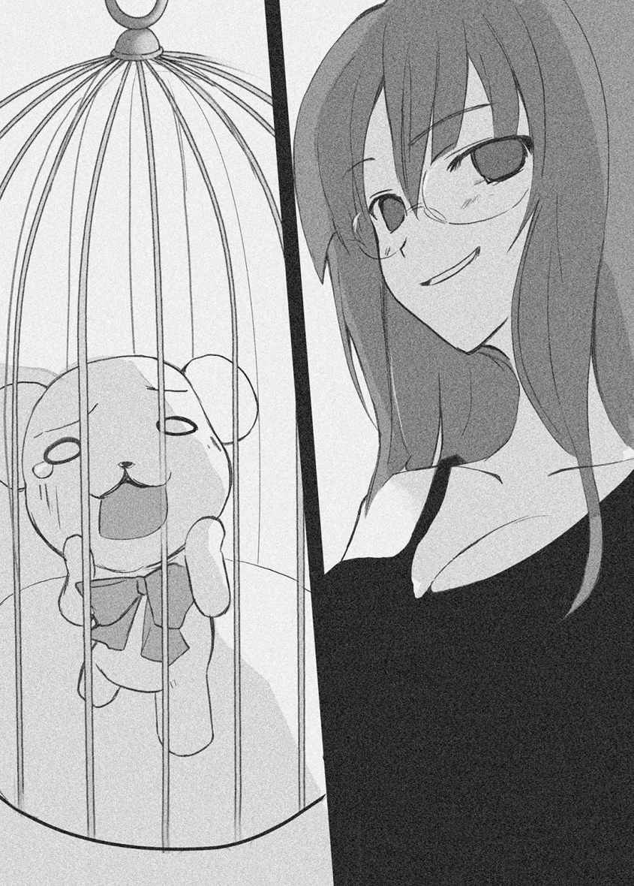
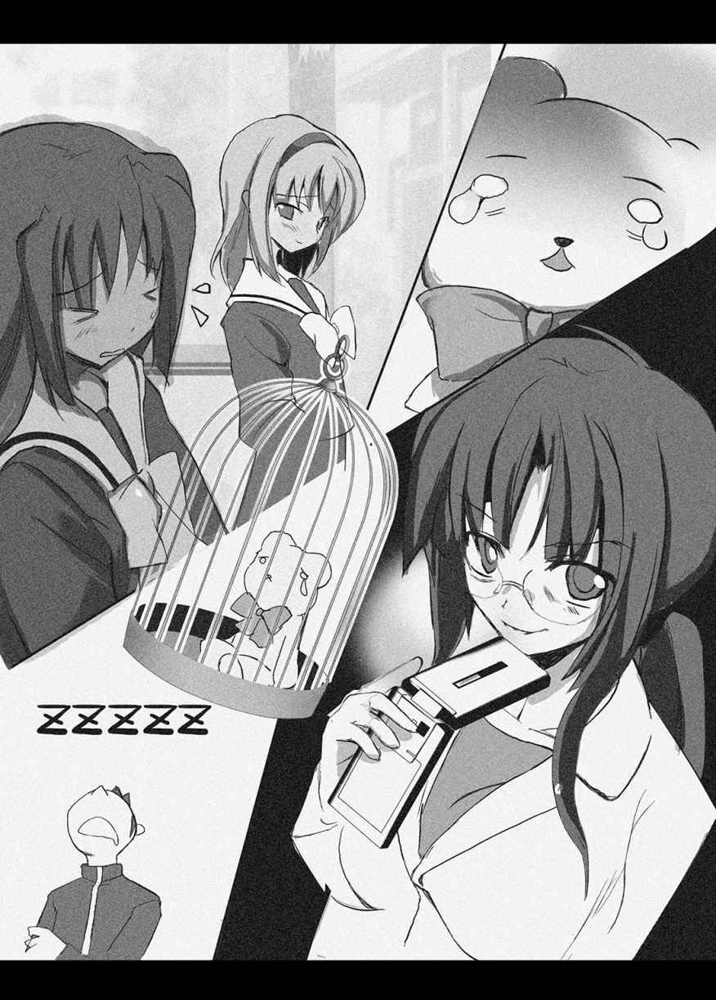

| AKUMAで少女 嵐を呼ぶ転校生 (HJ文庫) | |
| わかつきひかる | |
| (2007) | |


プロローグ
桜 井 坂 高 校 の屋上は、ピリピリしていた。
それはそろそろ昼休みも終わる頃 。ほんらいなら食欲を満たした生徒たちの楽しげなおしゃべりで活気づく時間だが、なぜか期待と緊 張 がいりまじった妙 な雰 囲 気 が支配している。
彼ら彼女らは、あるふたりの人物にちらちらと視線を寄 越 し、今か今かとばかり、目配せをしあっている。
生徒たちが気にしているのは、給 水 塔 の影 のベンチに肩 を並べて座るカップルだ。
ふたりは、ところかまわずイチャイチャするという意味でのバカップルではない。
つきあいはじめて間がないのか、どこかぎくしゃくしているものの、いかにも高校生の恋人どうしらしい初 々 しさを漂 わせている。むしろ、好ましくさえ見えるだろう。
だが、彼女の彼への会話はなんともトゲトゲしいものだった。
「これ、おいしい」
滝 沢 僚 は、カニクリームコロッケを食べながら、横に座る如月 ゆり絵 に笑いかけた。
僚の膝 の上にはランチボックスが乗っていて、もうほとんどからになっている。
ゆり絵の手作り弁当だ。
彼女は朝、自分の弁当を作るついでに僚のぶんも作ってくれる。料理上手の彼女のつくる弁当は、お世辞ではなくほんとうにおいしい。コンビニ弁当がまずく感じて食べられなくなるほどだ。
「コロッケは冷 凍 食品っ！ チンしただけよっ。誉 めるんなら、私が作った料理を誉めなさいよねっ!! 」
ゆり絵が切り口上で答える。怒 っているわけではない。これが普 段 の口調なのだ。
彼女の膝の上には、僚よりもひとまわりちいさい弁当が乗っている。ちいさな手が操る女性用のお箸 が上品に動き、卵焼きのひときれを挟 んで持ちあげる。
「うん。ゆり絵の料理はおいしいよ」
僚はおだやかに返し、ゆり絵のお箸の先の卵焼きをぱくんと食べた。
「やだもうっ。最後の一個だったのよっ！ 私が食べたかったのにっ！」
ゆり絵が、お箸をタクトのように振 り回しながら文句を言う。
「あはは。おいしかった」
「ふんっ！ とうぜんでしょ。分かり切ってること言わないでくれる？」
ゆり絵がツンと顎 をあげてそっぽを向いた。ツインテールのひと房 が大きくハネて、僚の肩のあたりをくすぐった。
恋 人 の髪 のひんやりすべすべの感 触 と、フローラルシャンプーの甘 い匂 いが、僚の胸を甘 酸 っぱく疼 かせる。
ゆり絵の頬 のうぶ毛が秋の太陽を跳 ね返し、金色に光っている。ちいさなピンク色の唇 に、大きくて綺 麗 な瞳 、長いまつげに形の良い鼻 梁 。
――やっぱりゆり絵はかわいいな。
惚 れた欲目を抜 きにしても、ゆり絵は美人だ。
顔立ちそのものはかわいい系のバランスなのに、いかにも驕 慢 そうに見えるのは、強い光を宿す黒い瞳が、挑 むように輝 いているせいかもしれない。
「おいしかった。ごちそうさま」
「ごちそうさま」
「行こうか」
「そうね」
からの弁当箱を布ナプキンでつつんで席を立つ。ゆり絵もお弁当のフタを閉 めて席を立った。
ふたりが手をつないで階段に向かうと同時に、生徒たちのあいだから、落 胆 と安 堵 のため息が漏 れた。
――はーっ。今日も何事もなかったね。いつ如月さんがキレて暴れ出すかとドキドキしてたのに。
――滝沢ってすげぇよな。なんかんだ言って、如月に合わしているもんな。よくもまあ、あんな凶 悪 女とつきあってられるよなー。俺はあんな怖 い女、まっぴらだね。
――如月さん、一週間ほど静かだったのに、元に戻 ってしまったね。カルシウムが足りないのかなぁ。もっと牛乳を飲めばいいのに。
ふたりが背中を向けた瞬 間 、声をひそめたおしゃべりが、ソーダー水のアワのように、ぱちぱちとはじけ出す。
僚は恋人の顔をそっと見た。ゆり絵の耳にも届いているはずなのに、ゆり絵は関係ないわとばかりにつーんとして、表情ひとつ変えない。
僚は恋人の手を握 る手にキュッと力をこめ、気にするなよというように、にこにこと笑いかけた。ゆり絵が、気にしてるわけないじゃない、というように、手を握り返してくる。
ツンケンしたキツイ態度は、彼女なりの照れ隠 し。
僚はもう慣れっこになっていて、ゆり絵のトゲトゲしい言葉にいちいち動 揺 したりしない。
わがままな彼女を、やさしく包みこむ彼氏。
暴君の女王様に、辛 抱 強く仕える下 僕 。
怒りっぽい少女をフォローする、温厚な癒 やし系の少年。
それが世間一 般 の、如月ゆり絵と滝沢僚の評価だった。
☆
ドアを締めると、ひんやりした空気がふたりを包んだ。
生徒たちの注視とウワサ話から解放され、ため息が出た。彼らはふたりが大げんかをすることを期待し、ドキドキワクワクしながら見守っているのである。
慣れてきたとはいえ、珍 獣 よろしく注目を浴びるのは、心弾 むものではない。
階下へと延 びている階段は人気がなく、生徒たちのざわめきが下のほうからわずかに響 いてくる。
「気をつけろよ」
僚は、手をつないでいるゆり絵に話し掛 けた。
ゆり絵は生まれつき心臓が悪い。階段をあがるのも息が切れるようなありさまで、医者からは心臓手術を勧められている。手術の前段階としての検査入院が、あさってに迫 ってきている。
「んっ、平気。ここんとこ体調がいいから。ゆっくり降りたらドキドキしないのよ」
「静かだな」
「うん。そうね......静かよね。三年生、修学旅行だしね」
「デビルベア、どうしてるんだろ？」
デビルベアは、ゆり絵が深夜に合わせ鏡をしたことによって、偶 然 に召 還 してしまった悪 魔 だ。
クマのぬいぐるみの形をした彼は、つい先日まで、ゆり絵の周囲をびゅんびゅんと飛び回り、合わせ鏡をしてつかあさい、ワシは魔界に帰りたいんやぁっ。時の潮が満ちてしもうたやんかぁ、と大 騒 ぎをしていた。
だが、あきらめたのか飽 きたのか、ここ三日ほど、一度も姿を見せていない。
「スネてるだけでしょ。ま、そのうち、でてくるでしょ。魔界の扉 が開くの、明日だもんね」
「もしかして心配してる？」
「どうして私がデビルベアを心配しなきゃいけないのよっ。ちょっと気になるだけよ。あさって検査入院だしね。......そんなことより」
ゆり絵は、つないでいた手をほどくと、階段をトンッと一段だけ降りて、僚の前に回りこんだ。
「えへへーっ。ふたりきりだーっ」
一段低い段に立ち、ぽすっと抱 きついてきた。おでこを詰 め襟 のお腹につけて、スリスリモフモフしてなつく。笑みを含 んで細められた瞳 が、僚を見上げてくる。
僚は、ゆり絵のやわらかくて温かい背中に手を回した。甘 えてこられる心 地 良さに、胸の奥 が熱くなる。
ゆり絵を凶 悪 女だとか黒いとかいうやつに、この笑顔を見せてやりたい。ゆり絵がほんとうは、かわいくて気だてのいい子だって教えてやりたい。
そう思う一方で、この笑顔を独 り占 めしてることに、誇 らしい気持ちを覚えてしまう。
「大好きよ。僚」
ゆり絵は、キスして、というふうに顎 をあげて瞳を閉じた。ふたりの身長はほとんど同じなので、そのままではキスはできない。
ゆり絵は、目を閉じたままで、階段をあがろうとした。
足を踏 み外 したのか、彼女の身体がガクッと下に落ちた。
「きゃあっ!! 」
「危ないっ！」
僚は、ゆり絵を抱き締 める腕 に力をこめた。
足に力を入れるが、重力は容 赦 なく彼の背中を押 す。
ふたりはもつれ合いながら階段を落ちていく。
視界が回り、階段と踊 り場が妙 に遠くに見えた。
「ゆり絵っ、ゆり絵ぇえっ」
「僚っ、きゃあぁあっ、僚ーっ」
ゆり絵が、僚に抱きついてくる。
僚はとっさに体を入れ替 えた。
持病のある彼女に衝 撃 を与 えるよりも、自分がケガをするほうがずっとマシだ。
「きゃーっ、きゃぁああぁっ」
「うっ、くっ、い、痛ぇっ......うぅっ」
身体が硬 いものにぶつかるときの、重い音がする。
肩 が痛い、背中が痛い、腰 が痛い。
墨 を流したように、脳裏が暗くなった。
☆
「僚、起きてっ、僚っ」
聞き慣れた声が僚を起こす。
うっすらと目をあけると、そびえ立つ階段が見えた。あまりの急角度に圧 倒 されてしまう。屋上のドアがひどく遠く見えるのは、横たわっているせいだ。踏み外したのは十数段というところだろう。
短時間だが失神していたらしかった。思っていたよりも苦痛はなく、手足も無事に動く。
まばたきするほどの時間だったはずだが、ひどく長く感じた。
「よ、よかった......生きてる......ゆり絵、無事か？」
――えっ？ この声？
自分の喉 から出た、高いトーンの甘い声にあわててしまう。
僚はがばっと身体を起こした。自分がセーラー服を着ていることに気がついた。胸が形良くもりあがり、女の身体になっている。
――ま、また？ またかよ？ なんで急に？
「私は無事でしょ？ 僚が守ってくれたもの。僚はあちこちぶつけてしまったけど」
詰め襟を着た自分が、踊り場の壁 にもたれ、腕 組 みをして僚を見ていた。
自分が自分の声で、自分に向かって話し掛 ける様子は、頭が痛くなるような光景だ。
「ま、また、変わった？」
「みたいね」
「鏡、あるか？」
「カバンの中。今はないわ」
僚は、確認のつもりで、胸やお腹のあたりをパタパタする。
セーラー服の胸を押しあげるふんわりふわふわの手 触 りと、自分の身体から立ちのぼる甘 い体 臭 にクラクラした。
僚が入っているのはゆり絵の身体で、僚の身体に入っているのはゆり絵の魂 。
これは魂の入れ替わり。
前にも一度体験した。
元に戻 って一週間ほどしか経ってないのに、またいきなり変わってしまった。
「なんでいきなり？ デビルベアがやったのか？」
「わからないけど、たぶんそう」
乱れた髪 が、うなじに絡 みついてうっとうしい。
僚は、ゆるんでしまった髪ゴムを指先で外した。ストレートロングの髪がセーラー服の襟 に砂のような音を立てて落ちかかる。
ツインテールは意外に手間がかかる。おくれ毛が落ちてきてしまうからたまに結わえ直さなくてはならない。男の僚には、本職の少女であるゆり絵のように、うまく髪の手入れができない。とき流しているほうがあらが目立たなくてすむ。
「デビルベアのやつ、私たちに無断で、勝手なことをして。許せない......締めあげてやるわ」
ファイティングポーズを取った自分が、握 り拳 にギリギリと力を入れている。怒 りのオーラが彼（彼女）の周囲にもわもわっと揺 らめき立つ。
――うっ。ゆり絵、すげぇ怒 ってるぞ......。デビルベアのやつ、ボコボコにされるかも......。かわいそうに......。
圧倒された僚は、じりじりと後ずさった。
第１章 お月様の気まぐれ
「出てきなさい。デビルベア」
僚の姿をしたゆり絵は、手鏡の柄 を指先でつまんでひらひらさせた。デビルベアを召 還 するきっかけになった手鏡だ。
鏡面が昼さがりの秋の日差しを跳 ね返し、校舎の壁 をスポットライトのように照らす。
「割るわよ？ いいの？ 魔 界 に帰れなくなっちゃうわよ」
保健室の裏手の校舎裏。
学校の敷 地 内 では珍 しく、誰も来ない一角だ。
保健室の窓は高い位置にあるし、職員室からも、校舎の窓からも、ここはちょうど死角になっている。
そのままでしばらく待ったが、デビルベアは現れない。五時間目の授業がはじまっているので、どこか眠 そうな色を帯びたざわめきが聞こえるだけだ。
だが、デビルベアは確かにいる。わずかだが、気配が感じられる。
「わかったわ」
ゆり絵は指を離 した。
手鏡は光を弾 きながらまっすぐ下に落ちていく。
乾 杯 でグラスを打ちつけたみたいな華 やかな音がして、手鏡はまばらに雑草が生えた地面の上ではじけた。キラキラする銀色のカケラとなって散乱する。
「お呼びでっか」
ゆり絵の斜 め上空に、茶色のクマのぬいぐるみが現れた。首に赤いリボンを巻いている。空中にフワフワと漂 いながら、真っ黒の丸い瞳 でゆり絵を見つめている。
「ついに出たわね」
「オバケみたいに言うのはおよしやっしゃ。鏡自体には魔力なんかあらしまへんから、なんぼ割ってもムダどっせ。用事あるんどっしゃろ？ 何でっか？」
デビルベアはなげやりな口調で答えた。空中でだらしなく足を組んでいる。
モコモコのちいさな手で、鼻に相当するあたりをいじっているなと思っていたら、ぴんっと鼻クソを飛ばした。
――何よ。コイツ。態度でかいわね。やさぐれてる？ ちがうわ。スネているんだわ。
不良化のきざしだ。長いスカートを穿 いてウンコ座りして木刀を持ってすごむようなことのないよう、ガツンと言っておかねばならない。
「これは何？ 変わってしまったじゃないの!? 」
「ワシは関係おへんがな。もともと検査入院の前に入れ替 えるっちゅう約束やったんやから、かめしまへんやろに」
検査入院は、手術をためらうゆり絵に代わり、僚がゆり絵の身体に入って受ける約束だった。デビルベアはそのことを指 摘 しているのだ。
「あんたがやったんじゃないっての!? 」
「いったん魔 法 で入れ替えますとな、体質が変化して、ちょっとしたショックで入れ替わりが起こりやすくなりますねん。ぶつかったとか、ふたり一 緒 にコケたとか、なんかあったんとちゃいまっか？」
しれっと言ってのけるところが憎 たらしい。
階段を落ちたときにできた打ち身のせいで、身体があちこち痛いことも手伝って、機 嫌 の悪さはＭＡＸだ。
「体質変化ですってぇっ!? そんなこと、聞いてなかったわよっ!! じゃあ、しょっちゅう、こういうことが起こるってコトじゃないのっ!? 」
かっとなったゆり絵は、あとずさって助走距 離 を取った。デビルベアは手が届かないと思っているようだが、僚は身体能力が高いから、なんとかなるかもしれない。
短距離ながら全力疾 走 して高跳びの選手のように跳びあがった。
デビルベアに向かって思い切り手を伸 ばす。
「な、何をしはる気やっ!? 」
デビルベアは顔色を変えると上空に向かって逃 げようとした。だが、少し遅 かった。少年の指先がぬいぐるみの足をはっしとつかむ。
――わっ、すごいっ。届いたわ。僚って、やっぱり運動神経がいいんだわ！
ぶつけたところはあちこち痛いが、健康な少年の体に入っているのは楽しい。体が思うように動く快感といったらない。
「ほうら、捕 まえた」
ゆり絵は、リボンの端 を両手で持つと、勢い良く左右に引いた。
「う、うわーっ、うわうわ、うあーっ。ぎゃーっ」
首を絞 められたデビルベアは悲鳴をあげ、じたばたとぬいぐるみの手足を動かした。
「ぎょえーっ、ぐわーっ、ぎゅーっ」
詰 め襟 の少年は、リボンを持って振 り回し、バンバンと校舎の壁に打ちつけてから、ぬいぐるみの顔を見た。
「責任を取りなさいね？」
デビルベアはパクパクと口を動かしているが、声が出ない様子だ。ゆり絵は、締 めあげていたリボンを少し緩 めた。
「うぐっ......はぁはぁ、ふたりで抱 き合って階段落ちでもしはったらどうでっか？ あっさり戻 りまっせ」
「いやよ。そんなの。痛いじゃない？ ケガしたらどうするのよっ。あっ、そうだわ......そんなので戻るってコトは、君、必要ないわねっ。......じゃあ、合わせ鏡しなくってもいいよねぇ」
デビルベアの顔色がさーっと青くなった。比 喩 ではない。茶色のモコモコした布でできたぬいぐるみの顔が、すうっと青白く染まったのである。
「ワシ、ワシ、あんたはんの望み、叶 えたったやおへんか。あ、合わせ鏡するって約束やったやないかっ。そやのに、合わせ鏡、してくれへんかった......。ひどいひどいっ、鬼やーっ、悪 魔 やーっ。恐 ろしいっ!! 」
「よくもそんなことが言えるわね。あんたのおかげでひっかきまわされて大変だったのよ」
すごんでやると、デビルベアは、ガタガタとふるえ始めた。
「ひーっ、ひぃ......、ひぃ......」
ぬいぐるみの黒い瞳 が濡 れ、米 粒 のような涙 がポロポロと噴 きこぼれる。
あわれっぽい様子がおもしろく、もっといじめてやりたくなる。
「怯 えているわね。君、ほんとうに悪魔？」
「悪魔どすがなっ！ ワシにはすごい魔力があるんどっせっ！」
「私がいなきゃ、魔界に帰れないくせに？」
デビルベアはぐっとつまった。
子供がよくするように、手の甲 でキュッと涙を拭 くと、甲 高 い声で叫 ぶ。
「も、もうよろしおまっ！ ひっ、ひとりで帰りまっさ！」
「わかったわ。勝手になさい。合わせ鏡してあげるつもりだったのに残念だわ」
ゆり絵はつんと顎 をあげると、デビルベアに背を向けた。
「時の潮が満ちるときっていうの、明日の朝にやってくるんでしょ？ 君をいったん帰らせてあげて、検査入院が終わってからもういちど来て貰 うつもりだったの。でも、ひとりで帰れるんなら、私が心配することなかったね」
デビルベアは、あ、とちいさな声をあげ、とりすがる表情で、詰め襟の背中に向けて片手を伸ばした。
苦しそうな表情を浮 かべて顔を背 けると、ちいさな手をきゅっと握 る。ほんとうは呼び止めたくてならないのだが、必死で我 慢 しているという雰 囲 気 だ。
「ゆり絵はんなんか嫌 いやぁっ!! 」
デビルベアは未練を断ち切るように勢い良く飛びあがると、空中でふっと消えた。
☆
それより少し前――。
ひとりと一匹 が校舎裏で起こしたいさかいを、じっと聞いている人物がいた。
古 泉 麻 子 、三十歳 。保健室の主である。
ストレートの黒 髪 を後頭部で結わえ、銀 縁 の眼鏡を掛 け、白衣を着ている。
顔色が冴 えず表情が乏 しいのは、眼鏡が光線を跳 ね返して白く映り、瞳が隠 れてしまっているせいもあるのだろう。
白衣はどこかくたびれて、全体に覇 気 のない印象だ。
養護教 諭 である彼女は、机に保健日報を開いて目を落としている。
だが、あまり真 剣 に取り組んでいない様子で、書類の上でペンを指先で玩 んだり、マグカップのコーヒーを飲んだりしている。
いつ生徒が入ってくるかわからないから、くつろぐときでも仕事をしているポーズを崩 さないのが、養護教諭のたしなみだ。
だが、彼女はくつろいではいなかった。むしろ、ヒリヒリした緊 張 感を全身に漂 わせている。
彼女が視線を向けるのは、保健室には必ずある洗面所の大きな鏡だ。高い位置にある窓の外の様子が、はっきりと映っている。
はじめはキラキラする光が動いた。何かなと思って見ていたら、空中にクマのぬいぐるみがあらわれた。
空中にふわふわと浮かんでいるテディベアを、誰かの手が捕 まえる。
クマのぬいぐるみの声なのか、甲高い声が、少年と会話している声が聞こえてくる。
「ワシ、ワシ、あんたはんの望み、叶えたったやおへんか」
――また出てきてくれたのね。望みを叶えてくれるぬいぐるみが......。
麻子は気配を殺し、じっと耳を澄 ましている。
男子生徒とクマのぬいぐるみが、おしゃべりをしている声は何度も聞いた。はじめて見たときは疲 れているのかなと思っていたが、いま現実に聞こえてくる声は、勘 違 いではありえない。
興奮のあまり手がふるえ、ネッシーがプリントされたマグカップの中で、インスタントコーヒーがたぷたぷ揺 れた。
「悪 魔 どすがなっ！ ワシにはすごい魔力があるんどっせっ！」
――悪魔ね......。
麻子は、ふ、ふ、ふ......と、不気味に笑った。
これが漫 画 であれば、頭上に真っ黒なカケアミがとぐろを巻くことであろう。
彼女は地味なカバンからケータイを取り出すと、親指でボタンを操作した。ちいさな液 晶 画面を表示されたメールの文面をじっと見る。
それは、ネットショップのお知らせメールだった。
十日後ほど前、ネットショッピングで購 入 した、ある珍 しい商品を発送したという内容である。到 着 予定は今日だから、晩には手に入る。
明日には学校に持っていけるだろう。
「ふ、ふ、ふ、ふ......」
ケータイにつけたつちのこ のストラップがしゃらしゃら鳴った。
頭が丸く、胴 が太く、ちいさな尾 がついた短い蛇 のような飾 り物は、どこか不気味なデザインなのだが、彼女の纏 うどんよりとした雰囲気に、不思議とよく似合っていた。
☆
先生が腕 時 計 に目を落とし、数学の教科書を閉じた。
「じゃあ、明日は七十五ページからね。宿題忘れないでね」
「起立、礼、着席」
日直のコールに合わせておじぎをする。
僚は、顔の前に落ちてきた長い黒髪を指先でそっと払 ってから、ゆり絵に目配せを送った。
ゆり絵は午後の授業に遅 刻 してきた。
デビルベアを締 めあげてやるといきまいていたわりには、どこかすっきりしない表情を浮かべていた。いったい何があったのだろう。気になってしかたがない。
見慣れた自分の顔を見ながら、中庭、と言葉に出さずにつぶやく。
ゆり絵は、胸の前で腕 組 みをして難しい顔をしながら、わかっている、というようにうなずいた。
ビジュアルは自分なのに、中に入っているのがゆり絵だから、印象が違 って見える。
やたらどうどうとしてかっこういい。身長まで高くなったように思えてしまう。
「行こうよ」
僚がゆり絵の手をつないだとき、羨 望 の響 きを帯びた吐 息 が漏 れた。
「滝 沢 くんと如月 さんって、ラブラブなんだね......」
「えっ、何？ 何なの？」
「さっきね、滝沢くんと如月さんがね、こう、目と目で会話して、手をつないだのよ」
「わぁ。いいなぁ。私も恋 人 が欲しいなぁ......」
女の子たちがぞろぞろとやってきて、僚とゆり絵を取り囲んだ。クラスに少ししかいない男子生徒は、またやっているとばかりに傍 観 している。
足止めをくらってしまった形だが、女子生徒たちに他意はない。冷やかしたり、はやしたてたりするのではなく、無 邪 気 な憧 憬 の視線で僚を見ている。
顔がかっと赤くなった。悪目立ちしないよう、教室では節度を持とうとゆり絵に申し入れていたにもかかわらず、つい手をつないでしまった。デビルベアに気を取られていたとはいえ、これはちょっと照れくさい。
「や、やだ。恥 ずかしい......」
僚はつないでいた手を離 すと、両手で頬 を押 さえてうつむいた。とき流した長い黒 髪 が赤く染まった頬を隠 し、初々しく輝 く。
「わ、如月さん。顔、真っ赤。かわいいー」
「ほんとね。如月さん。かわいい。一週間ほどつーんってしてたけど、前に戻 ってしまったね」
「ねぇねぇ、如月さんって二重人格？」
女子生徒のひとりが、無邪気な口調で聞いてきた。
――うっ！
ぎくぎくっとしたが、あいまいに笑ってごまかしておく。
魂 が入れ替 わっているのだから、二重人格に見えても不思議ではない。まさかバレないだろうとは思うものの、冷 や汗 がたあらりと背中を伝う。
「お雛 祭 りなんじゃない？」
女子生徒たちのあいだに、納得した空気が漂 う。
「あーっ。なるほどーっ。わかるっ。私もそうだよ」
「私もだわー。女の子の日が来ると、性格変わっちゃうよね」
「私なんか、お月様の来る一週間ぐらい前からイライラして怒 りっぽくなるよ」
――お雛祭 り？ お月様......何だろ？ 女の子の日......。わかんねぇ。
女の子たちだけで通じる隠 語 らしいが、本職の少女ではない僚にはわからない。
助けを求めて横に立っているゆり絵の顔をそっと見るが、彼女はえらそうにふんぞり返っているばかりで、教えてくれそうにない。
「あーっ。そうかぁ。如月さんって、生理周期で機 嫌 が変わるんだぁ。わかるぅーっ」
――せ、生理ぃーっ。
桜 井 坂 高 校 は、女子高から共学に変わって数年しか経ってないので、女子生徒が圧 倒 的 に多い。そのため、ノリはまるっきり女子高だ。
男なんか目に入ってないわとばかりの、ナマナマしい女子高トークにひいてしまい、顔がさらに赤くなる。
「かわいいっ。如月さんって、なんてかわいいのっ!! 」
「うん。かわいいね。おとなしいときの如月さんってさ。こう、小首を傾 げてさ。はにかんで顔を赤くするの。頬を両手で押さえて、こんなふうに、きゃっ、って」
生徒のひとりが、僚のしぐさをおおげさに真 似 た。
――えっ。僕、そんなカマっぽい仕草してたのか？
クラスメートが演じた自分は、どきっとするほど女っぽかった。僚はじたばたと否定する。
「やだぁ。やめえぇ。そんなことないわ。からかわないでよーっ」
――うわっ。僕、もう、言葉が女になってるぞっ。
ゆり絵の身体に入ってたったの一時間ほどなのに、もう女になじんでしまっている。
前のときも感じたが、僚は意外と影 響 されやすいタチのようだ。
「ゆり絵はかわいいぞ。性格もいいし、最高の女の子だ」
無言で立っていたゆり絵が静かな口調で言った。それはクラス中に響き、さんざめいていた女子生徒をシンとさせた。
ゆり絵は美 貌 に自信を持っている。ファッション雑誌のチェックも熱心だし、まだ本格的な化 粧 はしていないくせに、化粧品のカタログを眺 めるのも好きだ。
そんな彼女が自分のことをかわいいと言うのはとうぜんだが、僚とゆり絵は魂が入れ替わっていて、しかもふたりは公認の恋人同士だ。
おとなしめの男子高校生が、乱暴で凶 悪 な恋 人 をかわいいと公言する！
しかも、あの如月ゆり絵を！ 性格がいいと言い切ってしまったのである。
それは少女にとって、うっとりするようなシチュエーションだった。
女の子たちの間から、羨 望 のため息が漏 れる。
「いいなぁ。私も、恋人が欲しい。如月さんの性格を誉 めれる人って滝沢くんぐらいよねぇ」
「いいな。如月さん。うらやましいなぁ。滝沢くんってさ、癒 し系 だしさ」
「うん。滝沢くんってやさしいよね。如月さんがギャンギャン怒 鳴 ってもいっつも笑ってるもん。いいなぁ」
いいなぁ、いいなぁ、の声が木 霊 する。
「ゆり絵はかわいいよー。最高の女の子だーっ」
さっき、僚の仕草を真似た女子生徒が声音を使い、おおげさなアクションでマネをした。
横に立つ女の子が子宮反射で答える。
「僚くんもステキだわっ！」
「大好きだっ、ゆり絵っ」
「ずっと恋人でいようねっ」
ふたりはきゅうっと抱 き合った。女の子たちがクスクスと笑い出す。
「うまいっ！ さすが演劇部っ!! 」
「あははっ。それじゃレズだよぉっ」
レズという言葉にドキッとして、沙 希 のほうを見てしまう。
沙希は、みんなと一 緒 におだやかに笑っていた。
岡 下 先 輩 と一緒にいないときの沙希は至ってまともで、ごく普 通 の美少女だ。
――そうだ。僕、沙希と話さなきゃいけないんだ......。友達としてつきあっていきたいって......。ゆり絵は何も言ってないはずだから。
「何やってんだ、おまえたち。おーい。授業はじめるぞーっ」
ガラリとドアが開き、教室に入ってきた英語の先生が、うわついた雰 囲 気 に首をひねりながら教 壇 に立った。
「あーっ。チャイム鳴ってたんだーっ。聞こえなかったーっ」
「はーいっ」
僚とゆり絵を囲む女の子たちの輪がぱらぱらとほどけていき、それぞれに席につく。
沙希の件はいつか解決しなくてはならない問題だ。
難しい宿題に、ふうとため息がでてしまう。
☆
桜井坂高校の通学路は、なだらかな下り坂になっている。
三々五々下校していく生徒たちにまじって、僚とゆり絵は手をつないで歩いていた。
――うぅ。やっぱり恥 ずかしい。スカートって、スウスウしてたよりないし......。
女装のヘンタイになった気分で照れくさく、ついつい伏 し目 がちになってしまう。横を歩くゆり絵は、健康な男の体がうれしいらしく、どうどうしたものだ。
胸を張って歩く男子高校生と、ストレートロングの黒 髪 を風に揺 らしながら、恋人の手をしっかりと握 って歩く女子高生。
初々しい高校生のカップルに、道行く人が好意的な視線を向ける。
美少女はいよいよ恥じらって、頬 を赤くしてうつむく。未熟な色気を漂 わせるその様子は、ドキンとするほどかわいらしいのだが、本人だけが気づかない。
「それでアイツは何て言ってたんだ？」
僚はゆり絵に話しかけた。
他人に聞かれることを警 戒 して、悪 魔 だとかデビルベアだとか言わず、指示代名詞でごまかしておく。
「ワシのせいじゃない、ってさ。一度入れ替 えると体質が変化して、入れ替わりがしやすくなるんだって」
「じゃあ、また、こういうことが起こるかも、ってことか」
「みたいね。なんか、一緒に階段から落ちたとか、そういうのでも変わっちゃうみたいよ」
「よかったじゃないか？」
「なにがいいのよっ!! 困るわよっ！」
「そりゃそうだけど、タイミングがよかったと思って。検査入院は僕が受ける約束だったし。アイツだって、明日あっちの世界に返してやれるだろ」
ゆり絵が怒 り、僚がとりなすというパターンは、魂 が入れ替わってしまった今でも変わっていない。
「ひとりで帰るんだってさっ。ふんっ。私がいないとできないくせに、ナマイキなんだからっ！」
「ケンカしたんだ？」
デビルベアと話したはずのゆり絵が、すっきりしない表情で戻 ってきたのは、ケンカが原因だったらしい。
ゆり絵はムスッとして答えない。
「明日、アイツをあっちの世界に返してやろうぜ。検査入院が終わったら、また来てもらったらいいんだから。アイツ、こっちに来て長いだろ。いくら何でもかわいそうだよ」
「ひとりで帰るって言ってるんだから、どうでもいいでしょっ！......あっ、ちょっと待って」
ゆり絵がズボンのポケットから、ケータイを取り出した。ケータイを耳に当てようとして、そうだっけ、とつぶやき、僚にケータイを渡 す。
ゆり絵にかかってきた電話は、ゆり絵が取らなくてならない。中に入っている魂が僚であってもだ。
今はお互 い、自分のケータイを持っているが、交 換 したほうが良さそうだ。
僚は、ゆり絵から預かったケータイを、通話にして耳に当てる。
「はい。ゆり絵です。えっ？ Ｔ県こども病院の事務局ですか？」
僚は思わず足を止めた。
横を歩くゆり絵も、不安そうな表情で立ち止まっている。僚は、ゆり絵に聞かせるために、電話の内容を復唱した。
「は？ 検査入院が中止？ どういうことですか？」
意外すぎる事態に、不安になってしまう。
固定電話ではなく、ゆり絵のケータイに病院から電話が来ることも異例なら、あさってに控 えた検査入院が中止になるというのもわからない。ゆり絵も心配そうな表情を浮 かべている。僚はケータイを持つ手に力をこめ、耳を澄 ました。
「甲 斐 先生からのメーセッジです。発作を押 さえる新薬の承認が降り、検査を急ぐ必要はなくなりました。詳 しいことは次の定期検 診 で説明します、だそうです」
甲斐先生は、ゆり絵の主治医だ。
「うわーっ、ほんとですかーっ!? ありがとうございますっ!! 」
僚は復唱を忘れて、歓 声 をあげて通話を切った。
「何？」
「新薬の承認が降りたんだって。ＳＱＬがあがるから、あわてて手術しなくっていいってコトなんだろうな」
ＳＱＬというのは、生活の質という意味で、ゆり絵と一 緒 にいるうちなんとなく覚えてしまった医学用語だ。
病気とつきあいながらも毎日を活動的に明るく過ごす、というような意味である。
「わーっ。ほんとうっ？ 承認まで四年はかかるっていってたのにっ！ ずいぶん早かったんじゃないっ？ うれしいっ。すごーいっ!! 」
僚とゆり絵は抱 き合ってはしゃぎあった。まるでワールドカップでサッカー日本代表が優勝したような騒 ぎように、下校途 中 の生徒たちが驚 いた表情で眺 めながら歩いていく。
ゆり絵の病気は心 房 中 隔 欠損という心臓病だ。
心臓の部屋を隔 てる壁 にごくちいさな穴が開いていて、血液を送り出すポンプとしての性能が落ちている。少しの運動でドキドキしたり息が切れたり、発作を起こしたりする。
この発作を押さえる薬が、商品化に向けて動き出す。
待ちに待った吉 報 だった。
「でもさ、ゆり絵......びょ」
――病気そのものは治ってないんだぜ。
だが、僚は、言いかけてやめた。こんなに喜んでいるのに、水を差すことはない。身体の状態は、本人がいちばんわかっているはずだから。
スポーツ選手にはなれないし、妊 娠 出産もできない。心臓に負担がかかることはいっさいがっさいＮＧだ。
だが、それでも発作を押さえることができる薬の承認は、朗報には違 いなかった。
「お祝いしよう」
「そうね！ ケーキ買お！」
「あと、カラオケっ！」
「わかった」
ゆり絵は僚の手を引っぱりながら走り出した。
僚はあわてた。ゆり絵に引きずられるように走り出してしまったが、だいじょうぶなのか。
「おい、走っちゃダメだろ」
「体調がいいときなら走ってもかまわないの。安静にしなきゃいけないって病気じゃないし。ねっ。走れているでしょ？」
「だったら......はぁはぁ......体育の授業、出てもいいか？」
「いいわよ。ムリしない程度ならね。体操服も、いつも持ってきているのよ。私は発作が怖 いから休んでるけど、今はもう、発作でも何でもどーんと来いって気分なのっ」
僚が息を荒 げていることを見て取って、ゆり絵が足取りをゆっくりにした。走ったのは五十メートルほどの距 離 だろう。早足で歩いたほどのスピードしか出てないのに、全力疾 走 したみたいに息があがる。
「ねっ。走れるでしょ？」
「ゆり絵はすごいよ。がんばりやさんだ」
前にも体験しているとはいえ、衝 撃 は深かった。
ほんの少し走っただけで、これほどまでに息が切れる。つい数時間前まで健康な身体に入っていただけに、ゆり絵の身体の身体能力の低さを実感してしまう。
ゆり絵は、発作のつらさと、この不便さに耐 えてきたのだ。発作だけでも無くなるかもしれないというのは、ほんとうにうれしいことだろう。
「えへへっ。でしょでしょっ」
自分の顔がとろけそうな笑顔を浮かべている。
ビジュアルは自分なのだが、喜んでいるゆり絵はかわいくて、胸が熱くなっていく。
「どうしよう。くっつきたくなってきた」
「私も。......くっついちゃえっ。えいっ」
ゆり絵が腕 を絡 めてきた。
自分の身体が近くなり、体温が服越しに感じられる。
僚はゆり絵の肩 に側頭部をつけ、スリスリしてなついた。乳 房 のふくらみを、詰 め襟 の腕が押してきて、不思議な気分になる。なつかしい匂 いがした。
通学路を歩く生徒たちが、腕を絡めて歩くふたりに、ほほえましそうな、うらやましそうな視線を送る。
「歩きにくいぞ」
ギャラリーを気にしているのか、ゆり絵が照れくさそうにそっぽを向きながら、わざと少年っぽく言った。
「ふふっ......」
僚が頬 を染めてはにかんだ。
その様子は、自分でもあきれるぐらい少女っぽかった。内心でげっそりするが、ゆり絵とくっついて歩くのは気持ち良く、自分の急激な少女化さえも気にならない。
さわやかな少年と内気な美少女のカップルは、ひとときもはなれていたくないとばかりに腕を絡め、密着しながら歩いていく。
第２章 はじめての女子更衣室
――うー、喉 が痛ぇ......。歌いすぎだ......。
僚 は喉を人差し指と中指で押 さえて、あーっとちいさく声を出した。
声がかすれてしまっている。
いつもゆり絵 とふたりで通学しているので、ひとりきりで歩く桜 井 坂 高 校 の通学路は妙 に広く感じる。
昨日入ってきた朗報のせいもあるのだろう。
秋特有の強い風が、髪 をくすぐる。秋の空は青く透 明 で、どこまでも広がっている。
睡 眠 不足の目に朝日が染みる。
――ゆり絵、まだ寝 てるのかな......。
僚は、カバンからケータイを取り出す。
メタリックピンクのケータイはゆり絵のものだ。
身体に合っているケータイを持つほうがいいという判断で、ケータイを取 り替 えた。
プライベートを知られることへのためらいはあるが、ゆり絵の父が自分の娘 に電話したところ、少年の声が「はいゆり絵だけど」と答えたら大 騒 ぎになってしまう。
僚は、ゆり絵に電話をしようとして、躊 躇 した。
――もう少し寝させてやりたいな。あんなに喜んでたんだし......。
昨日、学校の帰り、カラオケボックスに行き、サービスタイムで半額だったのをいいことに、二時間ほど歌いまくった。
ファミレスでセットメニューを食べ、ケーキとコーヒーで乾 杯 した。
家に帰ってからもまだ興奮は納まらず、父のカラオケマイクを探し出してきて歌った。
カラオケマイクに入っている曲は昔の演歌ばかりだったが、歌える曲が無くなってきたときでちょうどよかった。
心臓のわるいゆり絵の身体は、あまり歌うと息が切れるので、僚はそんなに歌わなかったが、ゆり絵のはしゃぎようは見ていてほほえましくなるぐらいだった。
朝、彼女はぐっすりで、僚だけ先に登校した。
――まあいいか。ゆり絵の成績だったら、少しぐらい休んでもだいじょうぶだよな。
ケータイをカバンにしまったときだった。
「おはよっ」
背後から声がかかった。
藤 宮 沙 希 。
かわいくて、性格がよくて、勉強もスポーツもできると男たちに評判で、桜井坂高校のアイドル的存在だ。
ゆり絵という恋 人 ができるまでは、僚のあこがれの存在だった。
「お、おはよう」
「今朝はひとりなんだ？」
沙希は、両手を後ろで組み、どこか遠 慮 がちな口調で聞いた。
「うん。ゆ......滝 沢 くん、寝 過 ごしちゃったの。沙希こそ、今日はひとりなの？」
意識して女言葉で話す。
ぎくしゃくした空気が漂 い、いたたまれない思いになる。
「うん。おね......岡 下 先 輩 、修学旅行だしね」
「あっ。そうよねっ」
岡下留 香 は、沙希の恋人だ。
元女子高の桜井坂高校には、今でも姉妹制度が残っていて、岡下先輩は沙希のお姉様だ。
沙希は、まじまじと僚を見た。
うしろめたさを感じた僚は、そっと目を伏 せる。長いまつげが整った顔に翳 を落とし、独特の情感を醸 し出す。
「やっぱりだわ。ゆり絵、雰 囲 気 、前に戻 ってる。一週間ほど前だったかな。一 緒 にトイレに行こうよって誘 ったら、トイレぐらいひとりでいけるわ、さわらないでよって、ピシャッて手を叩 いたのよ。別人みたいだった」
――うっ。ゆり絵、そんなことやってたのか......。らしいと言えばらしいんだけど......。
「そ、その、私、......周期で、イライラするときがあって......」
男の僚には、さすがに生理と口に出すことは難しい。気 恥 ずかしさのあまり、顔が赤くなってしまう。
「うん。女の子だったら、誰でもあることだよ。気にすることないと思う。みんな気にしてないと思うし......」
――だ、誰にでもあることなのか？
当たり前だが、ゆり絵の魂 が入っているときのゆり絵と、僚の魂が入っているときのゆり絵は別人だ。二重人格なのかと、面と向かって聞かれたことさえあるほどだ。
それほどの変化を、よくあることと言い切ってしまう女の子たちの常識にクラクラして、めまいを起こしてしまいそうだ。女が感情的で非論理的なのは、子宮でものを考えているせいかもしれない。
――女体の神秘だなぁ......。
「考えこんじゃってどうしたの？」
沙希が僚の顔を覗 きこんでくる。髪 が朝日に透 けて金色に輝 く。沙希のかわいらしさにドキンとしてしまう。
――そうだ。言うなら今だ。
「僕は沙希と仲良くしたい。友達としてしかつきあえないけど、仲良くしたいんだ。都合、良すぎるかな？」
沙希は、大きな瞳 を見開いて僚を見ている。その瞳がうるうると揺 れた。
その様子は、びっくりしてるようでもあり、泣き出す寸前のようにも見えた
「お、怒 った？」
「怒ってないよ。私、あんなことしたのに、そんな風に言ってもらえるなんて思わなかった。すごくうれしい......」
沙希は両手で口を覆 うと、瞳をうるませた。
――ああ、そうか、怒ってたんじゃなくて、喜んでたんだ......。
百 合 志向のある沙希は、僚の魂が入ったゆり絵を好きになり、押 し倒 そうとした。
岡下先輩に邪 魔 されて未 遂 に終わったが、そのさい、岡下留香と藤宮沙希は、桜の木の下で契 りを交わした姉妹だったことが判明した。
沙希はごく普 通 の美少女なのに、岡下先輩と一緒にいると、何かのスイッチが入るらしく、突 如 として歌い出すうえに性格まで変わってしまう。
その豹 変 ぶりは、恐 怖 さえ覚えるほどだった。
「沙希はそれでいいの？」
「うん。私にはお姉様がいるもん。ゆり絵って、滝沢くんと仲がいいんでしょ？ お似合いだよ。邪魔しないから安心して」
沙希は片目をつぶって見せた。さっぱりした表情で笑っている様子は、僚のあこがれの存在だった学園のアイドルそのものだ。
壊 れていない沙希は、うっとりするほどかわいくて、胸がウズウズしてしまう。
――まともだ......。沙希が元通りになっているっ！ すげぇ。神様っ。三年を修学旅行に行かせてくれてありがとうっ！
「どうしたのよ。ヘンな顔しちゃって？」
「沙希が元に戻っているんで安心したんだ」
「私は私よ。いつもと同じ。ゆり絵だってそうでしょ」
「そ、そうか......」
「手、つないでいい？」
「う......うん......」
沙希に押し倒されたときの困 惑 と恐怖（と気持ち良さ）が蘇 り、おずおずと手を伸 ばす。
学園のアイドルの、ふんわりぷにぷにした温かい手の感 触 に、不安が拭 ったように消えていく。
――女の身体っていいよな。こうして、学園のアイドルと手をつなげるんだから。
――よかった。僕ってやっぱり男なんだ......。
感動がじーんと広がった。
魂が入れ替 わってから覚えていた、心まで女性化してしまうのでは、という不安が解消されていく。
僚の中には、女の身体になじんで居 心 地 の良さに喜ぶ僚と、いやそれじゃだめだ、男なんだから女性化するなと叫 ぶ僚がふたりいて、存在を主張しあっている。
沙希と一緒にいると、男の僚の存在感が大きくなる。それはノーマルな男性である僚にとって、とてもうれしい発見だった。
「よかった。僕、沙希とケンカしたくなかったんだ」
「私たち、親友でいようね」
「うんっ！」
ふたりは手を取り合い、おでこをくっつけ合わせると、目と目を見合わせて笑い合った。
☆
沙希とふたりで、手をつないで教室に入ると、クラスメートたちの明るい声がはじけた。
「おはよ」
「おはよう」
教室は、授業がはじまるまでの時間をそれぞれに楽しんでいる生徒達のおしゃべりでにぎやかだ。
女子生徒がクラスの大半を占 めるので、華 やかな空気に充 ちている。
「あっと、そうだ。私、日直だったんだ......」
沙希は机にカバンを置くなり、バタバタと教室を出ていった。沙希を追いかけて廊 下 に出る。
「手伝おうか？」
「だいじょうぶよ」
沙希が、廊下を身軽く走っていく様子が見えた。
セミロングの髪 がキラキラとなびき、膝 小 僧 の内側のクボミが白く輝 く。ぴちぴちと躍 動 する身体を見ていると、うらやましさがこみあげてきた。
――いいなぁ......。やっぱ、身体動かしたいな。体育の授業、受けようかな。今日の体育、なんなんだろ。運動がダメなら、準備運動だけでも......。みんなの迷 惑 になるかなぁ......。
そんなことを考えながら、ロッカーから出した教科書とノートを机の中に入れようとしたときのことだった。
教科書が入らない。あきらかに何かにつかえてしまっている。まるでクッションかボール、あるいは猫 が詰 めこまれているみたいだ。
机の中をひょいと覗 きこんだ僚は、机の下のスペースに押 しこまれているデビルベアを見て、ぷっと噴 き出しそうになった。
「僚はん......だ、出して、つかあさい」
デビルベアは、なさけない声で訴 えながら、顔をめぐらせて僚を見た。上下から圧 迫 され、顔がひしゃげておかしな顔になっている。黒い瞳 からポロンポロンと涙 がこぼれ、おかしいぐらいに哀 れっぽい。
「ど、どうしたんだ？」
「僚はんとふたりだけで話したくて、待ってたんですわ......」
――バカだ。こいつ。バカすぎる......。
気の毒でおかしくてかわいそうで、横 隔 膜 がヒクヒクする。
すごい魔 力 を使えるのだから、いくらでもいい方法があったはずなのに、なにもわざわざ机の中に詰まらなくてもよさそうなものだ。
――笑っちゃダメだ。気の毒だ......。
僚は意志の力を総動員して、平然とした表情をつくろった。眉 と口のあたりがピクピクして、妙 な顔をしてそうで不安だ。
「ここじゃまずい。一 緒 に来い」
「どこへ行きますのや？」
「校舎裏」
机の下に手をいれてぬいぐるみをつかみだし、目立たないように胸に抱 いて教室を出る。
廊下を歩くと、視線が僚に集中した。肌 がヒリヒリして痛いほどだ。
――うっ、み、みんな見てる。
女子高生が、校舎の廊下をぬいぐるみを抱いて歩いているというのは、別におかしくはない。
だが、抱いている人物が問題だった。
――やっぱ、ヘンだよな、ゆり絵にぬいぐるみなんて、似合わないよな......。
かっと顔が赤くなった。
愛らしいぬいぐるみを胸に抱き、頬 を赤く上気させながら伏 し目 がちで歩く僚は、守ってあげたい系の内気な女子高生という雰 囲 気 で、あまりにもはまりすぎている。
女子たちが、ささやいている声が聞こえてきた。
――如月 さん、雰囲気が違 うねー。かわいい系っていうの？ 内気っぽいってか。
――なんかね。生理周期で性格が変わるらしいよ。Ｄ組のみんなが言ってたよ。あの人、心臓が悪いから、生理痛が重いんじゃないのかな。
――あー、なるほど。わかるぅ！ 私も生理んとき、お腹が痛くてさーっ。
少ししかいない男子生徒は、ぎょっとして足を止め、聞いてはいけないものを聞いてしまったという雰囲気で顔を逸 らす。
男の僚には、生理生理と連呼する声が恥 ずかしくてならず、顔がいよいよ赤くなる。
――女って、女って、なんでこうデリカシーがないんだよーっ。
☆
校舎の廊 下 を、少年が歩いていた。
彼は私服だった。ジーンズに長 袖 のＴシャツを着て、しゃれたデザインのブレザーを羽織っている。ななめがけにしたリュックという格好だ。
なんでもない服装なのだが、どこかおしゃれで、垢 抜 けている。
手足が長く、顔がちいさいせいかもしれない。
整っているが、どこか愛 嬌 のある顔立ちをしている。
クセ毛の黒 髪 は少し長めでさらさらだ。湯上がりみたいにさっぱりした頬も、まるでアイドルタレントのようだった。
彼は、きょろきょろと周囲を見回しながら、廊下を歩いていく。
その横を歩く、ボックススカートとブラウスにベストのハイミスの女性は、事務室の職員だ。
彼はさっき、入口近くの事務室で転校のための事務手続きをすませた。校長に挨 拶 をして、転校を認めてもらって、それではじめて転校が許される。転入試験はとうに合格しているから、これもまた事務手続きのようなものだ。そのあとは校舎の案内になり、手続きはすべて完 了 する。
「女子ばっかりですね......」
彼はちいさな声でつぶやいた。
桜井坂高校にはじめて足を踏 み入れた人間は、女子比率の高さにみな驚 く。外部から来た人間には、校舎の空気までピンク色にかすんで見えるという。
「三年前まで女子高でしたからね。私が在校生のときは、もっと躾 が厳しかったんですけど、今の若い子はだらしなくなってしまって」
地味なお仕着せの事務員が答える。
「それでお姉さんが、こんなにもしっとりしたかわいい人になったんですね。ああ、あなたのような大人の女性にかわいいなんて失礼だ。しっとりした美しい人に訂 正 しておきます」
彼が笑いかけると、真っ白な歯がキラッと光った。
「い、いやだわ。そんな......」
「俺は好きですよ。あなたみたいなきちんとした方が」
地味な事務員は、転校生のリップサービスを間に受けて、頬を赤くして喜んでいる。
わあ、と歓 声 があがった。
――あの男の子、誰かしら？ 私服の子よ。転校生かな。かっこいいね。
――そうかな。ちょっとキザっぽいよ。テレビで見たホストがこんなだったわ。
――ステキねぇ。何年生かな？ うちのクラスに転入してくれたらうれしいんだけど。
授業がはじまるまでの時間をくつろいで過ごす生徒たちが、転校生をめざとくざわざわする。
彼は、ウワサをしている女子高生に笑いかけ、右手の人差し指と中指を揃 えて立てると、顔の横でピッと左右に振 って見せた。
普 通 の少年がすると失笑物のキザな仕草なのだが、彼がすると不思議なほどピタリとはまり、キャーッと嬌 声 があがった。
――えっ。なになにっ？
――あの子よ。カッコイイことしたのっ!!
――わっ。少女漫 画 の王子様みたいだわっ！ ステキッ!!
男子生徒はケッとばかりの表情で顔を背 けているが、女の子たちは目をハートにして、ぞろぞろと少年のあとをついて歩く。
少年の前を、ぬいぐるみを胸に抱 いた如月ゆり絵が横切った。
「んっ？ あの子、ぬいぐるみを抱いてますね？ あっ、あっちに曲がった。あっち、何があるんです？」
少年は、事務員のお姉さんに聞くが、青春を女子高と女子大で過ごし、春がないまま三十路に突 入 してしまった女性事務員は、さっきの甘 い言葉を反 芻 することに夢中になったあまり、少年の質問が耳に入っていない様子だ。
彼は、壁 に張られたパネルを見て納得する。パネルには「→保健室」と書いてあった。
――保健室、か......。なるほど、それっぽい感じだな。病弱そうだ......。なんだろ、あの子、見たことがあるんだが......。
☆
出勤してきた養護教 諭 の古 泉 麻 子 は、まだぶらつかせていた自家用車のキーをカバンのポケットに放り入れると、ロッカーのドアを開けた。
ハンガーを取り出してから、洗面所の鏡の前に立ち、秋用の薄 手 のコートを脱 ぐ。
キャメルカラーの地味なコートの下から、目も覚めるほど派手な、ヒョウ柄 のワンピースが現れる。
ワンピースは、身体にぴったりしたデザインで、コーラの瓶 を思わせる見事なボディラインを際だたせている。
胸は形良くもりあがり、ウエストは蜂 のようにくびれ、腰 はハート形に盛りあがっていた。ストッキングに包まれた下 肢 は、つやつやした光 沢 を見せている。
麻子は、保健室につきものの、大きな鏡がついた洗面台の前でくるっと回った。ワンピースの下の胸乳がぷるんと揺 れる。
――うーん。
何かヘンだった。服に着られているという感じがする。
――艶女 じゃ、ないわね......。
雑誌には、「年下男の視線を集める艶女 は、派手目ワンピを気合いで着こなす」と書いてあった。
ブティックの店員は「お似合いですよ。プロポーションが良くていらっしゃるわ」と誉 めてくれたのに、悲しいぐらいに似合っていない。
――いいわ。どうせ、白衣を着たらわかんないんだし。それに、着ているうちに似合ってくるかもしれないわ。
彼女は上から白衣を着た。ヒョウ柄の派手目ワンピが隠 されて、いつもの養護教諭が現れる。
ロッカーを締 めようとして、ドアに手を掛 けたとき、洗面所の鏡に空中に浮 かぶぬいぐるみが映った。高い位置にある窓の外の光景が映っているのだ。
「あら......」
ひとりと一匹 （？）が会話する声が、聞こえてくる。
じっと聞いていた麻子は、自動車のキーをカバンのポケットからそうっとつかみだした。キーホルダーの、竜 と亀 が合体したような不気味な飾 り物 が彼女の手の甲 でしゃらりと揺れた。
☆
それより少し前......。
「そろそろいいかな」
校舎裏の狭 い通路を歩いていた僚は、保健室の裏あたりで足を止め、胸に抱いていたデビルベアを引き離 そうとした。
「あれっ、離れないな......よいしょっ、と」
コアラのように抱 きついてくるぬいぐるみを、力ずくで引き剥 がす。
デビルベアは、とろんとした表情で、空中にフワーっと浮かんだ。
風船かクラゲのようにぷかぷかと漂 っている。手足をだらっと伸 ばした様子は、ほんもののぬいぐるみのようで愛らしい。
「用事って何だ？」
デビルベアは、はっとした顔つきで僚を見た。
そして空中でじたばたと手足を動かす。
「はっ。ワシ。ゆり絵はんのおっぱいに悩 殺 されてしもたっ。いい匂 いでフワフワで、気持ち良すぎましたんやーっ」
「おい、それ、ゆり絵に聞かれたら殺されるぞ」
「うわぁっ。じ、時間っ、時間がぁっ!! 」
「時間って、時の潮か？ 魔 界 の扉 が開くの、今日の朝だったな」
「その通りですっ！ も、もうすぐやねんっ」
「どうしてもっと早くゆり絵に頼 まなかったんだよっ!? 」
「ワシ、ひとりで魔界に帰るってタンカ切ってしもうたんやぁっ!! で、でも、時の潮が満ちてきたら我 慢 できひんようになって、ゆり絵はんにお頼 申 しまっさってお願いしたんやけど、ぐっすり寝 てはって、起きてくれはりませんのやっ！」
「悪 魔 のささやきは使わなかったのか？」
「もう何回もやりましたがな。でも、ゆり絵はんには効かんのやぁっ」
デビルベアはこう見えて悪魔だから、実はかなりの魔 力 の持ち主だ。
だが、天使でも悪魔でも、人間の行動に干 渉 することはできないという。
彼ができるのは悪魔のささやきをして、気まぐれを起こさせることぐらい。魔 が差したとか、気の迷いとかいうやつだ。
「ゆり絵はんって、ほんまに人間でっかっ。悪魔みたいなお人やがなっ!! 」
デビルベアはぶつぶつと文句を言っているが、僚はてきとうなところでさえぎった。
「わかった。合わせ鏡するの、僕でいいか？ 手鏡は君が用意してくれっ。校舎の端 に、先生用のトイレがあるんだ。男子トイレのほうだ。そこで待ってる」
とっさの判断だった。
この壁 の向こうは保健室で、鏡があるのだが、保健室の主ともいえる養護教 諭 がいるため、合わせ鏡はできない。
元女子高の桜井坂高校は、女性教諭が多い。男の先生は数えるほどだ。
通路を回りこんで校舎に入り、保健室に行くより距 離 が近い。女子生徒が教員用の男子トイレに入るのは異常だが、もしも誰かにとがめられたら、気分が悪くなったのだと言えばいい。
「わかりましたっ！」
デビルベアが、さっきまでのだらだらぶりはなんだったのかと思うほどの勢いで、ひゅんっと空に飛びあがる。
僚は早足で歩く。
きっかり二分で校舎の一番隅 にある教員用男子トイレに入ると、デビルベアが鏡を持って待ち受けていた。
デビルベアは、瞳 を半眼にしてカウントダウンをする。
「ひとつ、ふたつ、みっつ......そろそろや。潮が満ちてきてます。僚はん。お頼 申 しまっさ」
「わかった」
僚は、デビルベアから受け取った手鏡を掲 げ、トイレの鏡に映した。
合わせ鏡が完成し、魔界の扉が開く......はずだった。
「えっ？」
デビルベアが声をあげた。
「えぇえ？」
僚も声をあげた。
何も起こらなかった。
教員用男子トイレは森 閑 として、トイレ特有の湿 った空気が漂うばかり。
「な、何でや......。何で開かへんのや......」
クマのぬいぐるみは、力無くトイレの床 に降り立った。
両手両 膝 をついてうなだれながら、左右に首をぶるぶる振 り、なんでや、なんでや、と繰 り返す。
張り子の虎 で、指で押すと首が動くおみやげがあるが、さながらそのおもちゃのようだ。
「そ、そや......はごんっ！ はごんっ!! はごーんっ!! ......あかん、何も起こらへんっ！ あ、そやっ。解除呪 文 が効くわけあらしまへんがなっ。ワシが掛 けた魔 法 しか解除できひんのやからっ」
なにやら悪魔語で解除呪文を唱えたらしいが、効かなかったらしい。
デビルベアはパニック状態で、両手で頭を掻 きむしっている。壊 れたおもちゃみたいでおもしろい。
何かひらめいたのか、ちいさな両手を打ちあわせ、すっくと立ちあがった。
「そ、そやっ。魂 を入れ替 えて、今すぐゆり絵はんをゆり絵はんの身体の中に納めてしまえばよろしいのとちゃいまっかっ!! 魔力があるのは、ゆり絵はんの身体やないっ。ゆり絵はんの魂なんや」
「それはだめだよ。ゆり絵の性格だと、勝手なことをしたと怒 るのがオチだ。いきなり魂を戻 されて、怒っているゆり絵が、合わせ鏡すると思うかい？」
「ほ、ほんまどすわ......僚はんの言う通りや......あかん。潮が引いていく。ま、また帰れへんかった......」
デビルベアは、その場に膝 を折って座りこむと、おいおいと泣きだした。米 粒 のような涙 が放物線を描 きながらぽろぽろこぼれる。
あまりにも哀 れっぽい様子に、申し訳ない気分が広がっていく。
「チャンスはまた来るんだよな？」
「その通りやけど、四日後まで待たなあかんやおへんかっ！」
「次のとき、必ず君を帰すから」
「どうやって？」
「ゆ、ゆり絵を、説得して......」
「僚はんにできますのか？」
「うっ」
僚は言葉を失って黙 りこんだ。
「ゆり絵はんを説得するぐらいなら、きりんに逆立ちを教えたり、ゾウにタップダンスを教えるほうが楽なんやおまへんか？」
「ううっ」
その通りだった。
恋 人 を説得することさえできないのかと詰 問 されている気分で、暗 澹 とした気分になる。
「な、何か、ほ、方法を、考えるよ......僕はその......き、君をぜったいに、見捨てない......」
語 尾 が自信なさそうにかすれていく。
「ムリならムリだとお言いなはれっ！」
「そ、そうだな......ムリかも......」
デビルベアは、手の甲 で涙を拭 くと、ひゅんと飛びあがった。そして、トイレの窓から外へ出て、どこへともなく飛んでいく。
「おいっ。どこに行くんだよっ!? 」
「ぐれてやらあっ!! 」
ぬいぐるみが泣きじゃくりながらウルトラマンのように空を飛ぶ様子は、どこかおかしな光景だ。
僚はあわてて廊 下 に出て、昇 降 口 から外に出たが、デビルベアはもう影 も形もなかった。
――おいおい。どこに行く気なんだ......。魔 界 に帰れないんだろ......。
☆
デビルベアは両手を伸 ばし、ひゅんひゅんと空を飛んでいた。
悪 魔 が人間に姿を見られるのは御 法 度 だ。ほんとうは姿を消さなくてはならないのだが、もうそんなことどうでもいい。
白いものが空中をひらめいた。
真っ白な虫取り網が空中で「の」の字を描き、デビルベアを捕 獲 する。デビルベアは虫取り網ごと地面に叩 きつけられた。
「うわっ。な、なんですのやっ!? これっ」
デビルベアはモコモコのちいさな手足を振り回してもがいた。暴れたら暴れるほど、虫取り網が身体にからみつく。
ビリビリと電気が走り、魔 力 が奪 いされられていく。
「な、なんやこれ？ もしかして伝説の......聖なる虫取り網？ そんな、そんなこと、あるわけが......」
悪魔であるデビルベアにとって、魔力とは体力を意味する。
聖なる虫取り網に急激に体力を奪い去られた彼の意識は、しだいにあいまいになっていく。
手 袋 をつけた白い手が、ぐったりした彼をつかみだし、スーパーのウグイス色のポリ袋にぎゅうぎゅうと押 しこんだ。
意識を失う寸前、デビルベアが最後に見たのは、彼をポリ袋につめこみ白い手と、女性のものらしい細い手首、そしてその腕 を包む白い袖 だった。
☆
僚は、あとあじの悪さをもてあましながら廊下を歩いていた。
――デビルベアが魔界に帰れなかったのは、僕にも責任の一 端 があるんだよな......。
――うう。どうすりゃいいんだ？
弱い物いじめをした気分で落ち着かない。中身が悪魔だとしても、ビジュアルが愛らしいので、泣かれると困る。罪悪感にさいなまれ、胸がちくちく痛んでしまう。
うなだれながら歩いていたのが悪かったのだろう。
廊下の角を曲がろうとして、紺 色 の服の大人とぶつかってしまった。
「きゃっ」
自分の喉 から、かわいらしい悲鳴があがり、ふいうちの衝 撃 にバランスを崩 す。
「気をつけなさいっ」
「危ないっ！ だいじょうぶか？」
誰かが手を取り、膝 から崩れそうになった僚をひっぱりあげてくれた。私服の少年だ。同い年ぐらいに見える。
――あれ、こいつ、どこかで......。
少年の整った顔に、記 憶 を刺 激 する何かがあった。
少年は、桜井坂高校の生徒ではない。それはわかる。こんな目立つ少年を、覚えていないわけがない。事務の女性と一 緒 に、私服で校舎内を歩いているのだから、転校生なのだろうか。
少年のほうも、僚をじっと見て、妙 な表情を浮 かべている。一 生 懸 命 思い出そうとしているのに、思い出すことができない。そんな感じだ。
少年と僚は、まるで社交ダンスの一場面のように、あるいは柔 道 の組み手のように、手を取り合ったままで見つめあった。
「俺、前に君と逢 っている、よね？」
「うん。僕、君と、どこかで......」
僚は懐 かしさと困 惑 が入り交じった表情でうなずいた。
少年はつないだ手をぐいっと引くと、胸に倒 れこんできた僚を抱 き締 めた。
「きゃっ」
僚の外見はゆり絵なので、美少年に抱き締められた美少女の図が構成される。僚は、呆 然 としてなすがなままだ。
「かわいいね。大好きだよ」
そして少年は、僚の唇 にちゅっとキスをしたのである。
きゃーっと嬌 声 があがった。
――えっ、えええ？
――キスされた。男に。男なのに......。
唇の先だけを合わせる軽いキスだったが、身体中の血液がかっと沸 騰 し、ボボンと爆 発 が起こった。やがて、脳裏が、墨 を流したように暗くなった。
桜井坂高校の一階廊 下 は、シンと静まりかえった。
如月ゆり絵の性格の過激さは桜井坂高校全体に鳴り響 いている。まして、ゆり絵には、癒 し系 のおだやかな恋 人 、滝沢僚がいる。
よりにもよってゆり絵を抱き締めてキスをするなんて、半殺しではすまないだろう。生徒たちは、ゆり絵が少年をノックアウトする瞬 間 を待ち望み、ワクワクハラハラしながらふたりを見ている。
だが、僚はゆり絵とは違 い、暴力をふるったりしなかった。というより、ふるえなかったのだ。彼は、あまりのなりゆきに失神していたのである。
「えっ？ おいっ？」
少年がびっくりして僚をゆさぶるが、美少女は赤い顔をしてぐったりしているばかり。
「きゃあぁあっ」
女子生徒の悲鳴が響き、静 寂 を破った。
☆
「きゃあぁあっ」
日誌を胸に抱き、職員室を出てきた沙希は、見知らぬ少年に抱き寄 せられているゆり絵を見て悲鳴をあげた。一 瞬 しか見えなかったが、キスされたようにも見えた。
「私のゆり絵に何をしているのよっ!? 」
少年は、ふしぎそうに沙希を見た。まるでこの美少女の恋人のように必死な口調で言 い募 る女の子の正体を、つかみそこねていたのである。
「離 れてよっ。ゆり絵、恋人がいるのにっ」
「いや、それが、離れられないんだ。この子、急にぐったりしてしまって」
「ゆり絵、心臓が悪いのよっ!! 発作かもしれないっ」
「そ、そうか......。それはたいへんだ......」
少年は、背中と膝に手を回すと、お姫 様 だっこで僚を抱きあげた。
ゆり絵の発作に慣れている生徒たちは、きゃーっとのんきな嬌声をあげる。
意識を失った美少女が、美少年にお姫様だっこされている図はすばらしく絵になった。ストレートロングの黒 髪 が美しく流れ、まるで映画のようだった。
だが、男に関心のない沙希には、少年が全身から放つフェロモンは通じない。ゆり絵を抱いて歩く少年を、自動歩行タンカロボット程度にしか思っていない。
「そっちの角。保健室があるの。ゆっくりそっと運んで。急いでよっ。もうっ！ ゆり絵に何かあったらどうするのよっ」
矛 盾 することをいいながら、テキパキと指示をする。
「私は先に行って古泉先生に言ってきますね」
事務員の女性が走り始めた。
沙希が廊下を急ぎ、その後ろを少年が女子生徒を抱いて、保健室へと歩いていく。その後ろを、生徒たちがぞろぞろと歩く。
保健室のドアが開き、事務局の女性と養護教 諭 が出てきた。
「ドクター、お願いします。この子がっ」
「あわてないで。こちら、寝 かせてあげて」
白衣の養護教諭は、落ち着いた口調で指示をした。
メガネの奥 の瞳 がやさしく細められ、化 粧 気 のない頬 と相まって、信 頼 できる大人の女性という雰 囲 気 を醸 し出す。
古泉先生は、ベッドに寝かされた女子高生の脈を取り、顔色や息を総合的に判断して、一刻を争う状 況 かどうかを判断する。
「心臓発作じゃないわ。何かショックなことがあったのかしら。貧血みたいね。救急車を呼ぶ必要はなさそうよ。このまま寝かせておきましょう。すぐに気づくはずよ」
少年と沙希、廊下に立ち、保健室を覗 きこんでいる生徒たちの間から、安 堵 のため息が起こった。
「ドクター、あなたはなんて美しい方だ。俺は大好きです。あなたのような落ち着いた方が。俺の理想が、こんなところにいたとは......」
少年は、養護教諭の手を取ってかきくどいた。まるで女神でも見るように、まぶしそうな表情を浮 かべている。
熱い瞳で見上げる念の入れようだ。
古泉養護教諭はくすっと笑った。
ストレートな告白に頬を赤くしているから、まんざらでもないのかもしれないが、動 揺 している様子はほとんどない。
女子生徒みたいにキャーキャー騒 いだり、三十路処女の事務局員みたいにぽうっとなったりしないところに、大人の落ち着きを感じさせる。
「はいはい。おもしろくない冗 談 はやめましょうね。私は養護教諭で、お医者さんではありません。君は転校生なの？ 入学して、気分が悪くなったらいらっしゃい」
あっさりとかわされた少年は、困ったなという顔つきでぽりぽりと頭を掻 く。
☆
僚が気がついたとき、保健室のベッドに仰 向 けになっていた。
心配そうに覗きこむ養護教諭と沙希、それに、見慣れない少年が見えた。向こうにいるのは、廊 下 の角でぶつかった事務局の女性だ。
少年の顔をまじまじと見て、さっきキスされた相手だと気づく。顔がかっと熱くなった。
――あれ、夢じゃなかったんだーっ。僕、男にキスされた......。うぇっ、ぺっぺっぺっ。
内心で空吐 きする。気持ち悪さのあまり、冷 や汗 が噴 き出た。
養護教諭がめざとく見付けて笑いかけた。
メガネの奥の瞳がやさしそうに細められる。
「あら、気がついたのね？ ヘンな顔をしてどうしたの？ 気分悪いかしら」
「いえ、もう、平気です」
「もう少し寝てなさい」
養護教諭は、やさしげな手つきで毛布を掛 けた。
「先生、僕、授業に出たいです。三時間目の体育の授業、出てもいいですか？」
僚は、ベッドから身体を起こしながら聞いた。胸にかかった毛布が滑 り落 ち、お腹のあたりで丸まった。
「えっ。本気？」
「うん」
運動でもして、ワーッと発散したい気分だった。デビルベアに泣かれてしまった罪悪感と、男にキスされた気色悪さ、抵 抗 できなかった後 悔 でモヤモヤしている。
――女子更 衣 室 に入りたいワケじゃないぞっ。うんっ。
いや違 う。本音を言うと、女子更衣室に入りたい。女の子たちの着 替 えを見たい。
魂 が入れ替 わると、女の身体に自分の意識が引きずられ、考え方や行動が女性化していく。
とくに今回は二度目だから、このまま本当に女性になってしまうのではないかと思うほど進行が早い。
女子生徒たちのナマ着替えを見て、僚の中の男性を刺 激 し、女性化を止めたかった。
「やめておいたほうがいいんじゃない？」
沙希が心配そうな口調で言う。
「クラスのみんな、迷 惑 がるかな？」
「そんなことはないと思うけど」
沙希が不安そうに言い、養護教 諭 を見た。古泉先生が止めてくれるのを期待している視線だった。
養護教諭が口を開く。
「お医者さんは、軽い体操程度ならかまわないっておっしゃってるのね？ 気分が良ければだいじょうぶだと思うわよ」
「じゃあ、僕......じゃない。私、やっぱり起きますっ！ ......あっ、スカート......」
毛布の下のスカートは、太 腿 のあたりまでめくりあがっている。
本物の少女とちがい、恥 じらいを知る少年である彼には、太腿を露 出 するのは恥ずかしかった。
「君はもう出ていって！」
沙希が少年を蹴 り出すようにして部屋の外へと追い立てていく。
漫 然 と立っていた事務員もきびすを帰して部屋を出ようとする。
「校長先生がお待ちですから、早く行きましょう」
「心臓って、彼女、病気なんですか？」
ドアを締 めようとした養護教諭に、少年が聞く。
「君に言うことはできないわ。個人情報ですからね。でも、さっきのは発作じゃないわ。何かショックなことがあって、ショートしちゃったって感じかしら。脈がすごく早かったから」
保健室の先生が答えてドアを締める。
「キスしたぐらいで倒 れるウブな彼氏持ちの女の子に、俺の秋 波 にもなびかない大人の魅 力 たっぷりの養護教諭か......。女子生徒ばっかりだし、この学校、楽しそうだな」
少年がつぶやく声は、誰の耳にも届かなかった。
☆
「ほんとうにいいの？」
「うん」
女子更衣室のドアに手を掛けた沙希が振 り返り、心配そうな表情で確認した。
僚は体操服を入れたきんちゃく袋 をしっかりと抱 えながら、こっくりとうなずいた。身体はもう、バンジージャンプを前にした少女のようにふるえている。
「寒いの？」
「寒くてふるえているんじゃない」
――うわーっ、何をアヤシイ会話をしてるんだよーっ。これじゃ、ロストバージンのときの女の子だよーっ。
内心で忸 怩 たるものを感じながらも、笑顔の形に口角をあげるのだが、不安のあまりひきつった顔になってしまう。
沙希がごくっと喉 を鳴らした。
黒 髪 をセーラー服の襟 にとき流し、雨に濡 れた子猫のようにふるえながらも、けなげに笑って見せる美少女は、性別を超越した可 憐 さにあふれていたのである。
沙希は、ため息をつき、あやしい思いを振り払 うようにして首を振る。
「体調は自分で判断してね」
僚は、かぶりを振った沙希を見て、心臓が悪いのに体育にどうして出たがるのか理解できないわ、という意味だと理解した。
ゆり絵の身体に入った僚は、他人の劣 情 を刺激してやまないイケナイ魅力を発散していることに、少しも気づいていないのである。
「心配かけてごめん。苦しくなったらソクやめるから」
「うん。何かあったら、保健室に走ってあげる」
僚は、沙希のあとに続いて更 衣 室 に入る。
甘 い空気と衣 擦 れの音、それににぎやかなおしゃべりが僚を包んだ。
――こ、これが更衣室......。
僚は圧 倒 されて立ち止まった。胸に抱えていた体操服入りのきんちゃく袋が落ちて、ぱさりと軽い音を立てる。
女の子の甘い体 臭 と汗 の匂 い、デオドラントスプレーの匂いが入り交じり、息苦しいほど濃 密 な、少女の匂いが充 ちている。ピンクのもやがたゆたって見えた。
元女子高だから男子更衣室の二倍の広さがある。どこを見ても着 替 え中の女の子だらけで、目のやり場に困る。
――ああ、太陽 がいっぱいだ......。
セーラー服を脱 いで上半身ハダカになり、ケミカルレースのブラジャーに包まれた胸乳をこれみよがしにプルプルさせながら汗を拭 いている女の子もいれば、体操服を胸の上までめくりあげ、腋 の下に制 汗 剤 をスプレーしている少女もいる。
スカートをめくり、水玉ショーツに包まれたお尻 を僚のほうへと突 き出して、ブルマーを履 いている女子生徒もいる。
男の目のないところでは、少女たちはこんなにも無防備で大 胆 になれるのかと驚 かずにはいられない。
身体中の血液が沸 騰 する。
――だいじょうぶだ。僕はまだ、ちゃんと男だ。
鼻血が出るのではないかと心配したが、顔が赤くなる程度で済んでほっとする。
――だめだ。じろじろ見ちゃ失礼だ......。僕は今、女の子なんだぞ！
僚は、位置口近くの隅 のほうに陣 取 り、棚 にきんちゃく袋を入れてセーラー服を脱いだ。
――うわ。僕、慣れてる......。
前に、あんなにも苦労したのがウソのように簡単に脱げてしまい、女性化が進んだことを実感して、ずぅんと落ちこむ。
僚は、ハーフカップのブラジャーつけただけの、上半身ハダカになった。メロンのように形良く盛りあがった乳 房 を、フチにワイヤーが入ったブラジャーがやさしく包んでいる。
すぐ横で着替えはじめた沙希が、僚をちらちら見ていることに気がついた。
――やさしいな。沙希、心配してくれてるんだ。
「だいじょうぶだよ」
僚が笑いかけると、沙希が困ったように顔を逸 らした。
沙希は上半身は体操服姿、下は制服のヒダスカートという格好になっている。スカートに手を入れてブルマーを穿 き、スカートを取り去ると、あっというまにブルマーになった。
――なるほど、あんな風にして着替えたらいいんだな。沙希ってやっぱ、どっか上品だな。他の女の子はぱーって脱いでるのに。
沙希の僚を見る顔に、淫 猥 な色が走っていることに、女の子たちのナマ着替えに関心がいってしまっている僚は気づかない。
「えっ。如月さんっ、もしかして体育の授業、出る気？」
「わっ。ほんとだ。如月さんだーっ。うそぉっ。如月さんが体育するの、はじめてだよね？」
女の子たちに気づかれ、取り囲まれてしまった。
ブラジャーのままだったり、体操服に包まれていたり、あるいは制服のままだったりする大小さまざまの乳房がプリンのように揺 れながら迫 ってきて、ドキドキしてしまう。
女子生徒たちの半数は、もうブルマ姿になっている。
さすがにショーツ一枚の少女はひとりもいないが、至近距 離 のブルマーは想像以上の破 壊 力 だった。
ぷるぷるした白い肉を丸く纏 った太 腿 のつけ根に、ブルマーのゴムが食いこんでいるところも、ブルマーの黒い布が包むふっくらふわふわの股 間 も、少年の下半身に訴 えかける魅 力 にあふれている。
僚は無意識に内 股 になってもじもじした。
「だ、だめかな？ みんなの迷 惑 にならないようにするよ」
「迷惑じゃないけど、身体、だいじょうぶなの？ 朝も倒 れたでしょ？」
「だいじょうぶだよ。軽い運動ならしてもいいって、お医者さんも言ってるんだ」
――あ、ダメだ。言葉が男になってるぞ。
気づいて女言葉に訂 正 する。
「私、体育の授業、うけたいの」
声がカン高くなり、可 憐 さがさらに増す。
「じゃあ、苦しくなったらやめてね。絶対だよ」
「うん。そうする」
内股で身体をすくめ、ちいさくうなずいたところ、少女たちが妙 な顔をした。
――何だ？ 僕、何かしたか？
女の子たちが顔を見合わせた。
「かわいいっ」
「どうして如月さんって、そんなにかわいいの......っ!? 」
「かわいいよね。こういうときの如月さんって、押 し倒したくなっちゃう。私、ノーマルなはずなのに......男だったらムラムラしてたまんないんじゃない？」
「滝沢くんが下 僕 みたいにつかえるわけだわ」
「あの王子様がキスした気持ちわかるよねー」
どうやら僚の仕草がかわいらしすぎて、少女たちの悪 戯 心を刺 激 してしまったらしい。
「えーいっ。悔 しいからさわっちゃえーっ」
誰かの声が引き金になり、クラスメートの女子たちが、交 互 に僚の乳房や脇 腹 にタッチする。
「あっ。いいなぁ。私もさわるぅっ」
「私もーっ。やっぱり如月さんのおっぱいっておっきいねぇっ」
「きゃぁっ、やめてぇーっ。さわらないでぇっ」
僚は、両手で胸を抱 き、上半身をひねってしのいだ。
だが、今度は背中やお尻 にちいさな手が伸 びてきて、ぷにぷにした細い指が、ヒップの丸みを撫 でさすり、太腿の肉を軽くつまむ。刺激が甘 く溶 けていく。
――ど、どうしよう......っ。気持ちいい......。
ビリビリッとした電流にも似た刺激が走り、身体がブルブルふるえてしまう。
「きゃーきゃーっ、きゃぁあっ」
「くすくすっ。えいえいっ」
集団心理とでもいうのだろうか。女の子たちはキャイキャイ笑いながら、僚の背中や脇腹を撫でさすり笑い合っている。
お尻よりも、背中や脇腹という、なんでもないところのほうが感じてしまうのはどうしてだろう。
――うわっ。なんかいっぱい当たってるぞーっ。
女の子たちのやわらかな胸乳のふくらみや二の腕が肩 や背中にあたる。女の子の肌 の甘い匂 いとぴちぴちした肌の感 触 、甘 酸 っぱい汗 の臭 いと体臭がたまらない。
「きゃーっ、やめてっ、やめてぇっ!! 」
心臓の悪いゆり絵の身体は特別感じやすくできているのか、感度は僚の倍はありそうだ。僚は両 腕 で胸を抱いてその場にしゃがみながら、襲 い来る甘い感触に耐 えた。
――女の子の身体って、何でこんなに気持ちがいいんだぁっ!?
このまま、イケナイヨロコビに目覚めてしまいそうで怖 い。僚は、腕で胸のふくらみをガードして座りこむが、女の子たちはおもしろがってさわりまくってくる。
「きゃーっ、きゃぁああっ。やめてぇーっ」
拒 む声まで色っぽくかすれてきた。
「やめてあげて......っ!! 」
沙希が、もう我 慢 できないとばかりに声をあげた。
「ゆり絵がかわいそうよ。身体が弱いのに、一 生 懸 命 体育しようってしてるのよ。からかわないであげてよ」
女の子たちがシンとなった。
沙希が論点をずらしたことに気づいたが、僚ははぁはぁと息を荒 げるばかりだ。
「そ、そうだね。ごめん......」
「ごめんね。如月さん」
ヒートアップしていた空気が急速に冷 却 され、雰 囲 気 が元に戻 る。
僚は、はぁはぁと息を荒げながら、ブルマを着ることに成功した。
――うっ。こ、これは、恥 ずかしい......。エロいよぉ......。
腰 の周囲にピッタリ貼 りつくブルマの感触も不思議だったが、太 腿 のつけ根に食いこむゴムの違 和 感 と、ブルマの紺 色 のせいでよけいに白くヌメ光る剥 き出しの太腿が、恥ずかしくてならない。
もじもじしながら更 衣 室 を出て、グラウンドに向かう。
「そんな恥ずかしそうにしないで。胸を張ってよ」
心配そうに横を歩いていた沙希が声をかけた。
グラウンドは、女子生徒がいっぱいだった。胸に笛を下げた体育教師が生徒たちと談笑している。
――あれ、何だ。普 通 だ......。
更衣室ではあんなにもエッチっぽく見えたブルマなのに、秋のお日様の下で見る少女たちは少しもエロくなかった。
体育教師がピピッと笛を吹 いた。
女子生徒たちが整列する。
「はーいっ。準備運動をはじめまーすっ。休みの子はいませんか？ あら、如月さん。体育するのね。体調に気をつけて運動しましょうね。はい。首の後ろに手を置いて、ゆっくり伸ばしましょう」
ストレッチがはじまった。
クラスメートたちが太陽の下で運動している様子は、淫 猥 さのカケラもなく、ひたすら健康的で明るかった。
この子たちにはあたりまえにある健康の輝 きが、ゆり絵にはない。彼女だけがこのなかに入れない。
――やっぱり、手術、受けたほうがいいと思うなぁ。一度は受けるって決めたんだから、もう一度勧 めてみようか。いや、ゆり絵、怒 るだろうなぁ。手術のことは鬼 門 だし......。
――あ、そうだ。あったよな。手術をせずに健康になる方法が、ひとつだけ......。
☆
ゆり絵は、学生カバンをぶらつかせながら、渡 り廊 下 を歩いていた。授業ははじまっているのだが、今から急いでも三時間目の授業には間に合わないので、悠 然 とした足取りだ。十五分以上遅 れると、遅 刻 ではなく欠席扱 いになってしまうのである。
――こんなに遅刻したの、はじめてだわ。
新薬の承認が降りたという吉 報 が、ゆり絵を安 堵 させたのだとしても、豪 快 すぎる重役出勤に我がことながらあきれてしまう。
――まあいっか。どうせ欠席つくの僚だしねっ。
ゆり絵は、寝 過 ぎで痛む後頭部を、軽く握 った右手の拳 でトントンした。
グラウンドで、女子生徒がソフトボールに興じている様子が見える。ちょうどバッターボックスに立ったブルマの女子生徒を見て目を見開く。
――あれっ。私だっ！ 僚、体育の授業に出てるのね。
僚は、バットを短く持ち、かわいらしい仕草でえいっと振 った。運良くバッドがボールを捕 らえたが、力のない彼女のフルスイングは、ボテボテとボールを前に転がしただけだった。
クラスメートたちが興奮し、声をからして応 援 する中を、僚は一生懸命な様子で一塁 へと走った。
一塁のベースに立った僚は、肩 で息をしながらも、うれしくてならないとばかりにぴょんぴょんしている。
まるでサヨナラ満 塁 ホームランを打ったかのように女の子たちが僚の周囲を取り囲み、そうっと背中や肩を叩 いている。
――僚って性格が才能なのよね。
ああいうまっすぐさ、素直なかわいらしさは、ゆり絵にはないところで、ねたましくなってしまう。
――ああ、自分に嫉 妬 してどうするってのっ。なんかもう、ムカつくっ。僚のバカッ、女の子たちに取り囲まれて、やにさがっちゃって、もうっ！
――デビルベアに頼 んで、魂 を戻 してもらおっ。アイツ、スネてたけど、合わせ鏡と交 換 条件だったら、命令を聞くわよ。
時の潮が満ちるのは今日の午前中だと言っていたような気がする。三時間目の今だとギリギリセーフか間に合わないか微 妙 なところだ。
仮に時の潮が引いてしまっていても、チャンスは数日から一週間程度でやってくる。
ゆり絵は、そっと声を掛 けた。
「デビルベア、いる？ いたら返事してよ」
だが、何も起こらない。
ゆり絵は再度声をかけた。
「合わせ鏡してあげるから。出て来なさい」
――えっ？ うそ？ いないの......。魔 界 に帰ってしまったの？
ゆり絵はその場で立ち止まり、息を止めて意識を凝 らした。
ごくわずかにデビルベアの気配がする。気配というより匂 いである。苦いお菓 子 のような、甘 いお薬のような、怖 いのに愛らしい、かわいいのに憎 たらしい、独特の香 り。
デビルベアはこちらの世界にいる。
ゆり絵はほっとして息を吐 いた。
――だったら、どうして出てこないの!?
グレてしまってゆり絵の言葉を疑っているのか、それともでてこれない状 況 になっているのか。
だが、悪 魔 であり、人 智 を越 えた魔 力 があるはずのデビルベアを、拉 致 できる存在がいるとは思えない。
――どうしよう。いやな予感がするわ......。
ゆり絵は不安そうに空を仰 いだ。
☆
デビルベアは、鳥かごの中でジタバタしていた。
「な、なんでやっ？ なんでワシ、こんなところに？ しかも実体化したままやないかぁっ!! 」
まるでトンボかセミのように虫取り網で捕 まって、ポリ袋 にゴミのように押 しこめられて意識を失い、次に気がついたときには鳥かごの中なのだから、彼がパニックを起こしてしまうのもムリはない。
しかも、この鳥かごも、その周囲も、妙 な気配がする。
「はっ。そやっ。ワシはデビルベアやっ。トンボでもセミでも蝶 でも鳥でもあらへんっ」
デビルベアは、入口の金網を、モコモコのちいさな手で持ちあげようとした。少し狭 いが、入口を全開にすれば、出られないこともないだろう。
「ぎゃんっ！」
デビルベアは、熱いものに触 れたように手を引いた。
茶色の毛皮が、金網の模様に焼 け焦 げて、シュウシュウ煙 をあげている。
「こ、これは、もしかして、聖なる鳥かご......」
デビルベアは、自らの周囲をとりまく金網を、怖そうに見 渡 した。
そのとき、ようやく、自分がどこにいるか気がついた。
女性のものらしい部屋にいる。掃 除 が行き届いたワンルームだが、置いてあるものが異様だった。
壁 から下がっているものはニンニクととうがらしの魔 よけの飾 り、手足がロープになっている男女二体の素 朴 な人形・ポージョーポー、亀 の首が竜 になっている不気味な飾り物 は、風水の縁 起 物 だ。
ぬいぐるみはつちのこで、風 鈴 の模様はネッシー、壁に飾られている人形は雪男。電話の横には、紫 のふわふわクッションの中央にでんと乗った水 晶 が置いてある。棚 に飾られているたくさんの石ころはパワーストーンだ。
ようするに、不思議グッズと、占 いと、縁 起 ものであふれた、スピリチュアルな部屋だったのである。
「うん。そうよ。これは聖なる鳥かご。悪魔を閉じこめるのはこれがいいって書いてあったのよ」
キッチンのほうから、誰かがやってきた。
ヒョウ柄 のワンピースを着た、プロポーションのいい大人の女性だ。
黒 髪 を肩 にとき流し、化 粧 気 のない顔をしている。美人なのだが、いかにも地味で、澱 んだオーラを漂 わせていた。片手を後ろに回している。
「どこで買わはったんや。こんなもん、簡単に手に入るもんやないやろに」
「ネット通 販 で買ったのよ。私も半信半疑だったけど、どうやらほんとうに聖なる鳥かごだったみたいね。こういうのもあるのよ。ほら」
前世紀のディスコクイーンといったいでたちの彼女は、後ろ手に持っていた細長い筒状のものをデビルベアの前に突 きつけた。
「な？ スプレー？」
「聖水よ」
「わーっ、わぁぁあっ」
シュッと聖水を掛 けられたデビルベアは悲鳴をあげた。水 滴 がかかったところがヒリヒリ熱く、身体から力が抜 ける。後ずさってしまったために、背中が金網に密着してしまい、金網状に焦げ目 がついた。
逃 げたいのだが、魔力はぜんぜん使えない。実体化をとくこともできず、彼はただのしゃべれるぬいぐるみと化していた。
「や、やめてくれぇ......」
「やめてあげてもいいわ......」
女性の顔が、ずい、と迫 ってきた。
口角は笑顔の形にあがっているのに、瞳 に思 い詰 めたような暗い光がある。その様子は、悪魔であるデビルベアをもってしても不気味だった。
「私のお願いを、聞いてくれるなら......」
「ひいぃ......」
デビルベアは、ガクガクとふるえた。

第３章 二度目のキスはちょっとディープに
「デビルベアがいないのよねー」
詰め襟 の少年が、お弁当に卵焼きを詰めながら言った。
短めの髪 も、ごつごつした指も、詰め襟に包まれた体も、どこから見ても十七歳 の少年なのだが、お箸 の動かしかたがかわいらしくて、どこか少女めいている。
「グレてるだけだろ」
流し台の前に立ったセーラー服の美少女が、汚 れた食器を洗いながら答えた。
説明する必要もないことだが、男の子がゆり絵 、美少女が僚 だ。
朝はゆり絵がお弁当の材料をつくり、僚が朝ご飯のテーブルを整える。
ふたりで一 緒 に朝ご飯を食べ、僚が汚れたお茶 碗 を洗い、そのあいだゆり絵は、冷えた材料をお弁当箱につめていく、という役割分担ができていた。
どうせ冷えるのだからそのままでもいいじゃないかと言ったことがあるが、お弁当の材料を熱いまま入れると痛みやすいという。
ふたりで一緒に食 卓 に立っている様子は、まるで新 婚 カップルのような初々しさがあって、知らない人間が見たら微笑 ましく見えるだろう。
「どうして僚がデビルベアのことを知ってるのよ？......ほらできた。白身魚のフライは冷 凍 食品だからねっ」
ゆり絵がお弁当箱を布ナプキンでつつみ、キュッと結んだ。
「ありがとう。......昨日、デビルベアに頼 まれて、合わせ鏡をしたんだよ」
「えっ？ ど、どうしてそんな勝手なことをしたのよっ!? 」
「デビルベア、学校に来たんだ。泣きながら頼まれたから......」
「ウソッ、アイツ、魔 界 に帰っちゃったの？ 気配がするからこっちの世界にいると思ってたんだけど」
「こっちにいると思うよ。帰れなかったんだ。僕じゃ時の潮が満ちるときに合わせ鏡してもダメらしい。ゆり絵の身体じゃなくて、魂 のほうに力があるんだってデビルベアが言っていた。それでスネて飛んでいって、それっきり」
ゆり絵は、二つ目のお弁当箱に箸 箱 をセットし、布ナプキンでくるみながら答える。
「アイツ、今、どうしてるんだろ？ 回収したいんだけどなぁ。だいじょうぶかなぁ」
資源ゴミのような口 振 りに苦笑してしまう。
「わかんねぇけど、アイツ、悪 魔 だろ。だいじょうぶだと思うよ......ゆり絵、考えてたんだけどさ。怒 らないで聞いてくれないか？」
「何よっ。私だって、怒ってばっかりいるわけじゃないから話しなさいっ!! 」
いつも怒ってばっかりいるくせに、とは、僚は口に出さない。
「心臓の病気、デビルベアに治してもらえばいいんじゃないか？ アイツ、魔界に帰りたがっているから、交 換 条件を飲むと思うんだ」
「ダメよっ。あんなズレた悪魔、何するかわからないわ。だいいち、私は一度頼んでいるのよ。結果はアレだったでしょっ!? 」
「あ、そうか。そうだよな。でも、うまく交 渉 すればなんとかなるんじゃないか？ 新薬が効くかどうかはわからないんだし、心臓の穴そのものはふさがってないんだし。やっぱり、健康なのっていいと思......」
ガッと脳天で音がした。
おでこを殴 打 され、目がくらむ。
「うわっ」
おでこから落ちてきたものをとっさに受け止める。弁当箱だった。
ゆり絵が、中身入りの弁当をぶつけたのだ。
布ナプキンできちんと包んであったから、中身が散乱することはなかったが、おでこはまだじんじんしている。
「痛ぇ......」
「そんなこと、私がいちばんわかってるわっ!! 」
ゆり絵が髪の毛を逆立てて叫 んだ。
ビジュアルは自分なのだが、瞳 に涙 をにじませて、肩 をはーはーと上下させている様子は、怒っているゆり絵そのものだ。
「僚なんか大嫌 いっ」
――失敗した......。
カルシウムが足りないのか、いつもイライラしている彼女だが、本気で激 怒 することはめったにない。
病気は、ゆり絵がいちばん言われたくないことだ。わかっているつもりなのに、同じ失敗をしてしまった。自分の愚 かさに臍を噛 む。
虎 の尾 を踏 んでしまった下 僕 にできるのは、ただひたすら謝罪して、女王様のお許しを願うことだけだ。
「ご、ごめん......ほんとうにごめん」
「私がデビルベアを回収したいのは、アイツに頼み事 をするためじゃないわ。あいつが気になるからよ。あいつの気配、なんか妙 なのよね。怖 がってるっていうか。怯 えている感じがするの」
「あ、そ、そうか......君があいつを心配しているなんて思わなかった......そんなタイプじゃないっていうか」
ゆり絵の周囲を、怒 気 がゆらりと揺 らめいた。
失敗の上 塗 りだと気づく。
――う、うわ......。
体感温度があっという間にさがってきて、氷点下を越 えていく。空気がぴきっと架 空 の音を立てて凍 りついた。自分の顔の眉 間 にアオスジが立ち、グーにされた指が白くなっていく。
「う......」
僚は、腕 を顔の前にあげ、身体をひねってガードしながら、鉄 拳 制裁に備えた。
ゆり絵は、怒るとすぐに手が出てしまう。僚の魂は、今はゆり絵の身体に入っている。健康な少年が本気で殴 ると、ゆり絵の身体はふっとんでしまいかねない。
「な、殴らないで......お願い......」
平手が飛んできそうで怖く、少女めいた声で懇 願 してしまう。
「殴るわけないじゃない!? 僚って、私を何だって思ってるの？」
「あ、そうか、自分の顔を殴るわけないよな......」
「僚ってデリカシーがないのね！」
ゆり絵は、ほとほとあきれ果てた、という口調で言った。きゅっと唇 を噛むと、自分のぶんのお弁当を学生カバンに入れ、さっさと通学の準備をする。
「先に行くわ」
「おい。待てよ。一 緒 に行こう」
「アワまみれの手でさわらないでよっ。僚は、食器を洗ってから来なさい。お茶 碗 、まだ洗えてないでしょ？ キッチンを汚 したら許さないわよ」
「う、わ、わかった......」
「じゃね。行ってきますっ!! 」
「い、行ってらっしゃい......」
「僚のバカッ！ 最低っ」
ゆり絵はいまだ怒 りが醒 めやらないのか、つんと顎 をあげて歩き去っていった。
ドアが締 まると同時に、内圧でパンパンにふくらんでいた緊 張 感がプシュッと抜 ける。
「はーっ、こ、怖かった......」
僚は、キッチンの床 に、ヘタヘタと座りこんだ。
ゆり絵が感情を爆 発 させるのはいつものことなのだが、少女の身体で少年の怒りにさらされると恐 怖 感が大きく、いつもようにうまくとりなすことができない。
――ゆり絵の頭が冷えたころ、もう一度謝ろう......。悪いのは僕だしな......。
☆
「転校生を紹 介 します」
朝のホームルームの、どこか眠 そうな空気が満ちた教室が、担任の佐藤若 葉 先生の一言でバチッと爆 ぜた。
生徒たちはハッとして顔をあげ、腰 をあげてソワソワしながら顔を見合わせている。
スーツを着た若い新任女教師は、生徒たちの浮 つきようにびっくりして、どこか怖そうに二歩ほど後ずさった。
窓際の席に座る詰 め襟 の少年、ゆり絵だけが、ブスッたれた様子でそっぽを向いている。
――ううっ。ゆり絵。まだ機 嫌 治ってないのよかよ。
僚は、朝、ゆり絵を怒 らせてしまったことが気になって仕方がない。
「彼は帰国子女で、最近イタリアから帰って来たばかりです。とまどうことも多いでしょうけど、仲良くしてあげてくださいね」
――えっ。転校生？ 帰国子女!? わぁ。どんな子っ!?
――彼ってことは男よね？
――子女っていうからには女だろ？ 男の場合は子息っていうんだぞー。
「子女っているのは少年少女って意味。子息は息子をていねいに言ういい方。だから、子息は少年だけをいうの。子息に当たる女の子向けの言葉は令 嬢 です。でも、帰国子息とか帰国令嬢とは言わないわね。子息は丁 寧 語 だから、やはり帰国子女が正解なのよね」
生徒たちのささやきに、美しい日本語を愛する新任の国語教師は、律 儀 に訂 正 を入れた。
「先生ーっ。転校生はーっ」
「あらいやだわっ。私ったら」
「先生かわいいーっ」
スーツを着てなければ先生とはとても見えない二十三歳 の小 柄 な国語教師は、コホンと咳 払 いをした。
「花村勇作くんです」
ガラッと扉 が開き、学生カバンをさげた少年が入ってきた。
「よろしく」
彼は先生の横に立ち、慣れない動作で日本式のおじぎをした。どこか着慣れていない詰め襟が、いかにも帰国子女という雰 囲 気 を漂 わせている。
昨日、僚を抱 き寄 せてキスした私服の少年だ。やはり、転校の手続きに来ていたらしい。
帰国子女は、よく動く瞳 で、クラス中を見回した。勇作の視線が僚の上を通り過ぎ、窓際の席でふてくされているゆり絵の上で止まる。
女子生徒がいっせいにザワめいた。
――わぁ。王子様みたいっ。イタリア帰りだってっ。
――すごい。アイドルみたいー。足長いーっ。ハンサムよねーっ。かっこいいーっ。何かスポーツでもやってるのかしらね。イタリアだからサッカーとかかしらっ。
花村勇作、イタリア、サッカーというキーワードが、埋 もれていた記 憶 を掘 り起した。
「あっ」
僚はガタッと椅 子 を鳴らして立ちあがった。
――そうか勇作だったんだっ!!
どこかで逢 ったことのある少年だと思っていたが、どうしても思い出せなかった。あいまいだった記憶が薄 紙 を剥 がされたようにクリアなる。
小学校の三年に、転校していった少年だ。家が近くで、よく一 緒 に遊んだ。当時、勇作は、少年サッカーチームに所属していた。
ゆり絵にいじめられている僚を心配して、どうしてあんな乱暴女と仲良くするんだよ、と聞かれたときのあきれた口調まで思い出せる。
――雰囲気が違 っていたから、思い出せなかったんだな。
子供の頃 の勇作は、元気いっぱいの少年だった。
十七歳の今は、元気さと明るさはそのままだが、どこかちゃらけた雰囲気がある。外国暮らしが、彼を変えたのだろうか。
懐 かしさがこみあげて、とんでもないことを口走ってしまいそうだった。僚は、両手で口を押 さえ、瞳を潤 ませながら勇作を見た。
その様子は、はかなげな美少女が、生き別れの恋 人 に出会って驚 きのあまり小刻みにふるえている仕草にしか見えず、生徒たちのあいだに不 審 そうな気配が漂う。
「あ、ご、ごめんなさい」
注目されていることに気がついて、小声で謝罪し、席につく。
勇作が僚に向かってウインクしたが、胸のザワめきを押さえようとしている僚は気づかなかった。
――だめだ。黙 ってろ。僕は今、ゆり絵なんだぞ......っ。
僚は下を向き、胸を両手で押さえて首を左右に振 った。
事情を知らない帰国子女の目には、「いやだわ、恥 ずかしいわ、どうしましょう」と恥じらっているみたいに見えることに本人だけが気づかない。
「花村くんの机だけど......」
「はいっ。あたしあたしっ！ 隣 空いてますっ!! もうずーっと空いてます」
「コイツは風邪 引いて昨日から休みなだけっ!! 空席じゃないぞっ！」
「私の横がいいでっすっ！」
「おいっ、横って俺だろっ」
「なによぉっ。君はいらないからどっか別のところに移動してよっ」
「なんで俺が移動しなきゃならねぇんだよ？」
騒 然 とした教室を沈 静 化 させるべく、えんま帳を振り回しながら、若葉マークの若葉先生が声を張りあげた。
「静かにしてーっ。お願いよーっ」
スーツの裾 がまくれあがってお腹が覗 き、ショートカットは乱れ、顔が真っ赤になっている。
先生がえんま帳を、バンと教 卓 に打ち付けると、生徒たちがあっけにとられた顔をして、ひゅるひゅると混乱が収まった。
若葉先生は、ぜいぜいする息を、深呼吸して整えてから話し始めた。
「そうなの。先生ね、転校生用の机を用意するのを忘れたの。先生の手順が悪くってごめんなさいね。倉庫から机と椅子を持ってきて欲しいの。クラス委員さん、お願いできますか？ 非常階段のところの倉庫です」
「クラス委員は風邪で休みでーすっ」
「じゃあ、日直さん」
「えーっ、めんどくせぇーっ。行きたくねぇよー」
さっき、隣の席の女子生徒に「君はいらない」と言われた少年がふてくされた様子で文句を言う。
「先生、小学校のときの友達がいるんで、彼と一緒に行っていいですか？」
先生がスーツの胸にえんま帳を抱き締 めながらうなずいた。
僚は、懐かしさのあまりソワソワしながら、勇作をじっと見た。つもる話がたくさんある。胸がドキドキと弾 んでしまう。
勇作は、足音を立てずに優 雅 な足取りで教 壇 を降りると、僚の横を通り過ぎ、ゆり絵の机の前で足を止めた。
――そ、そうだよな。僕は今、ゆり絵なんだよな......。
勇作は、人好きのする笑顔を浮 かべながら、ゆり絵の詰 め襟 の肩 に手を置いた。
「滝 沢 僚だろ？ 変わってねぇのな。手伝ってくれないか？」
「気安くさわらないでよっ!! 」
パン、と乾 いた音がした。ゆり絵が勇作の手を振り払 ったのだ。
教室中に、気まずい沈 黙 が立ちこめる。
――ゆり絵のやつ。やりやがった......。
僚は頭を抱 えた。
小学生時代のゆり絵が、僚の友達に感心があったとは思えない。しかも、朝、ケンカしたばかりで、ゆり絵の機 嫌 は激悪だ。
気の強いゆり絵のこと。知らない少年に手伝えと言われたら、なんで私がそんなコトしなきゃいけないのよ？ となるのはとうぜんのなりゆきだ。
――滝沢らしくねぇな......。
――うん。キャラ違 ってるぞ。男に生理あるワケないし......。
クラスがいっせいにザワめく。
生理という言葉を小耳に挟 み、僚は慌 てふためいた。クラスメートたちが、滝沢僚の豹 変 から、如月 ゆり絵のいきなりの変化を連想しているのは間 違 いない。
穏 和 な滝沢が乱暴になった。
↓
そういえば、如月さんも急におとなしくなったよね？
↓
このふたり、まさか魂 が入れ替 わった？
連想が連想を呼び、真実に至る可能性は否定できない。
バレるのではないかという不安で冷 や汗 が流れる。もしもバレたらどうなるのだろう。研究施 設 に隔 離 され、人体実験をされるか、精神病院に押 しこめられるのかどちらかだろうか。いずれにしろ、明るい未来はありそうにもない。
「私、手伝いますっ！」
意識して、女らしい仕草を装いながら手をあげる。
――僕はゆり絵だっ。如月ゆり絵なんだっ。
先生が不安そうな顔をした。
「如月さん、その......だいじょうぶ？ 机と椅 子 って、けっこう重いわよ。私が行ったほうが......あっ。だめだわっ。私が行ったら授業準備ができなくなるわっ」
「だいじょうぶですっ」
「じゃあ、案内をお願いできるかな？ 机と椅子は俺が持つ。女性に重いものを持たせるわけにいかないよ」
勇作が助け船を出した。
女の子の間から、はぁーっとため息が漏 れる。
――すごいわ。フェミストね......。女の子に重い物を持たせるわけにはいかない、ですって......。
――イタリア王子だわ。
――そうねっ。イタリア王子よねっ！
「勇作っ！ 行こうっ!! 」
生徒たちの間から、えっ、と声があがる。
僚は顔をひきつらせた。
――あーっ。な、名前で呼んでしまったぁっ!! だ、だめだ。ヘタに取りつくろうより、知らないフリだ！ 女らしくっ、女らしくっ!!
僚は、しずしずと目を伏 せて上品に歩きながら、だが、そそくさと教室を出て言った。勇作が、不思議そうに首をひねりながらも、僚のあとを追っていく。
――い、いま、如月さん、転校生を名前で呼んだよね？
――うん。呼んだ。恋 人 みたいに。勇作って、甘 い声で......。
――滝沢くんと如月さんってつきあってたんじゃなかったの？ ケンカしたのかな？
――あのイタリア王子、昨日転校の手続きに来たんだけど、如月さんを抱 き締 めてキスしたんだよ。私、見てたもん。
――ああ、なるほど、そりゃ、滝沢が怒 るワケだ。
――ええーっ。やだぁっ。イタリア王子、ステキなのにぃーっ。如月さんに取られないようにがんばなきゃーっ。
沙 希 が不安そうな表情で廊 下 の向こうに消えていく僚を見ていたことも、生徒たちがにわか芸能記者となり三角関係のゴシップで騒 然 としていたことも、いまだ怒 りが納まらないゆり絵がブスッたれていることも、僚はまるで気づかなかった。
☆
廊下に出ると、静 寂 に包まれた。
教室の喧 噪 から解放された僚は、ほうっと息を吐 く。肩 の荷を降ろした気分になった。
「こっちだよ。急ごう」
つい手を取ってしまったところ、勇作が白い歯を見せて無 邪 気 に笑った。そして、手の甲 にちゅっとキスをする。
「きゃっ」
僚は、熱いものに触 れたようにして手を引いた。
――うぇーっ、気持ち悪ぃいーっ。
女子生徒にさわられるのは気持ちがいいが、男にキスされるのはいただけない。生理的な気持ち悪さが先にたち、旧交を温めるどころではない。体中の皮 膚 がそそけだつ気分になる。
手の甲に、反対側の手を重ね、困った様子でうつむく様子は、内気な美少女を絵にしたようで同性 をとりこにするフェロモンを知らず知らずにふりまいていることを、僚はまるで気づいていない。
「君ってさ、積極的なのか天然なのか、わからないな」
「そ、そうかもね。ぼ......滝......い、いえ、私、如月ゆり絵よ。花村くんと幼なじみだったの。だ、だからその......懐 かしくて......」
勇作は、顎 に手を置いて眉 根 を寄せた。
――おおげさなやつだな。昔はこんなじゃなかったけど。変わったよな。こいつ。
仕草の全てがオーバアクションで、わかりやすいとも言えるのだが、あまりの違 いにとまどってしまう。
やがて、イタリア王子は、胸の前でぽんと手を打ち合わせた。
「ああっ。あの、僚の隣 の家に住んでた、かわいい女の子だろっ!? 」
「えっ」
乱暴な女の子とか、悪 魔 のような少女とかいう形容詞が来ることを覚 悟 して、身構えていた僚はとまどってしまった。
「そ、そうかしら......誰かと勘 違 いしていると思うわ。だって、昔の私って、乱暴だったと思うのよ？」
「そうだね。ちょっと元気だったね。あ、元気そうなんて表現、おかしいよね。君の病気は知ってた。でも、当時から、かわいい少女だと思っていたよ。僕は好きだな。君のように病気にも負けずにがんばっている女の子」
勇作は、人好きのする笑顔で笑った。白い歯がキラッと光る。
――勇作って、勇作って、すごいなぁ......。ゆり絵を誉 めれるなんてすごすぎる......。
ゆり絵の性格の過激さは、小学校の頃 から有名だった。
勇作にかかると、どんな女もみんな「かわいい少女」で「僕は好きだな」となってしまうに違いない。恥 じらいを知る大和民族には、逆立ちしてもできない芸当だ。
「そんなびっくりした顔をしないで欲しいな。僕にとって、女性はみな太陽さっ」
勇作はいたずらっぽくウインクした。
あまりにも芝 居 めいた秋波に気色悪くなり、背中にぞくぞくっと電流が走った。
――さすがイタリア仕込み......。女の子たちが夢中になるわけだよ......。ホストってこんな感じなのかな。
元女子校の桜 井 坂 高 校 は、男子生徒の絶対数が少ない。こういうプレイボーイな少年は皆 無 だ。勇作の派手なモーションは免 疫 のない女の子にはイチコロだろう。
だが、外見こそ美少女だが、僚は男だ。生まれも育ちも少女で処女な淑 女 では決してない。僚が欲情するのは異性にだけ。
そんな彼にとって、勇作が振 りまく愛想は、油っこい料理のようだ。胸焼けがしてゲップが出る。
僚は勇作を無視して倉庫のドアを開ける。
「倉庫はここなんだ......あ、鍵 、開けてあるな......若葉先生のことだから、忘れてるかもって思ってたけど」
積み木のように置かれている机の中から、いちばん手前のものを選び出し、引っ張り出そうとしたところ、勇作が僚の肩に手を掛 けた。
「僕が持つよ」
幼なじみの少年の顔が近づく。
そのときチャイムが鳴った。朝のミニホームルーム終 了 を知らせるチャイムだ。
「休 憩 時間、十分なんだ。早く戻 らないと」
「すぐにすむよ」
――なんでだろ。顔つきが違ってる。こいつ、イタリアで、何かあったのかなぁ......。
昔は明るくて無邪気なサッカー少年だったのだが、今の勇作は、どこか翳 を帯びて見える。限度を超 えた女子生徒への愛想も、すさんでいる感じがした。
「なあ、勇作、今はサッカー、してないのかよ？」
「ああ」
勇作は短く答えると、僚をそっと抱 き締 め、唇 を重ねてきた。
「君が好きだ」
あっと思う間もなく、熱い舌が歯列をねぶり、口 腔 に割って入る。
――えっ、えぇえぇっ!? し、舌、入ってるっ。
僚は思考停止状態に陥 った。唇のひんやりした感 触 と、舌の熱さの落差が不思議だった。
昨日、廊 下 でされたときは、唇の先だけを合わせるフレンチキスだった。だが、今回はディープキスだ。
舌を絡 め、唾 液 をやりとりする本気のキス。
幼なじみの舌は、びっくりして縮こまっている僚の舌先を絡め取 り、ひらひらと動きながらもてあそんだ。
唾液の乗ったやわらかな舌先が、ねっとりとうごめきながら口腔を這 い回り、神経組織に訴 えかけてくる。舌が絡み合うときの、舌先のツブツブさえ感じてしまう。
「んっ......」
自分の喉 がセクシーな吐 息 を漏 らし、身体をくねらす。
漏れ出る吐息さえもったいないとばかりに、勇作はさらに深く唇を重ねた。
――すげぇ。なんでこいつ、こんなにうまいんだよ......。
しかも片手は起用にセーラー服をめくりあげ、ブラジャーに包まれた胸乳のふくらみを揉 みしだきはじめた。
――うわ。乳、揉んでる......。
乳揉みは、クラスメートの女子たちにされたことがある。だが、勇作は、タッチが絶 妙 だった。触 れるか触れないかという強さで指先で撫 でさするかと思えば、キュッと強くつかんでくる。
――き、気持ちいい......溶 けてしまいそうだ......。
「あっ......ふぅ......」
背中を抱く手は、背筋のヘコミをススッと上下する。ゾクリとした戦 慄 が走り、指の先まで痺 れてしまう。
抵 抗 はとうに萎 え、身体がとろり、とろけていく。
「はぁはぁ......んっ......」
――ああ、どうしよう。すげぇ気持ちいい、なんでこんなに気持ちがいいんだよぉ......。僕、男なのに、男なのにぃ......。
――突 き飛 ばすんだ！ 何をしているんだよっ。僕っ！
――う、こ、困った......。ち、力が入らない......っ。
「何をしてるのよっ！」
悲鳴のような声が響 いた。
振り向かなくてもわかる。沙希だ。朝のミニホームルームが終わるなり、追いかけてきたのだろう。
唇を離 した勇作は、けげんそうに眉 をあげて沙希を見ている。
――うわ。絶対絶命......っ。ど、どうすりゃいいんだ......。
「最低っ。フケツだわっ。ゆり絵もゆり絵よっ、二度もキスされるなんてっ！ 滝沢くんとケンカしたのね？ 気持ちはわからないこともないけど、そんなことするなんて......っ」
勇作は、僚を抱き締めている手を離した。
支えが無くなり、力無くその場に座りこんでしまう。ふくらはぎをハの字に開き、腰 を降ろした女の子座りだ。
僚はその状態で、はぁはぁと息を荒 げた。顔が熱く、脳 味 噌 が溶けてしまった気分で、何も考えることができない。
「無 粋 なことだ」
勇作はひとことつぶやくと、沙希の頬 にちゅっとキスをした。
沙希が汚 そうに顔を歪 め、手の甲 でゴシゴシする。そして沙希は意外な行動に出た。
勇作に向かって平手をふるったのである。
「おっと」
少年は、百 合 少女の暴力をあっさりとよけると、失礼するよ、というように片手をあげた。そして、椅 子 を乗せた机ごと持ちあげて、歩き去っていった。
沙希が、僚を見て、ごくっと喉を鳴らした。
倉庫にへたりこんでいる僚は、落花無 惨 のありさまで、百合志向の強い沙希には、たまらないほど魅 力 的 だったのである。
とき流した黒 髪 が顔にまばらにおちかかり、赤く染まった頬に夢でも見ているようなとろんとした表情が、いじめて泣かせてやりたいような、それでいて抱きしめてあげたいような、相反した魅 力 を漂 わせている。
沙希は、座りこんでいるクラスメートに向けて差し出した手をキュッと握 り、握り拳 をぶるぶるとふるわせた。
襲 い来る情動を、意志の力でねじふせているような、そんな姿だ。
沙希は、視線を引き剥 がすようにして背中を向けると、僚に手を貸すこともなく、歩き去っていった。
☆
――デベルベア、合わせ鏡してあげるから答えてよ。
その頃 、ゆり絵は、机に向かい、目をつぶって意識を凝 らしていた。さながら黙 祷 でもしているかのように両手を合わせているので、はためには考えこんでいるように見えるだろう。
――魔 界 に帰ったわけじゃないんでしょ？ 答えないなら、やつざきにしてやるわよっ！
なだめたりすかしたりして話し掛 けるのだが、デビルベアは返事をしない。
――............り絵はん。ワシ......。
ごくわずかだが、声が聞こえた。勢いこんで聞く。
――デビルベアね？ どこにいるの？
――......にいますねん......。
「きゃっ」
自分の声が悲鳴をあげた。
――あんっ、もう、僚のバカッ！
集中が途 切 れ、デビルベアの声を聞き損なってしまった。
カッとなったゆり絵は勢い良く振 り向いた。そして、声を失って黙 りこむ。
ゆでだこさながらの赤い頬と、とろんとした瞳 をした自分が、椅子ではなく床 にへたりこんでいる。尻 餅 をついたらしい。
のろのろと腰をあげる仕草に、未熟な色気が漂って、うっとりするほどかわいらしかっい。守ってあげたい系の魅力だった。
中に入っている魂 が違 うと、ここまで外見が変わって見えることに目を見張る。
――もう、僚ってばっ、私よりかわいいじゃないのっ。なんか悔 しいよっ。ああ、男どもがそわそわしてるじゃないのぉっ!?
――デビルベアを早く呼び出さなきゃっ!!
ゆり絵は、椅子に座り直すと、もういちど意識を集中し、デビルベアに呼びかけた。
――デビルベア、どこにいるの？
――ゆり絵はん。ワシ、気色悪い部屋にいますねん。聖なる鳥かごに押 しこめられて、逃 げられまへんのや......。
デビルベアはすぐに答えを返してきた。さっきまでぜんぜん波長が合わなかったのに、チャンネルがあったのか、クリアに聞こえる。
だが、そうとう集中しなければならないので、ケータイのようにはつながらない。
デジタルではなく波長を合わせるのが大変なアナログ回線という感じで、声を聞き取るのがせいいっぱいだ。
ゆり絵は必死に意識を集中し、デビルベアと会話する。
――聖なる鳥かご？ 何よ。それ。
――ワシにもわかりまへん。ネットショップで買ったってゆうてはった。
――どんな人？
――女どすわ。三十代ぐらいの人です。聖水振りかけてワシを脅 しよるんやぁ......っ。うぅっ。恐 ろしい、恐ろしい......。
――脅すってどういうこと？ 何か願いを叶 えさせるつもりなの？
――そうみたいどす。
――叶えてあげたらいいじゃないの！
――そやけど、ワシには無理や......。ワシ、聖なる鳥かごの中では魔 力 はでえへん。魅力的な女になりたいなんて言われても......。
恐ろしい女の人、魅 力 的 な女になりたい。きっと悪 魔 より悪魔的な女なのだろう。助け出さなくてはならない。一刻も早く。
――気持ちの悪い部屋じゃわからないわよ。何かヒントをちょうだい。窓から見えるものを全部言って。
――電柱、桜井坂小学校の運動会のお知らせのポスターが張られてまっさ......三角の看板、その奥 に道路があります。花 壇 に花......コスモスやと思う。
ゆり絵はノートにペンを走らせて、デビルベアが読みあげるものを書き留めていく。
集中したその様子は、テスト前の受験生のように真 剣 だった。
――わかった。私、放課後に探しに行くね。
僚は連れて行かないほうがいいだろう。場合によっては、「恐ろしい女の人」ともみ合いになる可能性がある。
小学校の運動会のポスターが電柱に貼 ってあったということは、この近くのはずだから、しらみつぶしに探していけば見つかるだろう。
さいわい、いまゆり絵が入っている僚の身体は、健康で頑 丈 だ。
――ゆり絵はん。お願いします。時の潮が満ちるのは、四日後や。それまでになんとか......。お、お願いやっ。ワシ、ワシ、こんな調子やと、帰る力さえ無くなってしまうかもしれへん。
――わかった。何とかするっ！ まかせてっ!!
これが限度だった。
ゆり絵は緊 張 を解いた。テレビのスイッチが切れたように、デビルベアとの意識のつながりがプツッと切れた。
「はぁ......」
緊張のあまりの放心状態に陥 ってしまい、身体に力が入らない。目の前がクラクラする。ゆり絵は腕 の中に顔をうずめ、疲 労 した身体を休めていた。
☆
「花村くん、これ、ノートのコピーなの」
三人の女の子たちが、おずおずとコピーの束を差し出した。
勇作は人好きのする笑顔を浮 かべた。そしてほんとうにうれしくてならないとばかりの態度で受け取った。
「ありがとう。助かる」
「今日の授業のぶんだけよ。あるほうがいいと思うから。字は汚 いけど覚 悟 してね」
「うれしいよ。君はステキだ。ありがとう」
勇作は立ちあがると、コピーをくれた女の子の鼻のアタマに、さりげない仕草でキスをした。
きゃーっと嬌 声 があがる。
勇作は、他のふたりにもキスをする。西洋人が挨 拶 代わりにする軽いキスで、いやらしい雰 囲 気 はぜんぜんない。むしろ、勇作の容姿と相まって、スマートな行 為 という感じがした。
だが、女の子たちは、キスされた頬 や鼻のアタマを手のひらで押 さえ、瞳 をハートマークにしてうっとりしている。
「花村くんっ。私もっ！」
「私もキスしてっ!! 」
女の子たちがキャアキャアと嬌声をあげて騒 ぎながら、勇作を取り囲む。
「ふふっ。うれしいな。順番だよ。君たちはなんてかわいいんだろう。花のようだ」
数少ない男たちは、ケッとばかりの表情を浮かべてわざとらしくそっぽを向いている。
――勇作のやつ、やっぱり変わった......。なんでこんなキス魔 になってしまったんだろ。まあ、昨日のアレが目立たなくなるから、別にいいけど。
僚は、女の子が騒ぐ様子をぼんやりと眺 めていた。
――あれっ。勇作が唇 にキスしたの、僕だけじゃないか？ もしかして、僕って特別なのかな......。勇作、僕を好きだとか......。
胸の奥がくすぐったくなってきた。ムズ痒 い心 地 よさにさいなまれ、顔が熱くなってくる。乳 房 と背中に、勇作の熱い肌 の感 触 が蘇 る。
――気持ち、よかったなぁ......。
僚は、小首を傾 げて目を伏 せると、内 緒 話 をするように立てた人差し指で唇を押さえ、はぁ、と熱い吐 息 を漏 らした。黒 髪 のはかなげな美少女が、恋 する少女のように頬を染める様子は、いかにも可 憐 だった。
――なんだよ。この気持ち......。
――これはもしかして......恋？
ゾワゾワッとオゾ気が走った。
トリハダが立ち、さーっと血の気が引き、髪 の毛が逆立つ。顔はもう真っ白になっている。
――うわぁあっ。僕は男なんだぞっ。乳を揉 まれてキスされたぐらいでほだされてしまうのかよ？
――男同士なんてありえねぇよっ。しっかりしろっ。正気に戻れっ。僕っ!!
――僕の好きなのはゆり絵だっ。ゆり絵なんだっ!!
僚はぶるぶると首を振 り、いやな考えを落とそうとして、側頭部をちいさな握 り拳 でコンコンした。
――僕は勇作が好きとかじゃないぞっ。気になるからだ。幼なじみだからなっ。僕はノーマルだっ！ うんっ。
身体の横でつくった握り拳を小刻みに前後して、ノーマル、ノーマル、と口の中で繰 り返す。
百面相をする僚を見て、沙希がうれしいような困ったような、複雑な表情を浮かべる。
ゆり絵は、意識を集中しすぎたあまり、どっと来た疲労をもてあまし、腕 組 みをした状態で舟 を漕 ぎはじめた。
保健室の養護教 諭 は、ネッシーのマグカップでインスタントコーヒーを飲みながら、ケータイをいじり、サイトを眺めている。
デビルベアは「気持ちの悪い部屋」の中央で、鳥かごの中に収まりながら、しおたれた様子でえぐえぐと泣きじゃくっていた。
それぞれの思 惑 が交 錯 するなか、時間だけが刻一刻とすぎていく。

第４章 リフティング
鳥かごの周囲に掛 けられていた布が取 り払 われ、朝日が盛大に降り注いでくる。
デビルベアは、まぶしさのあまりに目を細めながら、泣 き濡 れた顔をあげた。聖なる布が取り払われたせいで、視界が広くなり、少し息がしやすくなった。
聖なる鳥かごに閉じこめられてから丸一日しか経ってないのに、茶色のモコモコの外皮はあちこちが焼 け焦 げ、リストラされたサラリーマンのような、尾 羽 打ち枯 らした様子になっている。
「おはよう」
トウの立った前世紀のディスコクイーンが、デビルベアの前に立った。畳 んだパジャマを持ち、眠 そうな様子であくびを噛 み殺 している。起 き抜 けでまだ顔も洗ってないらしく、ストレートロングの黒髪がみだれている。
「おはようって言ってるのよ？ 挨 拶 は元気良くしましょうね」
「お、おはようさんどす......」
デビルベアはぺこっと頭をさげた。おびえながらおじぎをするその様子は、さながらちんぴらヤクザが大親分に向かって挨拶しているようだ。
「よく眠れた？」
「い、いえ、その......ワシはその......聖なる鳥かごの中では......」
「うん。知ってるわよ。君って悪 魔 なのよね。悪魔を閉じこめるのなら、聖なるものがいいって、ユーマニストのサイトに書いてあったもの。君は、その中にいるだけで消 耗 するのよね？」
ユーマニスト。
つちのこやネッシー、雪男のイエティなど、ＵＭＡ （未確認生物）を信じる人たちのことだ。
ユーマニストのそのサイトはＵＭＡの情報がいっぱいで、ネット通 販 のページもある。
「そ、その通りでおまっ！ お頼申しまっさ、こ、この通りやっ。ワシを出してつかあさいっ......ぎゃんっ」
懇 願 に夢中になってしまったあまり、デビルベアが金 網 を持ってしまったのだ。手に相当する部分のモコモコの外皮は、金網の模様がくっきりと焼け焦げ、かすかに白い煙 を立てている。
「うん。だから、私のお願いを聞いてくれたら出してあげるって言っているの」
「そ、そんなん無理やっ。ワシ、ワシ、この中やと、魔 力 が使えまへんのやぁっ!! 」
「だめよ。出すと、逃 げちゃうでしょ？ 私のお願いを聞いてくれたら出してあげるわ」
「そんなお願い、無理どすがな......。モテモテの魅 力 的 な女にしてくれ、なんて。人間の心は、悪魔にも天使にも操作できまへんのやから......っ」
「あらそう。じゃあ、永久にそのままね」
「せ、せめて、もっと具体的に......。乳をでかくしろとか、金がいっぱい欲しいとか......ダイヤとか宝石とか......」
「私、プロポーションはいいわよ。アキラくんも、身体は誉 めてくれたもの。お金もね、生活できる程度にあればいいわ。そんなにたくさんいらないの。私、アキラくんにお金をあげてしまったこと、惜 しくなんかないのよね......しょせん、ネットトレードでもうけたお金なんかアブク銭なんだもの。」
どこか危険な光を宿す瞳 が眇 められ、薄 い唇 が、わけのわからない言葉をつぶやく。思 い詰 めた口調が恐 ろしい。
「うん。そうよ。アキラくんは悪くないわ......。悪いのは私よ。私がお金を持っていたから......。ううん。違 う。貢 いだわけじゃないわ。結 婚 詐 欺 なんてそんなこと......。アキラくんは、ご病気のお父様のために、お金が必要だっただけよね。戻 ってきてくれないのは、私に魅 力 がないからよ......そうよ。彼氏いない歴三十年だったんだもの。モテない私が悪いのよ......そういえば、私にコナ掛けた帰国子女がいたわね。花村くんって、どっかアキラくんに似てたのよ。どきどきしたけど、私みたいな魅力のない女なんてダメね......モテるようになりたいわ......」
座った目をして、ブツブツとつぶやく様子は、悪魔であるデビルベアをもってしても不気味だった。
「ひぃいぃっ。恐ろしい。恐ろしいっ。悪 霊 退散、悪霊退散っ!! 」
デビルベアは、ガタガタとふるえ始めた。
心の中で思っただけなのに、言葉になって出てしまい、聖なる鳥かごの威 力 に愕 然 とする。
「ひどいのね。君に言われたくないわ。......ねえ、まだ、私のお願い、聞いてくれる気にならないの？」
女性は、感情がこもらない平 坦 な口調でつぶやきながら、畳んだパジャマの下から、透 明 な液体が入ったスプレーを取り出した。昨日、何度も使われたスプレーより、ふた回りほど大きい。
デビルベアが、ひっと声をあげてすくむ。
「前のはね、プロテスタントの牧師が一週間祈 り続けた一週間物だったけど、今度のはカトリックの修道女の一カ月物よ。高かったんからね」
古 泉 先生は、鳥かごの中のぬいぐるみに向かって、シュッと聖水をスプレーした。
聖水は、悪魔にとって魔力を奪 い去り、抵 抗 を封 じる睡 眠 薬 だ。
先生は、鳥かごに、聖なる布をパサリと掛ける。
「聖なるものを二重に使うと、効果は二乗されるってユーマニストのサイトに書いてあったのよ。これでもう君は、逃げられないわよ」
「うーっ、力が......、力が抜ける......あかん。しっかりせなっ。妻よーっ。子よーっ。ワシは正気やでーっ」
鳥かごの内側で阿 鼻 叫 喚 の嵐 が吹 き荒 れていることを示すように、つりさげタイプの鳥かごが、さながらぶらんこを漕 いでいるかのように前後に揺 れてギシギシ鳴った。
だが、すぐに揺れは沈 静 し、ぐーぐーという寝 息 が聞こえてきた。
彼女はワンルームの狭 いキッチンに立つと、食パンをオーブントースターに入れ、朝食の準備を整えはじめた。
☆
秋にしては風の強い、暑い朝だった。
女の服というのものはほんとうに困る。スカートはスウスウして頼 りないのに、セーラー服は暑苦しいのだから。
僚 は、風に煽 られるスカートを気にして、ゆっくりと歩いていた。
――ゆり絵 のやつ、何を忙 しがっているんだろ......。
ゆり絵は昨日、深夜に帰ってきて、今日は早朝に家を出た。学校では休み時間ごとに机に突 っ伏 して眠 っていて、授業中でさえうとうとしているありさまだ。
夕方【ごめんご飯は適当に食べて】というメールが一本来ただけだ。
昼ご飯は沙 希 を誘 ってふたりで食べたが、沙希の態度は硬 く、あまり会話は弾 まなかった。
――そういや、今回、連れションがないな。
――なんか沙希に避 けられてるみたいだけど、気のせいだよな。岡 下 先 輩 が修学旅行中だから、たよりないんだろう。きっと。
修学旅行は北海道だが、一週間にも亘 る長い旅行だ。沙希にすれば、きっと淋 しいことだろう。
前回の魂 の入れ替 わりのときは、沙希の「一 緒 にトイレ行こうよ」が休み時間ごとにやってきて、息苦しかった。
今回は、沙希の態度が硬いのと、ゆり絵が多 忙 なのが幸いして、それほど苦痛ではない。
――女の身体にも慣れてきたってことかな。
ゆり絵とふたり、布団を並べて寝 ているのは前と全く同じなのだが、夜中トイレに起きたときに自分の寝 顔 を見ただけで、昨日も今朝もぜんぜん話をしていない。
――ゆり絵、まだ怒 ってるのかな？ いや、それはないはずだ。あいつは瞬 間 湯 沸 かし器 だから、ガーッて怒って、すぐに元に戻るからな。
――まさか、避けられてる、なんてことはないよな？
僚は眉 根 を寄せると小首を傾 げ、ケータイを取り出して、一言だけメールする。
【昨日はごめん】
そのままで返信を待ったが、いつもなら速 攻 で帰ってくるメールは、なかなか帰ってこなかった。
不安がぐるぐると渦 を巻く。
「うーん」
いやな思いをふりほどくつもりで、頬 にからみつく黒 髪 をそっと指先ではらう。真っ白なうなじがあらわになる。
はかなげな雰 囲 気 を持つ女子高生の憂 い顔 は、はまりすぎるほどはまっていて、道行く人が僚をちらちら眺 めている。
今の彼は、世間の注目を集めてしまうほどかわいらしいことに、本人だけが気づいていない。
僚が通学路とは違 う方向へ角を曲がってしまったのは、夜中、トイレに行くときになんとなく見た玄 関 の自分の靴 が、やけに汚 れているのが記 憶 に残っていたからかもしれない。
ゆり絵を探すという明確な意志がないままに、なんとなく道を外れたところ、急に視界が開け、広々とした空き地にでくわした。
「にじゅーきゅー、さーんじゅう......」
声変わりする前の少年たちが、声を揃 えて数字を読みあげている。
十数人のサッカー少年が、リフティングしている白いシャツの男子高校生を取り囲んでいた。
――あれ？ なんで小学生がこんなところにいるんだ？ 今日は平日なのに。あ、そうか。桜井坂小学校、土曜に運動会があったんだっけ。代休なんだ。
小学生たちがつくる輪の中央で、詰 め襟 の男子高校生が、サッカーボールを交 互 に蹴 りあげている。
足の甲 が捕 らえたサッカーボールは、まっすぐに上にあがり、朝日にきらめきながら落ちてくる。
勇作だった。詰め襟を脱 ぎ、シャツを汗 まみれにしてリフティングに興じている。
「よんじゅうごーっ、よんじゅうろーく」
白いシャツが朝日に輝 いてまぶしい。
身体全体を使ってリズムを取る様子はまるでヒップポップダンスのようだった。
蹴り損なったボールを胸で捕らえ、おでこに乗せた。まるでボールが貼 りついたように止まる。
サッカーの知識のそれほどない僚の目にも、勇作のサッカーの技量がかなりのものではあることがわかった。
「すっげー、兄ちゃん、上手いなーっ」
賞賛の響 きを帯びた小学生たちの声がにぎやかに響く。
そしてまたリフティングを再開する。
小学生のサッカー少年の練習に、飛び入り参加した男子高校生の図だ。
ほほえましい光景のはずだが、勇作は笑っていなかった。怖 いほどまじめな表情を浮 かべている。
女の子と見ればみさかいなく秋波をふりまくプレイボーイの勇作と、遊びのリフティングに真 剣 に取り組む彼との落差があまりにも大きすぎ、混乱してしまう。
――勇作、やっぱりサッカー続けていたんだ。そうだよな。イタリアでサッカーを続けるんだ、サッカーの本場だからむしろ好都合だ。プロになるんだって言ってたもんな。
「ごーじゅうっ」
「ウッシェンテ（終わりだ）！」
勇作は、サッカーをひときわ高く蹴りあげた。
おそろいのユニフォームを着た小学生たちのあいだから拍 手 が響く。
ぽーんとあがったボールを少し離 れたところに立っていたコーチが受け止めた。
「グラッチェ（ありがとう）」
片手をあげ、輪の中から出ていく。
コーチがピピッと笛を吹 く。
「おーいみんなーっ。練習を続けるぞーっ」
小学生たちが、わらわらとコーチの元に集まる。
勇作は、膝 を何度か屈 伸 してから、柵 のところに掛 けてあった詰め襟を肩 に掛けると、どこか苦しそうに顔を歪 めながら立ち去っていった。
あわてて隠 れた僚は、少し考えてから、勇作のあとをついて歩き出した。さっき、リフティングしていたとき、あんなにも輝いていた少年は、どこか元気なく、身体を右にかしげるようにして歩いている。膝が気になるのか、ときどき手を伸 ばして、右 膝 をさわっていた。
――なんだろ。勇作、何かヘンだ。足が痛いのかな？
話し掛けるきっかけをつかめないままに、勇作の背中を見ながら歩いていたが、歩く速さの違いはなんともしがたい。
勇作の姿は通学路の人混みの向こうにあっさりと消えていった。
マナーモードにしてあったケータイが振 動 し、メールが着信したことを伝えてきた。
【平気】
ゆり絵だった。さっき送ったメールの返信だ。
【いまどこ？】
【わかんない。デビルベアを探している】
――あ、そっか......ゆり絵、そんなこと言ってたっけ。あいつ、いいとこあるじゃないか。デビルベアが気になるんだな......。
【気をつけろよ】
【うん。ありがとう】
【何か手伝えることはないか？】
【ない。私が解決することだから】
【わかった。ムリするな。じゃあ】
少し間を置いて、またメールが来た。
【好きよ】
単刀直入な文面に目を見開く。
彼女は、好意を素直に表すタイプではない。
むしろ、好きになればなるほど、人前ではツンケンした態度を取ってくるやっかいな性格だ。彼女が甘 えてくるのは、ふたりきりのときだけ。ぶっきらぼうなメールは、いかにもゆり絵らしかった。
ツンと顎 をあげて「僚なんかなんとも思ってないけど、かわいそうだからメールしてあげようかなっ。ま、ケンカしたばっかりだしね」とかなんとか毒づきながら、メールを送信しているゆり絵の姿が目に見えるようで、顔がにまにまとほころんでしまう。
今、ゆり絵の外見は自分なのだが、イメージが結ぶ彼女の姿は、髪 をツインテールに結んだ女の子のものだ。
【僕も好きだよ】
照れくさくなり、返信を待たず、メタリックピンクのケータイをカバンに入れる。
――よかった。だいじょうぶだな。心配しなくてもよさそうだ。
晴れやかな表情で学校に向かう。
☆
下 駄 箱 のフタを開けると、ひらっと白い封 筒 が落ちた。
ケータイやメールが高校生たちの日常的な連 絡 手段になってしまっても、ラブレターという古典的な手段で思いの丈 を告げる方法は無くなっていない。
――ゆり絵って、モテるなぁ......。
如月 ゆり絵にラブレターが来るのは、僚の魂 が入っているときだけ。ゆり絵がゆり絵のままでいるとき、ラブレターは皆 無 だということを知らない僚は、感心するばかりだ。
――ゆり絵ってかわいいもんな。性格も、まあ、ちょっとキツイし、ひねくれてるけど、あれでけっこう優しいもんな。モテてとうぜんだよなっ。うんっ。
恋 人 がモテてうれしくない男はいない。ましてその恋人が、自分を愛していると確信できるときはとくに。
――そっか。こうやって手紙で呼び出したら、勇作と話すことができるんだな。あさって休みだし。
僚はすっかり男モードに入っている。
しかも、ゆり絵の外見をした今の僚が、男に対してどれほどの吸引力を発揮するか、少しも理解していない。
かててくわえて、幼なじみという安心がある。
そんな彼は、きっすいの女と違 い、いかにも無防備だった。
女ならとうぜんに持ち合わせている警 戒 心 が、皆無なのである。
その油断が、とんでもない結果をもたらしまうのだが、僚はまだ知らなかった。
☆
その頃 ゆり絵は、住宅街の中の小道を自転車を押 しながら歩いていた。詰 め襟 の上着は前カゴの中に入っていて、白いシャツ一枚のさわやかな格好だ。
早朝の住宅街を、うろうろきょろきょろしている挙 動 不 審 な男子高校生に、道行く人が不 審 そうな視線を向ける。
だが、今のゆり絵はどこから見ても人 畜 無 害 な少年なので、ゴミ出しに行く主婦や通勤する会社員は、すぐに興味を失って視線を外す。
――見つからないわねぇ。
電柱に運動会のポスター、怖 い女の人、三角の看板、花 壇 にコスモス、窓から細い道路が見える。鳥かごの中にクマのぬいぐるみ。気持ちの悪い部屋。
デビルベアから聞いた情報の一部が当てはまる家はいくつもあるのだが、全部が当てはまる家はひとつもない。
前カゴに学生カバンと詰め襟の上着を入れた自転車を押しながら、身体中をアンテナにして、周囲に視線を走らせる。
――デビルベア、どこにいるの？ 返事をして。お願い。
意識を集中してデビルベアに話し掛 けるのだが、昨日、あんなにくっきりと聞こえてきたデビルベアの声は、今はもうぜんぜん聞こえない。
彼（？）は今、聖水の効果で深い眠 りについているうえに、聖なる鳥かごの上に掛けられた聖なる布が、彼の魔 力 を遮 断 しているのだが、そんなことはゆり絵にはわからない。
――いやだなぁ。なんか胸がザワザワするわ。
工事現場の横を通り過ぎたときのことだった。
「あっ」
ゆり絵は、コスモスの花壇と電柱を見付けて立ち止まった。
単身者用のアパートだった。アパートの角のところに三角の看板が立っていて、レディースマンションデルタと刻印されている。
なるほど、三角 と名前をつけるのも道理。建物は四角だが、土地が三角形をしている。
角のところに駐 車 場 と自転車置き場、それに花壇があり、コスモスの花が揺 れていた。
――ここかな？
だが、電柱にポスターはないし、道路に面する部屋の窓のカーテンはきちんと引かれ、部屋の内部を窺 い知 る方法もない。
ゆり絵は敷 地 に入った。カーテンの隙 間 から部屋の内部を覗 けないかと思ったのだが、無理だった。
運動会はとうに終わっているので、ポスターは誰かが外してしまったのかもしれないが、この部屋だと決定づけるポイントがない。
ためらっていたときのことだった。玄 関 のドアが開き、薄 手 のトレンチコートを羽織った女性が出てきた。ストレートロングの髪 を背中にとき流している。
――古泉先生だわ。
保健室の先生だ。趣 味 がキモイが仕事は確かな養護教 諭 。
迷ったが、逃 げたり隠 れたりしたら、逆に目立つと思い直す。
――怖い女の人って先生？ 先生の部屋って、たしかに気色悪そうだけど......。でも、古泉先生は、悪 魔 みたいじゃないわ。
古泉教諭は立ち止まると、暑いわね、とつぶやいて、コートを脱 いで腕 に掛けた。
コートの下から、派手なワンピースを着た身体が現れた。水着にミニスカートをつけたみたいなデザインで、身体の線がくっきりと浮 かびあがっている。
いつも白衣を着ているので気づかなかったが、古泉先生は意外にプロポーションがいい。モデル体型というのだろうか。手足が長く、すらっとしている。胸も大きい。Ｆカップはありそうだ。だが、服が派手すぎて、ぜんぜん似合っていなかった。
髪を結わえていない先生を見たのははじめてだが、普 通 に美人だった。きちんとメイクして、もっとまともな服装を着て、冷たくて人工的な印象を与 えるメガネをなんとかしたら、きっとステキになるだろう。
先生がこちらを見た。
「あら、滝 沢 くんだっけ？ どうしたの？ このあたりに住んでいたかしら」
古泉先生は、手首につけたゴムで髪を結わえ、トレンチコートの袖 を通した。着慣れない服を着た派手な三十女の素顔がコートと髪 型 に隠される。
もう先生は、いつもの顔で笑っていた。
「お早うございます。ちょっと用事で......その探し物をしていて......」
警 戒 されないよう、とつとつとした口調で答えながら、養護教諭を観察する。
だが、たかだか十七年しか生きていないゆり絵には、先生がアルカイックスマイルの下に何を隠しているかまではわからない。
「あらそう」
先生は、カバンからキーを出し、駐車場のほうへと歩いていく。
「早く行かないと遅 刻 するわよ」
「あ、ほんとだ。じゃあ」
ゆり絵は自転車に飛び乗った。
工事現場の横を通り過ぎ、学校へと急ぐ。
工事現場にショベルカーが置いてあるのが見て取れた。
ゆり絵は自転車を止め、ショベルカーを見た。鍵 が差しっぱなしになっている。やたらとレバーが多いが、鍵を掛 けてレバーを上下させれば動くのだろうか。
腰 を浮かせ、前 屈 みになって自転車を漕 いでいく。僚の母親が買い物に愛用していたママチャリなので、変速ギアはついていないが、まだじゅうぶん現役だ。
はじめて来た道だが、高台にある桜 井 坂 高 校 は目立つので、迷うことはない。
徒歩通 学 圏 内だし、自転車通学の申 請 を出していないので、ほんとうは自転車で学校に行ってはいけないのだが、知らないフリして自転車置き場に置いておけばいいだろう。
――まず、確認することが先決よ。
デビルベアがいることがわかったら、どんな手段を使っても取り戻 してやる。
――デビルベアをいじめていいのは、私だけなんだからっ!!
☆
僚は周囲を見 渡 して、誰もいないことを確認してから、そっと靴 箱 のフタを開けた。
「どうしたの？」
「ひゃっ!? 」
背後から話し掛けられ、びっくりして飛びあがる。
下 駄 箱 に入れようとしていた紙が数枚、ひらっと落ちた。
レポート用紙に書いたラブレターの返信だ。
如月ゆり絵あてに来る手紙には、記名のものには返信を出すようにしている。
【好きな人がいるので、○○くんの気持ちに答えることはできません。
でも、とてもうれしかったです。ほんとうにありがとうございます。
如月ゆり絵】
たった二行の簡単なものだ。書くのはたいして手間がかからないが、誰もいないときを見計らって靴箱に入れるのは困難で、毎度毎度苦労する。
風に飛ばされた紙を捕 まえようとしてあわてていると、白い手が二つに折ったレポート用紙を差し出した。
「ハイ」
「あ、ありがとう......」
お礼を言って受け取る。藤 宮 沙希だった。
自習時間にそっと抜 け出してきたので、まさか沙希とここで逢 うとは思わなかった。
「手紙なの？」
「う、うん。返事を、その......」
「だったら封 筒 に入れなきゃダメよ。レポート用紙にボールペンで、二つに折っただけなんて、いたずらかと思うわよ」
「あ、そうか。女って、かわいい封筒だとか便 箋 だとか好きだよな。メモを渡 すときも、なんかいろいろ折ったりしてるし」
「おかしいの。ゆり絵って、さばさばしてるっていうか、男みたいね」
「そ、そうかな」
ぎくっとしたが、顔に出さないように努力する。
「名前のあるラブレターには返事を書いているって前に言ってたけど、ちゃんと実行してるんだ。えらいのね」
沙希はぎこちなく笑っている。
紙を渡してくれるときに触 れあった指先を、もう片方の手で覆 うようにして持ち、身体を背 けるようにしながらこちらを見ている。
どことなく態度が硬 い。というより腰が退けている。逃 げたくてたまらないが、我 慢 している感じだ。
「うん。そ、その......沙希、もしかして、僕のこと、嫌 いになった？......その、なんか避 けられてないか？」
沙希はえっ？ と声をあげると、ほんの一 瞬 驚 いた顔をし、すぐに泣きそうに顔を歪 めた。唇 がふるえている。うっと嗚 咽 し、片手で口を覆い、僚に背中を向ける。
「ゆり絵ってひどいのね......どうしてそういうことを言うのよ。......うっ......ぅえっ、しくしく......」
沙希はついに泣きじゃくりはじめた。後ろを向いているので表情はわからないが、肩 がふるえているのが見て取れた。
――ひどい？ な、何のことだよ？ 僕、何もしてないぞ。
沙希が何を怒 っているのか、かいもくわからない。
だが、女の子の涙 は、根 拠 のない罪悪感を男に与 える。いわれのない非難を受けながらも、僚はおろおろと謝罪した。
「ご、ごめん」
「ううん。私こそごめん。滝沢くんと仲良くしてね」
「うん。仲良くしてるよ」
「そ、そうなの......。じゃあね」
沙希はバタバタと走っていった。
――女ってわかんねぇ。まるで僕がいじめたみたいじゃねぇかよ。なんでそこで泣くんだろ。......まあいいや。手紙だ。手紙......。
僚は、こそこそと周囲を見 渡 してから、花村勇作の靴 箱 のフタを開けた。
二つに折ったレポート用紙を靴 の上に乗せようとして、少し迷う。
沙希の言うとおりだ。たしかに封筒に入れたほうがいいだろう。文字が透 けて見えるというのはいただけない。
――う、でも、まあ、いいや。時間もないし。
僚は手紙を入れてフタを締 めた。ぱたんと大きな音がして、心臓が飛びあがった。きゃっと首をすくめてしまう。
ラブレターの返事を出すのは平気なのに、自分から手紙を出すのは、なんだか妙 に気 恥 ずかしい。僚は赤くなった顔を両手で覆い、きゃーとちいさな悲鳴をあげながら立ち去った。
その様子は、恋 する少女が恥 じらいに頬 を染めながらラブレターを出している図そのもので、ほほえましくなるような可 憐 さにあふれていた。
【花村勇作様
次の休日、午前十時、桜野宮駅の、フクロウの銅像の前で待っています。
いっしょにどこかでかけましょう。】
☆
僚が目を覚ましたとき、隣 の布団にはもう誰もいなかった。
「休みなのに、早いなぁ......」
ゆり絵はもう起き出しているらしい。
入れ替 わりの最中は、布団を並べて眠 るようにしている。発作を起こしたとき、ゆり絵がいると対処できるから、という理由だ。
好きな女の子と同じ部屋で眠っているというのに、セクシーな気分にならないのは、ゆり絵の体が自分だからだ。自分を相手に欲情することはさすがにない。
僚は目をこすりながら階段を下りた。
卵焼きの芳 ばしい匂 いがしている。
「ゆり絵ぇ？」
「起きたの？」
エプロンをつけた自分が、キッチンのほうから出てきた。
「朝ご飯、作ってくれたんだ？」
「うん。私、出掛 けるから、適当に食べてて。今日はいい天気だからお布団を干してね」
ゆり絵は、エプロンを脱 ぎ、サイフをズボンの後ろポケットに突 っこんで、いそいそと玄 関 に向かう。
あがりかまちに腰 を降ろし、靴の紐 を結んでいる。
僚は、ゆり絵の後ろに立ち、声を掛けた。
「帰りは何時？」
「わかんない。デビルベアを取り戻 せたらすぐだけど。ダメなら遅 くなると思うな」
「このところ、毎日じゃないか。昨日もこんな感じだったろ。気をつけろよ。何かあったら電話をしてくれ。駆 けつけるから。晩飯は用意しとくから、遅くならないように帰って来いよ」
「うん。ありがと。......なんか新 婚 みたいね」
ゆり絵は座ったままで振 り返り、僚を見上げてにまにまと笑った。
指 摘 されてはじめて気づいたが、玄 関 先 で立ち話をしているこのシチュエーションは、「あなた、お帰りは何時？」「わからない」「遅くならないように帰ってきてね」な、ホームドラマの新婚夫婦の図だ。
「ほんとだーっ」
胸の奥 がくすぐったくなってきた。
ゆり絵は立ちあがると、ぱふっと抱 きついてきた。
「えへへ。私たちってラブラブだよね」
僚はよろよろしながら自分の身体を抱き留 めた。ふたりの身長はほとんど同じだ。ゆり絵は三和土 に立っているから、少年がパジャマの少女の胸の谷間に顔を埋 めた形になる。
「やだな......なんか、チューしたくなってきた。でも、僚は、自分にキスするの、いやだよね？」
「自分にはできないけど、ゆり絵にはできるよ」
僚は、膝 を緩 めて唇 を重ねる。
自分の顔が迫 ってくるのは萎 えるので、あわてて目を閉じると、目の裏に恋 人 の顔が浮 かんだ。
――ゆり絵はかわいいなぁ......。
気が強くて、ツンケンして、素直じゃなくて、ひねくれていて......でも、超 絶 美形で、弱いところがあり、やさしい部分も少しだけある彼女は、僚のかわいい恋人だ。
自分の身体を抱き締 めていても、相手はちゃんとゆり絵だった。
「んっ......んんっ......はぁ......」
唇を重ね合うと、何も考えることができなくなった。
僚はキスを深くした。探り合うようにして、さらに唇を合わせる。
魂 の入れ替わりの最中にするキスは不思議だ。
ゆり絵が自分で。
僚がゆり絵で。
混乱のあまり、目の前がくるめいて、軽いめまいに襲 われる。
「ぁ......や......やだ......そ、そんな......んっ......はぁ......」
唇が痺 れるほど長く唇を重ね合わせた。
抱き締める自分の背中に、ゾクリと来る戦 慄 が忍 びあがっているのがわかる。
息苦しくなって、唇を離 す。
「バージョンアップしたね......」
ゆり絵は、とろんとした瞳 で僚を見上げてくる。ビジュアルは自分だが、頬 を赤くして照れくさそうに笑っている様子はかわいかった。
「んっ？ 何のこと？」
「私が僚になってるときの私にキスしただけでも驚 きなのに、まさか舌を入れてくるなんて思わなかった。背中とかくすぐってくるから、ドキドキしたよ。......まだ、舌が痺れちゃってる......」
――えっ。僕、舌入れたのかっ!? し、しかも、くすぐったって？ うわ、ぼ、僕っ、知らないうちにペッティングしてるしっ。
「ごめん。無我夢中で気がつかなかった」
内心のあせりを表情に出ないようにがんばったが、冷 や汗 がたらありと背中を伝う。
――僕、勇作にされたキスを、無意識にマネたんだ......。
――うわ。僕、今日、勇作と出掛けるんだぜ。だいじょうぶなのか？ 危ないんじゃないかっ!?
「すっごくいい天気だよー。僚とデートしたいなぁ......でも、デビルベア、取り返さなきゃならないし、もうあのバカ、手間ばっかり掛けさせるんだからっ......じゃね。行ってきます」
「行ってらっしゃい」
ゆり絵は、ぶつくさいいながらも、弾 むような足取りで出掛 けていく。キスがよほどうれしかったらしく、無 邪 気 に喜んでいる。
だが、自分の服を来た自分ではない自分が、指先で自転車のキーをくるくるしながらスキップをする光景を見ていると、アタマが痛くなってきた。中の人が女だからとうぜんなのだが、自分がする女っぽい仕草は頭痛を呼ぶ。
脳天にずきずき来る苦痛が、現実を伝えてきた。
僚が手紙で勇作を呼びだしたのは、昔の友達である彼と、旧交を温めたかったからだ。
勇作の、リフティングしているときの真 剣 な顔と、終わったあとの苦しそうな様子が気になった。
もしも、長い外国暮らしで彼を傷つける何かがあったのなら、僚にできることをしてあげたい。
日本を遠く離れていた友達に、今の地元を案内したかった。友達は、何年経っても友達だ。どんなに変わっても友達だから。
だが、今、僚ははかなげな美少女の外見をしている。そんな僚が勇作を呼び出すのは、デートの誘 いに他ならない。
――勇作とデートなんて正気じゃねぇえぇーっ。あんな万年発情野 郎 、何をしてくるかわからないじゃねぇか。
もし何かあると、キスがさらにバージョンアップしてしまう。
いや、それはかまわないが、ゆり絵の身体で初体験してしまうことだけは、ぜったいに避 けなくてはならない。
貞 操 だとか、ゆり絵のはじめては自分のものだとか、ゆり絵に悪いとか、そういうことだけではなく、ゆり絵の心臓に負担がかかるからだ。
軽い運動ならだいじょうぶ、と医者は言うが、恋 人 同士が粘 膜 を接 触 させて上になったり下になったりして夜を過ごすスキンシップが、軽い運動に入るのか男の僚にはわからない。
妊 娠 は御 法 度 だ。明るい家族計画のために用いるゴム製品を使えばまだなんとかなるかもしれないが、医者に聞いてからでないと怖 くてできないし、そんなことをゆり絵に聞いてもらうように頼 むなんてもっと難しい。
だから、ゆり絵がどんなに魅 力 的 で、ひとばん一 緒 に過ごしたいと思っても、一 生 懸 命 に自重している。
――もしも勇作に押 し倒 されたら、ゆり絵の力では抵 抗 できないぞ......っ。
男に犯されるかもしれない想像が脳裏に荒 れ狂 う。ぞぞぞ、と悪寒が忍 びあがり、雪白の肌 にトリハダが立った。
気色悪さのあまり、髪 の毛が逆立つ。
「うわぁああっ。僕、男なのにっ。男なのにぃっ!! 」
僚は奇 声 をあげ、アタマをバリバリと掻 きむしった。
第５章 緊 張 のファーストデート
フクロウの銅像前は、桜井宮駅周辺でいちばんわかりやすい待ち合わせスポットだ。
晴れた祝日の朝九時四十五分。
人待ち顔の大人。雑談をしながら仲間の到 着 を待っている中学生。ケータイで話しながら、キャアキャアと甲 高 い声をあげている女子高生。人はみな幸せそうな顔をして、祝日の朝を楽しんでいる。
「待った？」
男の声がして、人 影 が僚 の前に立った。
僚は恥 ずかしさのあまりうつむいてしまい、顔をあげることさえできなくなった。
「おっそいーっ。十分遅 れよっ！ もう許さないんだからっ」
僚の横に立っていた女子大生が甘 い声で怨 じながら、顔を見合わせて楽しそうに笑い、腕 を組んで通り過ぎていく。
僚は、どきんと躍 りあがった心臓を、片手で押 さえる。
――よ、よかったー。僕じゃなかった。
勇作に来て欲しいような、来て欲しくないような気分だった。手 持 ち無 沙 汰 のあまり、ケータイを開いて時間を確認する。まだ約束の時間までたっぷりある。
ゆり絵 から来た、好きよ、の文字をじっと見て、よし、と拳 に力を入れる。
ダメ押しとして、ケータイを裏返し、鏡のプレートに自分の顔を映し、鏡に向かっておずおずと笑いかける。
そんな僚は、初デートに緊張し、そわそわしながら恋 人 の到着を待っている可 憐 な美少女そのもので、周囲の人間の注目を集めずにはおられない。
――ねぇねぇ。あの子、すっごくかわいいーっ。恋 する少女、って感じだよねー。
――ほんとね。すごく綺 麗 な子ね。恋人を待ってるのね。初デートだよ。きっと。
ささやき声は、自分がウワサされているとは夢にも思わない僚の耳を素通りする。
☆
そんな僚をじっと見ている少女がいた。フクロウの銅像のすぐ裏側。
キャップ型の帽 子 のつばで顔を隠 し、短パンとＴシャツという少年っぽい格好をしている。だが、Ｔシャツの胸は形良く盛りあがっているし、セミロングの黒 髪 はひとつに結わえられ、帽子の後ろの穴から短めのしっぽのように垂れている。
藤 宮 沙 希 。学園のアイドルの名を欲しいままにする美少女だ。
「ほんとうに来たんだ......ゆり絵ってば、二度もキスされたくせに。そりゃそうよね。手紙出したぐらいだもの。盗 み見 したんじゃないわ。手紙の文字、透 けてみえたのよ。私が悪いんじゃなくて、ゆり絵が悪いんだからねっ！......ひどいよ。ゆり絵。こんなんじゃあきらめられないよ。愛の世界に飛び立とうって誘 ったのに。......滝 沢 くんと恋人だから、あきらめようって思っていたのに。私より、あんな軽い男がいいの？」
彼女はギラギラする瞳 で愛するゆり絵を見つめながら、ちいさな声で繰 り言 をつぶやいている。
思 い詰 めたその様子はかなり不気味で、人はみな、わざと視線を外し、知らないフリをして通り過ぎていく。
☆
自分のことでせいいっぱいの僚は、彼の背後でどよよーんと立ちこめるどす黒い怨 念 と怖 いほどの緊張感に気づかない。
僚はケータイの裏側に貼 りつけてあるミラーシールに自分の顔を映して、何度目か何十度目かのチェックをした。
――うん。今日も完 璧 だっ。さすがゆり絵だ。外見だけはいいよな。
とき流したストレートロングの黒髪はつやつやと輝 き、白のミニワンピースは彼女の肌 をいっそう輝かせ、プロポーションの良さを引き立てている。
白のニーソックスに、白と黒のコンビシューズという白ずくめの格好が、僚のどこか自信無げな笑顔とマッチして、とてもかわいらしく見える。
――僕は毅 然 としてなきゃいけないんだっ！ 僕の身体は、僕だけのものじゃないからなっ!! ゆり絵のためにも。
握 り拳をつくったときのことだった。
イタリア王子が僚の前に立った。
ジーンズにシャツ、それに、テレンとした薄 手 のブレザーを重ねた軽装だが、どこかデザインがしゃれている。ファッションに興味のない僚にはわからなかったが、イタリアのブランドものかもしれない。
――うわ。こいつ、かっこいい......。
「手紙、くれたの、君？」
「勇作......くん」
呼び捨てにしそうになって、あわててくんつけにする。
――僕はゆり絵だ。そのつもりで行動するんだ。
自分に対して言い聞かせる。
「うん。そうなの」
「やっぱり、ゆり絵さんなんだ。その服、似合う。かわいいよ」
「そ、そうかな......」
僚は、ミニワンピースの裾 を指先で引っぱって首を傾 げた。
ゆり絵はおしゃれで、彼女の部屋はファッション雑誌がいっぱいだし、クローゼットの中はさまざまな洋服でいっぱいだ。
だが、僚は、コーディネートができないし、服装の善 し悪 しもわからない。ゆり絵が着ていてかわいかった服がたまたまいちばん手前に掛 けてあり、脱 ぎ着 がしやすそうだったから選んだだけだ。
「名前なかったし、男の文字っぽかったから、悪 戯 かと思っていた」
「えっ。僕、名前？......あっ、そうか、書き忘れたんだっ。うぁっ。バカだぁ......僕......」
勇作は、白い歯を見せて笑った。
――笑い方は昔のままだな......。
記 憶 に残る少年の勇作の笑顔が、今のイケメンプレイボーイのイタリア王子に重なって、悪印象が是 正 されていく。
勇作は昔の友達だ。
ムリヤリにゆり絵モードに入れた意識が、素の状態に戻 ってしまう。
「勇作ってすごいな。名前のない手紙にもちゃんと答えるなんて、僕にはマネできないよ」
「女の子からのお誘いかもしれないのに、無視できないからね。......でも、まさか君に誘ってもらえるなんて思わなかった」
勇作の手が伸 びてきて、肩 を抱 いた。あわてて顔の前で腕 を×の字に組み合わせ、迷 惑 そうに顔を歪 めて見せながら、首を思い切り背 ける。
「ストップ。僕に触 れるな。キスするな。いいな？ 昔の思い出にひたりたいだけなんだからなっ」
「あはは。俺たちにひたる思い出なんか、そんなにないぜ。そういうの、いやよいやよも好きのうちって言うんよだな？ 最近の言葉では、ツルンデルとか言うんだっけ？」
帰国子女らしい日本語間 違 いに、思わず笑みが忍 びあがってしまう。若 葉 先生なら、ここぞとばかりに解説してくれることだろう。
「あはは。それはツンデレ。ゆり絵がそ......」
――あ、そうだ、僕は今、ゆり絵なんだ！
自分モードに入った意識をゆり絵モードに切り替 えたところ、フォローできなくなってしまった。
口ごもっていると、勇作が助け船を出した。
「デレてくれてるんだ！ 光栄だよ。どこに行く？ 映画？ 遊園地がいいかな？」
「しょ......」
小学校に行きたかった。思い出を共有する場所で話をしたい。だが、言えなかった。小学校に行きたいなんて絶対ヘンだ。
「特 撮 ！ 今やってるんだ。ファイレンジャーと仮面レイダーメガマックスの二本立て」
「君が特撮好きなんて知らなかった。意外だね」
「そ、そうかもねっ」
「わかった。行こうっ!! 」
勇作が、僚の手を引いて歩き出した。
ひんやりした手が、やさしく僚の手をつなぐ。恥 ずかしくて頬 が熱くなったが、ふりほどくのもヘンな気がして、顔を伏 せて歩く。
その少し後ろを、瞳 をキケンな色に染めた沙希が、思いつめた顔つきで歩いているのだが、僚はまるで気づかなかった。
☆
「中 途 半 端 だな」
勇作が言った。
僚は、後ろ手を組み、伸びあがるようにしてシネマコンプレックスの前の電光表示板をながめた。
「何？」
腕を組んでる大人たちのアベックが、電光表示板を指差しながらあれこれ言っているせいで、ゆり絵の身長だと、背 伸 びしないと視界に入らない。
勇作がすぐに気づき、僚の手を引いてそっと前に行かせ、肩に手を乗せる。あまりにもさりげない仕草なので、ふりほどくヒマもない。
「時間が中途半端なんだ」
「あ、そうだね」
ファイレンジャーの上映のあと十分間の休 憩 時間をおき、続けて仮面レイダーの上映になる。今はレイダーの上映がはじまったばかりで、待つには長く途 中 入場もできかねる。
空席は『多』にランプがついている。あわててチケットを買わなくてもだいじょうぶそうだ。
「ごめん」
「なんで勇作が謝るんだよ」
「せっかくのデートなのに悪いなと思って」
「平気だよ。名前書き忘れたの僕のほうだし。それにしても名前のない呼び出しに、良くもまあ来たもんだよな。悪 戯 だったら、待ちぼうけを食らうところだったんだぜ」
「平気だよ。女の子をキズつけてしまうかもしれないほうが怖 い。まして相手は君だ。僕はなんて幸運なんだろう」
――すげぇ。勇作ってすげぇっ！ こいつ、軽くなんかねぇや。徹 底 してるもんな。こんな風にできたらいいなぁ。
僚は、あこがれの視線で勇作を見た。
勇作は僚の熱い瞳を誤解したらしく、眉 をあげてにこにこと笑う。免 疫 のない女の子なら、それだけでクラッと来てしまいそうな、愛 嬌 のある笑顔だ。
――うわ。暑苦しいやつ。
だが、男モードに入っている僚には効果がない。電光表示板を眺 める。
「残念だな。観たかったのに......」
勇作がイタリアに行くまえ、彼の母親につきそいをしてもらい、勇作と一 緒 に特撮の映画を見た。あのときも、戦隊ものと仮面レイダーの二本立てだった。
今のようなシネコンではなく昔ながらの映画館で、大きな画面にワクワクしたことを覚えている。
すすけた外観のうらぶれた映画館はシネコンになり、すっかりオシャレな雰 囲 気 になった。
「じゃあ、待とう！ そこのカフェでいいかな？」
――ふうん。決断が早いな。おっ。イスを引くのか？ さすがイタリア仕込み。こんなふうにすればいいんだな。ゆり絵をイラつかせずにすみそうだ。いや、イスを引くのはやりすぎだ。ゆり絵に爆 笑 されるだろうな。イタリア王子だから似合うんだ。さりげなく、さりげなく、だな。
僚はすっかり男の視点で、勇作のスマートな行 為 のかずかずを観察している。
僚を女だと思いこみ、エスコートする彼が気の毒に思えてきて、顔がほころんでしまう。
無 邪 気 に笑っている僚を見て、勇作が満足そうににこにこした。
「何を飲む？」
「アイスコーヒー」
「えっ？ アイス？ アイスコーヒーって言えばいいのか？」
勇作は、首をひねりながら店内のカウンターに行き、アイスコーヒーとホットコーヒーをトレイに乗せて戻 ってきた。
「お金、出す。いくらだった？」
「いいよ。奢 らせてくれ。......ところでさ、これは何だ？」
勇作は、ガムシロップとコーヒーミルクのパックを指先でつつき、不思議そうに首をひねっている。
「知らないんだ？ イタリアにはないのかな。コーヒーに入れるんだよ」
僚は、ミルクを入れたあと、ほんの少しシロップを注いで見せた。お砂糖なしのミルク入りが好きなのだが、なんとなく実演してみたくなったのだ。
勇作の前に差し出すと、勇作はこわごわとシロップのカップに指先を入れぺろっと舐 めた。不思議そうに首をひねり、顔をしかめている。
「甘 かった？」
「うん。......イタリアには冷やしたコーヒーってないんだよ。このシロップもはじめて見た。てか、何でも冷やすのは日本だけの習慣じゃないか？」
「あ、そうか。イタリアって、カプチーノとエスプレッソなんだよな。アイスエスプレッソって聞いたことないや......あれ？ 勇作、ブレンドコーヒーなのか？」
「うん。......ちょっとそれ、飲んでいいか？」
返事をする間もなく、僚の飲みかけのアイスコーヒーを勇作の手が強 奪 し、ひとくち飲んだ。まるでワインのテイスティングをするかのように、むずかしそうな顔をしている。おおげさな仕草が楽しい。
「ふうん。コーヒーって、冷やすとこんなふうになるんだな。ちゃんとコーヒーなんだけど、なんか不思議だ。暑いときにはいいかもしれない」
「あははっ」
昔と同じだ。八年前も、おばさんが買ってくれたジュースの缶 をふたりで飲み比べた。映画の内容は忘れてしまったが、おばさんがお行 儀 が悪いと怒 っていたのと、映画館の湿 った空気だけは、鮮 明 に覚えている。
記 憶 のあいまいさにおかしくなり、顔をほころばせていると、勇作がアイスコーヒーを飲み干してしまった。
「ごちそうさま」
「あっ、それ、飲んだのかっ!? 僕のなのにっ!! そっち飲んでやるからなっ！ あちっ、ふぅふぅっ......あちちっ」
勇作のコーヒーを飲もうとしたが、熱い上にブラックなのですぐに飲むことができず、唇 を尖 らせてふうふうする。勇作は楽しそうに笑いながら僚を見ている。
――ねぇねぇ。見て見てっ。あのカップル、かわいいの。コーヒーの飲みっこしてる。
――ほんとね。あの女の子、かわいいね。高校生ぐらいかな。それにしても綺 麗 な子ねー。
――男の子もステキだわよ。なんか服装とか雰囲気がオシャレよね。背も高いしさ。日本人離 れしてるわ。アイドルみたいよね。
――いいなぁ。お似合いよねぇ。ああ、私も高校の頃 に戻りたいなぁ。
隣 のテーブルのＯＬ風のお姉様たちが、僚と勇作を見ながらウワサしあっているが、かわいい女子高生というのが自分のことだとはよもや思わない僚は、熱いコーヒーを飲むのにいっしょうけんめいだ。
「ん？ あの子......」
「何？」
「ああ、いや、何でもない。同級生がいたような気がしたんだ。なんかハンカチをぎーって噛 んでた」
「ふうん」
僚は、すぐにギブアップしてしまった。
コーヒーの紙パックを手で押 して、勇作の前に滑 らせる。
「ごちそうさま」
「もういいのか？」
「うん。熱いし、苦いし......って、勇作、もう飲んでるし......イタリアのコーヒーとは味が違 うんだろ。まずいんじゃないか？」
「エスプレッソよりこっちのほうがうまい。イタリアのコーヒーって苦手なんだ。俺はやっぱり日本人なんだなって思うよ」
――あれ？ 何かヘンだな......。
勇作の声に妙 な湿りを感じて、僚は首をひねった。
「イタリアってどうだった？」
「つまんないところだよ」
――やっぱりヘンだ。なんでこんなにイヤそうな顔をするんだろ？ イヤなことでもあったのかなぁ......。
「おばさん、元気か？」
勇作の顔に翳 りが走り、コーヒーのカップを持った手がピクンとふるえた。
――あ、そうだ。僕はゆり絵なんだ。おばさんの顔を覚えているワケないぞ。
勇作の動 揺 を、僚の正体をいぶかしんだあまりだと思った僚は、女言葉でフォローする。
「ほら、勇作くんって、僚くんと仲良かったじゃない？ だから、私ね、勇作くんのお母さんのこと、なんとなく覚えているのよ」
「死んだよ」
「え？」
勇作があまりにもあっさりと言ったので、ぜんぜんピンと来なかった。
さらっと流れてしまった言葉を捕 まえ、意味のある音声に直す作業をして、ようやく事態の深刻さに気づく。
――死んだ？ おばさんが死んだって言ったのか!? あの元気だったおばさんがっ!!
僚は、がたっとイスを鳴らして立ちあがった。
勇作は、背もたれに身体を預け、両手を組んで後頭部に当て、伸 びあがるような仕草をした。
「車がつっこんできてさ、僕をかばってくれたんだ。かあさんは即 死 で、僕は右 膝 の半月板を損傷して......。でも、僕は生きてる」
「サッカーやめたの、そ、それでなのか？」
「うん。膝 は治ったんだけど、ブランクがあるから、前のように身体が動かなくて、それでイライラして、やめてしまったんだ。サッカーボールを持つと、ケガしたときのことを思い出して息苦しくなるしさ」
感情が大きく揺 さぶられ、瞳 がうるうると濡 れた。
視界がぐらぐらしてうっとうしいのでまばたきをしたところ、瞳に盛りあがっていた水 滴 が、頬 を伝って落ちた。
「う......」
――泣くな、僕っ！ どうしたんだよっ。
僚もゆり絵もめったに泣くタイプではないのに、入れ替 わったときは、不思議なほど涙 もろくなってしまう。
「ご、ごめん。僕、どうかしてる」
勇作は、困ったな、という表情を浮 かべた。そして、両手で頭を覆 うと、芝 居 めいた仕草で慟 哭 する。肩 までふるわせる念の入れようだ。
「ああっ、僕はなんて不幸なんだっ、まるで世界中の不幸を一身に背負っているようだぁっ......なーんて、信じた？ あははっ。冗 談 だよ。これ言うと、女の子が僕に同情してくれるんだ。女の子の愛は、僕の元気のみなもとさっ！」
勇作は、おちゃらけた口調で笑いながら、頬の横で立てた指先をワイパーのように動かした。勇作を知らない人間なら、騙 されてしまうに違いない明朗そのものの笑顔だ。
僚があまりにも深刻に受け止めたので、冗談にまぎらわせようとしたのだろう。
だが、僚は、リフティングしていた勇作を見ている。
真 剣 な表情でボールに向かっていた。ダンスのように見事な動きがすばらしかった。
終わったあと顔を苦しそうに歪 め、何度も屈 伸 をして、膝を気にしながら、身体を右に傾 げるようにして歩いていた。
――勇作は、ほんとうのことを言ってるんだ......。膝のケガも、おばさんが亡 くなったのも、ぜんぶほんとうなんだ。
僚は、グーした手の甲 でぐいっと涙を拭 った。そして、テーブルにバンと両手をついた。勢いこんだあまり、どもりながら言う。
「え、映画は、ぼ、僕の家で......み、見ないか？ む、昔、ゆ、勇作が日本にいた頃 の仮面レイダーのビデオを......ＤＶＤを、そ、その、レンタルして」
勇作は、あっけに取られた顔をした。
だが、すぐ、ふふっと笑い、テーブルについている僚の手に、さりげなく手のひらを重ね、キュッと握 る。
「それは楽しみだねっ!! 」
勇作は、コーヒーを飲み干すと身軽く立ちあがり、トレイに乗せた紙コップを返 却 コーナーに返した。
立ちあがろうとしたら、勇作が手を伸ばしてきた。あまりにも自然な動作なので、つい手をつないでしまったところ、恥 ずかしくなって手を外す。
勇作が手をひらひらさせて、肩をすくめた。わかりやすいオーバーアクションは、いかにも彼らしい。
「君って不思議な女の子だな」
外見は軽いプレイボーイなのに屈 折 している少年と、見かけははかなげな美少女なのに中の人は少年であるふたりは、初々しいカップルのように肩を寄せ合いながら歩いていく。
その少しあとを、藤宮沙希がつかず離 れず歩いていく。
顔を嫉 妬 に醜 く歪め、ハンカチをギリギリと噛 んでいる。
怨 念 と怒 りのオーラを纏 った沙希は、なまじ美少女なものだからかなり不気味で、道行く人が怖 そうに避 けていく。
☆
そのころゆり絵は、レディースマンションデルタの近くにいた。
すぐ前ではなく、その横の工事現場の端 のほうだ。自転車にまたがったまま、ケータイの液 晶 画面に目を落としている。
そして、ときおり視線を外し、工事現場に置かれているパワーショベルを横目で見る。
その様子は、待ちぼうけをくらわされ、きょろきょろそわそわしながら連 絡 を待っている男子高校生にしか見えない。
ゆり絵が見ているのは、ウェブサイトの動画だった。
ショベルカーが道路工事をしている様子が、ただひたすら流れているだけの、単純なものだ。それを何度も何度も繰 り返し、飽 かず画面を眺 めている。
――デビルベア、返事して。
ときおり瞳 を閉じ、何十度目めになるのかわからない呼びかけをするのだが、デビルベアは返事をぜんぜん返してくれない。
古 泉 先生は、アパートに籠 もったきり出てこず、カマを掛 けることもできやしない。
――せっかくの休みなのに、デビルベアのバカのせいで、時間をムダにしなきゃならなくなったわよっ。
――ああ、もう、何もかもぶっこわしてやりたいわ。
――ダメ。デビルベアを確認してからよ。
ゆり絵はうずうずする気持ちを、動画を見ることでまぎらわせていた。
☆
「まだいるわね......ユーマニストのオフ会があるんだけど、出掛けるのよそうかな」
アパートの内側で、厚手の遮 光 カーテンの影 から外を覗 きながら、養護教 諭 がつぶやいた。
着慣れていないことがはっきりわかる派手なヒョウ柄 ミニワンピースの肩に、ストレートロングの黒 髪 をとき流している。
「な、何が、いるんでっしゃろか？」
白い布を掛けた鳥かごの内側で、大 阪 弁 がおずおずと問いかけた。
「うちの高校の生徒なの。探し物をしているって言ってたわ」
「ゆり絵はんやなっ」
「ううん。男の子よ。二年Ｄ組の滝沢くん。ゆり絵さんって如月 さんでしょ？ あの心臓の悪い女の子よね。君はゆり絵さんの持ち物で、ゆり絵さんの恋 人 が代理で探しに来た、ということかしら」
デビルベアは不 愉 快 そうに押 し黙 った。
ややあって、ぼそっと言う。
「ワシは、誰のもんでもあらへん。ワシはワシや」
「そうなの。ＵＭＡ なのにね......」
「ＵＭＡって何や？ ワシは悪 魔 やぞっ！」
「役立たずの悪魔ね」
デビルベアはぐっとつまった。
聖なる鳥かごに閉じこめられ、その上に聖なる布を掛けられて、魔 力 はもちろん逃 げることもできない今は、役立たずと言われてもしかたがない。
「そのう、先生......でいいやろか。ずっと聞きたいと思てたんやけど、なんでそんなしょうもない（くだらない）お願いを口にしますのや。ワシ、一千万円欲しいっていうなら、当てもんのくじ、えっと宝くじを当選させられます。カネがあったら、どんな願いだって叶 うのが人間世界やおまへんか？」
「あら、君、私を買収しようっていうの？」
「い、いや、違 いまっさっ、そういうわけやあらへんっ」
「私、お金はあるわよ。ネットトレーディングしたのね。そしたら、なんだか簡単にもうかっちゃったの。まあ、アブク銭だけど......だからいいの。アキラくんに使ってもらえたら」
「アキラくんって恋人どしたんか？」
養護教諭は黙りこんだ。
「あ、あの？ 気ィ悪ぅしはりました？」
「気を悪くなんてしてないわよ。......わかってるの。アキラくんは結 婚 サギだった。目的はお金だけ。でも、私、アキラくんが喜ぶこと、したかったのよ。騙 されてもよかった。私の力で、アキラくんを元気にさせることができたら、それでよかった......」
「復 讐 してやりまひょか？」
デビルベアは、にやぁ、と笑った。魚が食いつくことを確信した、釣 り人 の笑みだ。
だが、古泉先生は、目の前に差し出されたエサには見向きもしなかった。
「そんなこと言わないで。悪いのは魅 力 のない私なの」
「まだ未練がありますのか？」
「ないわ」
「そういうもんでっか？ ワシにモテモテ女にして欲しいなんて頼 むぐらいやから、引きずってはるように思えるけどなぁ......」
白い布を掛けられた鳥かごの内と外の会話は、いきなり途 切 れた。
養護教諭が聖なる布をめくりあげ、無言で聖水をスプレーし、また布を掛けたからだ。
「うぉーっ。ち、力が抜 けるぅーっ」
布が落ちるまでのわずかなあいだ、タコのように身体をくねらせて悶 えるデビルベアの姿が見えた。布に隠 された鳥かごがギシギシと音を立てながら前後に揺 れる。
「つまんないことばっかり言ってるんじゃないわよ。私のお願いを聞いてくれないなら、ネットオークションに出品するわよ。ユーマニストのサイトだから、悪魔のぬいぐるみなんて、きっと飛びつくと思うわよ。君は知らないみたいだけど、ほんとうに怖いのは悪魔よりも人間なのよ 」
感情の籠 もらない、平 坦 な口調だった。それだけに脅 しの効果は高く、白い布が掛 かった鳥かごが、前後左右に激しく揺れた。
「私、やっぱり、オフ会に出掛けるわけね。夜には帰ってくる予定だから、それまでに答えを出しなさい。オークションでドナドナか、私の願いを叶えて自由になるか、そのまま一生鳥かごで暮らすかのどちらかね」
☆
僚と勇作は、如月家のリビングで、一 緒 にＤＶＤを見ていた。
二つ並べたざぶとんに、仲良く腰 掛 けている。
ほんとうは、自分の家のほうがいいのだが、外見に合わせるしかなかった。
ゆり絵の留守中に如月家に入るのはなんとなくうしろめたい。
私の留守中に何をしているのよ、とゆり絵が怒 る顔が容易に想像できて、如月家の鍵 を開けたときはドキドキした。
本人に気付かれないよう、祈 るしかない。
テレビでは、ちょうど十年前の仮面レイダーが、テレビ画面に再生されている。
「とぉーっ。レイダーキック！」
「うそっ。レイダーキックが効かないっ!! ど、どうしてなのっ」
「ふはははっ。蚊 に刺 されたほども感じないぞ！ パワーアップした私は無敵だっ!! 仮面レイダーのくせに、その程度か!? 」
スーツアクターが見事なアクションを繰 り広げ、ヒロインが悲鳴をあげ、悪役が高笑いをする。
たしかに昔観たはずの映画なのに、内容のほとんどは忘れていて、ワクワクするストーリーに手に汗 を握 ってしまう。
僚の横に座る勇作が、にこにこ笑いながら僚を観ていることに気がついた。
――そうだ。僕、勇作に、言わなきゃならないことがあったんだ。
このままだと、ＤＶＤを観ただけで終わりになってしまう。
僚は、リモコンを手に取り、ＤＶＤを止めた。
「どうして止めるんだよ？ いいところだろ」
「勇作、映画、観てないから」
僚はそれきり黙 りこんだ。どう言えばいいのか、何から言えばいいのかわからない。
さっきまで、テレビの音がにぎやかだったせいで、よけいに沈 黙 が濃 く立ちこめる。
――うう。な、なんか、尻 がムズムズするよぉ。
ゆり絵とふたりきりのときは居 心 地 の良い空間なのに、勇作とふたりきりというのは、どことなく落ち着かない。
僚は、必死な思いをたたえた瞳 で幼なじみを見た。そして、唇 を舐 めて、ゴクッと喉 を鳴らす。
その様子は、告白しようとして勇気を振 り絞 っている美少女にしか見えないのだが、本人だけが気づかない。
僚は、思い切って話し始めた。
「ほんと言うとさ、僕、特 撮 なんてそんなに興味ないんだ。勇作とふたりきりで話をしたかっただけなんだ」
「君は見かけと違 って情熱的だな」
――んっ？ どういう意味だろ？ ま、まあいいや......。
「サッカーしてた勇作、かっこよかった」
「光栄だよ。まさか君が、僕のことを覚えてくれてたなんて思わなかった。七年も前になるのにな」
「あ、小学校のときじゃないよ。おとついの朝、公園でリフティングしてただろ？ あれ、見たんだ。綺 麗 だった。いやその、綺麗なんてヘンな誉 め方 かもしれないけど、ダンスみたいですごかった」
「ありがとう」
勇作が距 離 を縮めた。そして僚の肩 を抱 き、ほっぺにちゅっとキスをする。いつもの勇作の挨 拶 だ。
「ど、どう話せばいいのかわからないけど......あっと、そうだわ。私、心臓病なのね」
――ゆり絵みたいに、運動できない人間だっているんだよ。ゆり絵がどれほどがんばっているか、どれほど不自由な思いをしているのか、わからないだろう。
――勇作は健康なんだろ。ブランクのせいで身体が思うように動かないからサッカーを辞めたなんて、そんなのもったいないと思うよ。
――すさむのはよせ。サッカーを再開しろよ。膝 、もう治っているんだろ。おばさんだって、それを望んでいると思うよ。
だが、用意していた言葉を紡 ぐことはできなかった。
発声しようとして開いた唇が、勇作のひんやりした唇にふさがれてしまったからだ。
そして、右手が僚の太 腿 の上に乗り、もぞもぞと動きだす。
――う、うわっ。し、舌......舌入ってるっ！ ふ、太腿、撫 でてる......。ゆ、指先が、背筋をツンッてっ......。や、やめてくれぇっ......ゾクゾクするぅっ......。う、うわ、うわぁああっ。
おさななじみの唇が、僚の唇に合わさって言葉を封 じ、熱くぬめった舌がうごめきながら僚の舌をとらえ、絡 みついてくる。
「んっ......ふぅ......んっ、んんっ......ん」
肩を抱いていた手が、脇 腹 や背中という快感のポイントを撫でさすり、身体にゾクゾクする戦 慄 を走らせる。
もう片方の手は太腿の上に置かれ、白いワンピースの布地をそろそろとめくりあげながら、太腿のつけ根に向かってジワジワと這 いあがっていく。
「ん......はぁっ......んんっ......ふぅ、ん......ぅうっ」
不快感は無かった。純度百パーセントのはちみつのように、とろりとした快感が甘 く溶 けながら身体の芯 に染みていく。
――ヤバイよ......。僕、どうしたんだ？
――抵 抗 するんだ。抵抗しなきゃ......。
だが、身体が動かない。僚は萎 えそうになる気持ちをかき集め、勇作を押 しのけようとした。だが、勇作は、手をあっさりと外してしまう。
「んっ......んんっ......ん......はぁっ、ん、ぅ......」
太腿を撫でさすられるくすぐったさと、背筋を押す指先、複雑にうごめく舌の感 触 に、身体から力が抜 ける。
一度目のときは、男にキスされた気色悪さとショックで失神した。
二度目のときは、はじめこそいやだったが、キスが深くなるにつれて気持ちよくなり、とろんとなってしまった。
三度目の今は、混乱と驚 きこそあるものの、ただ単純に気持ちがいい。
寒い冬の日に、凍 えながら家に帰り、熱いお風 呂 に身体を沈 めたみたいな、そんな生理的な気持ち良さだ。単純なだけに強 烈 に、身体と心を揺 さぶって、わけがわからなくなってくる。
唇がようやく離 れた、と思う間もなく、太腿を撫でさすっていた手が襟 もとに移動し、ワンピースの襟ボタンを外した。
「きゃっ、や、やめっ、やめてぇっ」
勇作の手首を押さえて抵抗する。勇作の手は襟の中に侵 入 せず、胸へと移動し、服の上からきゅっと乳 房 をつかんだ。
ズキンとくる、痛いような戦慄が身体に走る。
「あっ」
次の瞬 間 には、コットンマットの上に仰 向 けになっていた。
勇作の茶色い瞳 に、泣きそうな顔をしているゆり絵の顔が写っている。
――うわぁっ。ブラジャーのホック外れてるっ。し、しかも、スカートめくれあがっているしっ！ パンツ丸見えじゃねぇかよっ!?
あわてて起きあがろうとするのだが、熱いキスとペッティングに溶かされた身体は、ぜんぜん力が入らない。
スカートの裾 を引っぱって、剥 き出しになったショーツを隠 すのが精 一 杯 だ。
「んっ......はぁ......っ、はぁっ......い、いや、いやだ......」
それでも必死にかぶりを振 り、拒 絶 の意志を示すのだが、内気で病弱な少女の弱々しい抵抗は、誘 惑 にしかならない。
「かわいいね。大好きだよ」
勇作は、耳にふうっと息を吹 きかけると、ゆり絵の身体にのしかかったままで、襟の中に手を入れて、乳房を直接にまさぐりはじめた。
こわばりを溶かすように、やさしい手つきで揉 みしだく。触 れるか触れないかという程度のもどかしい刺 激 が、女体の興奮をいやおうなく呼び覚ます。
子宮がキュンと甘く疼 く。
――ど、どうしよう......気持ちいい......。
「あっ......んん......っ」
さすがイタリア王子というべきか、うまく僚の身動きを封じてしまった。体重はほとんどかかっていないにもかかわらず、押さえこまれてしまって腕 を動かすこともままならない。
ひんやりした少年の手が太 腿 の表面をなでさする。くすぐったいような気持ち良さが忍 びあがってきて、やがて勇作の手は、ショーツの奥 底 へと到 達 した。
ねちゃついた音が立った。
「君は感度がいいんだね。こんなに喜んでくれてうれしいよ」
勇作のほっとした声が、気持ち良さのあまり溶けそうになっている僚の意識をゆさぶった。
――僕、濡 れてるっ、これって、濡れてるんだっ!!
「い、いや、やめてっ。わ、私、心臓病だから、そ、その......」
僚は、力を振り絞 って身体をもだえさせた。
もう逃 げないと思っているのだろう。勇作は体を起こすと、ブレザーを脱 いだ。
身体に乗っていた重みが消えて、ほんのちょっと安 堵 する。
「うん。わかってるよ。乱暴なことはしない。君を驚かせないよう、そっとするから。君、体育の授業に出ていたよな。ま、運動量は、ソフトボール程度だと思うしね」
――そ、そうなのか？ セックスの運動量って、体育の授業程度なのか？ じゃあ、じゃあ、僕、ゆり絵と一線を越 えてもよかったのか!? 今までどんなに興奮しても、必死に我 慢 してたのにっ。
上半身を起こそうとしてごそごそしていたが、スカートがめくれ、襟もとが乱れるばかりで起きあがれない。
せめてとばかり顔を背 け、仰向けになったままで背中に手を回し、ブラジャーのホックをつけようとするのだが、どうしたってはまらない。
――うわ、やっぱり、ホック、填 らないじゃねぇかよ。勇作、どうやって外したんだ？ こんな難しいもの、服の上から片手で外してしまうなんて信じられねぇ......。
勇作は、僚のあわてようを、処女のはじらいと理解したらしい。
エロっぽくにやっと笑う。
「だいじょうぶ。ちゃんとこれを使うから」
彼は、ジーンズのポケットから、透 明 なナイロンパックを取り出して、人差し指と中指に挟 んでピッと立てて見せた。
五センチ四方ほどのナイロンパックで、フチがギザギザになっている。半 透 明 のパックの内側で、ピンクの輪が透 けて見える。
明るい家族計画に必要な、コンビニや百円ショップでも売っているゴム製品が、蛍 光 灯 の光をはじいてさんぜんと輝 く。
ぼうぜんと見ていたとき、勇作のズボンの股 間 のところが、もっこりとふくらんで、テントを張っていることに気がついた。
「きゃああぁあああっ!! 」
僚はついに絶 叫 をあげた。
――やめてくれ。勇作、正気に戻 ってくれっ。ぼ、僕は、滝沢僚だっ！ 君の友達の、幼なじみの、僚なんだよ。
恋 人 が別の男に犯されるなんて、しかも中身は自分だなんて、そんな寝 取 られ、体験したくない。
だが、声が出ない。
身体がすくむと、声帯の機能までもおかしくなってしまうらしい。出てくるのは涙 だけだ。
「い、いや......やめて......」
必死に絞り出した声は弱々しく裏返っていた。
勇作が、シャツのボタンを全部外した。前が開き、つるんとした胸板が露 わになる。
「はじめては痛いかもしれないけど、すぐに気持ち良くなるよ。俺は、君を気持ち良くさせることを約束する」
――本気だ。勇作のやつ、本気でやっちゃうつもりなんだ。
恐 怖 と嫌 悪 が力を呼び、ようやく上半身を起こすことに成功したが、腰 が抜 けたようになって立ちあがれない。
――助けてくれーっ。誰かっ。ゆり絵ぇーっ。母さんっ！
誰かの助けを期待しなくては、逃げることさえできない自分に臍 をかむ。
僚は、とぎれとぎれに言葉を紡 ぐ。
「ち、違 うんだ......。僕は、勇作に、サッカーを続けて欲しくて......せっかく、才能があるのに......あんなに上手なのに......君は、ゆり絵と違って、健康なんだから......」
勇作は、ぽつねんと立ちつくし、じっと僚を見下ろしている。泣きたいような、苦しいような、それでいてうれしいような、複雑な表情を浮 かべている。
勇作は怒 っているのだろうか。立ち入ったことを言うと、不 愉 快 になっているのだろうか。
だが、どうしても言いたかった。
僚は、心臓病を患 う少女の、もっとも身近な存在なのだから。
「運動したくでもできない人間だっているんだよっ!! 」
リビングがシンと静まり返る。
怖 いほどの沈 黙 にふるえていたとき、勇作がぼそりと言った。
「君が好きだ」
僚は、後ろ手をつき、ずるずると後ずりながら、イヤイヤをするように首を振 った。
その様子は、はかなげな美少女が、男を誘 っているようにしか見えない。
そのとき、ドアがバアンと開け放された。
「やめてよっ！」
少年が飛びこんできた。僚の前に両手を広げて仁王立ちしている。
キャップ型の帽 子 を目深に被 り、短パンとＴシャツというカジュアルな格好だ。だが、ひとつに結わえられた黒 髪 が、キャップの後ろから子犬のしっぽのように垂れているし、後ろ姿のウエストから腰へのラインが曲線を描 いているため、少年ではなく女の子であることが見て取れる。
「沙希、ど、どうして......」
沙希だった。男子生徒のあこがれの視線を一身に集める学園のアイドル。なんで沙希が、このタイミングで如月家のリビングに飛びこんでくるのか、ぜんぜんわけがわからない。
「ゆり絵に手を出さないでっ」
「三度目、か......。何で君はそう邪 魔 をする？ カフェで君を見た。ハンカチを噛んでいたの、君だよな。まさかとは思うが、ずっと僕たちをつけていたのか？」
――あっ！
おとついの自習時間、勇作の靴 箱 に手紙を入れたときを思い出した。
レポート用紙にボールペンで書いて、二つに折っただけの簡単な手紙。文字の透けているそれを、沙希が拾って差し出してくれた。
――沙希に手紙の内容、見られていたんだっ!!
あのとき、沙希が泣きだした理由が、ようやくのことで腑 に落ちた。
――うわっ。うわぁああっ、僕なんてことをしてしまったんだっ!!
「ゆり絵の親友だから、よっ!! 」
沙希は悲鳴のような声で言った。彼女は小刻みにふるえていた。真性百 合 の沙希にとって、男性の欲望にさらされるのは、恐怖と嫌悪を誘うことに違いない。だが、それでも、ゆり絵を守ろうとして必死になっている。
「ご、ごめん......」
「なんでゆり絵が謝るのよっ。しっかりしなさいっ！ ゆり絵が好きなのは滝沢くんでしょっ!! 今、滝沢くん、こっちに向かってるわよ。さっき、悲鳴が聞こえたとき、ケータイで連 絡 したんだからっ!! 」
「そうか......僚が来るのか......」
勇作は、はぁとため息をついた。
興奮を覚まそうとするかのように、何度も深呼吸をしている。
やがて彼は、思い切ったように言った。
「わかった。今日は帰ろう」
さっきまで、あんなにも熱く恋 を語っていた勇作が、さも残念そうなそぶりを見せながらも、帰ると言ったことに驚 いて、聞き返してしまう。
「えっ？」
「さっきまでは、いつもの遊びのつもりだった。だが、俺は、君が本気で好きになった。俺は僚と対決する。そして、ゆり絵さんの全てをもらう。僚には髪 の毛一本渡 さない」
勇作は、僚の鼻先をピッと指さしながら、少女漫 画 のヒーローのようにポーズを決めた。
女の子であれば、クラッと来るだろう熱いセリフだが、男の僚は恥 ずかしくなってしまい、バリバリと二 の腕 を掻 く。
――僕、勇作を焚 きつけてしまった、のか......。
それも間 違 った方向に。
「そ、そんなこと、ゆ、許さないんだから......。ゆり絵は、わ、私が、守るんだからっ!! 」
僚の前に立ちふさがっている沙希がふるえながら言う。
「おやおや。お姫 様 には、守ってくれる王子様がいっぱいだ」
勇作は、シャツのボタンを填 め、ブレザーを肩 に掛 けると、片手をあげてリビングを出ていった。
ドアの締 まる音が空 虚 な音を立ててパタンと響 く。
「沙希......あ、ありがとう......」
「もうっ、ゆり絵ってバカじゃないのっ！ あんな、万年発情男、家に入れたらどうなるかわかるでしょうにっ。汚 い手でさわらないでよ、って、いつもの調子で怒 鳴 ればいいじゃないのっ!! 」
沙希は怒 りが収まらないようで、両 脇 でつくった握 り拳 をブルブルさせ、肩をあえがせてハーハーしている。
「う、その通りだ......ごめん......」
幼なじみだから、安心してしまった。
サッカーを続けろと言いたかった。
僚の意識は男であり、女ならとうぜんに持っている警 戒 心 が働かなかった。
だが、何もかも、言い訳でしかない。
沙希に守られてしまったというのも、男として情けなく、自己嫌 悪 にどっぷりと浸 かってしまう。
止まったと思った涙 がまたあふれてきた。僚はしゃくりあげながら泣きだした。
沙希がふっと笑った。
「もう、もう、泣かないでよ......子供みたいじゃないの」
「で、でも......自分が情けなくて......」
「そんなところに座りこんでないで、早く立ちなさい」
沙希の手にすがり、立ちあがろうとしたのだが、バランスを崩 して倒 れこんでしまう。
「きゃあっ！」
「痛ぇ......っ」
僚は、お尻 をしたたかぶつけて顔を歪 めた。
――うっ。こ、これって、マズイんじゃないか......。
沙希のふんわりした身体が、僚の身体の上にのしかかっている。まるで沙希が押 し倒したみたいな雰 囲 気 だ。
沙希の甘 い体 臭 と、すべすべふわふわの身体の感 触 がたまらない。彼女の両の乳 房 が僚のお腹のあたりに密着し、股 間 が僚の太 腿 の上にのしかっている。
ほんらいなら、学園のアイドルと抱 き合える僥 倖 に喜んでいたことだろう。
だが、今、僚は、ゆり絵の中の人だ。
しかも、ゆり絵のワンピースは、乱れていた。
太腿のつけ根までめくれあがってショーツの奥 底 が露 出 し、ブラジャーのホックは外されて、襟 ボタンはみぞおちまで開いている。
開いた襟のすきまから覗 く、ふんわりと盛りあがったまあるい乳房が、蛍 光 灯 の光の下で白く輝 く。
プロレスさながら、沙希に押さえこまれてしまい、逃 げることのできない僚は、沙希の顔を、怯 えた表情で見上げるばかりだ。
沙希が、ごくっと喉 を鳴らした。
――ヤバイ......。
沙希はレズビアンだ。ゆり絵の外見をした僚を好きになり、レイプ未 遂 をやってのけたことがある。手首を後ろ手にくくられ、犯される寸前までいった。
これではまるで、あのときの再現だ。前のときは、岡 下 先 輩 が助けてくれたせいで未遂で済んだが、三年生はいまごろ、修学旅行で北海道だ。
今回こそついに一線を越 えてしまうことになるかもしれない。禁断の果実は、甘いのだろうか。酸っぱいのだろうか。
「ゆり絵が悪いのよっ！」
沙希の声が、いらだちを帯びて響きながら、剥 き出しの乳房をきゅっとつかんだ。
「私を誘 惑 したり、す、するからっ！」
誘惑したつもりはなかった。
だが、何も言えなかった。沙希の愛 撫 は、痛いほどの強さなのに、それが妙 に気持ちいい。ゾクッと来る戦 慄 が肌 の下の神経組織を走 り抜 け、指の先まで痺 れてしまう。
「あっ、ぁあ......っ、あぁっ」
顔を背 けたところ、沙希が、僚のうなじにキスをした。耳たぶを甘く噛 み、頬 を舌先でなぞる。
そして、沙希は、耳に息を吹 きかけながらささやいた。
「消毒してあげるね」
「きゃあっ。やめてっ、沙希、お願いっ、やめ......んっ、んんっ!! んんーっ」
レズビアン特有のねちっこいキスに、自分の喉から女っぽい悲鳴があがる。
乳房を揉 む手の力は強く、痛いほどの快感を送りこんでくる。
勇作は宝石を扱 うように僚に触 れ、こわばりを溶 かしていったが、沙希の愛撫は苛 立 たしげで乱雑だった。嫉 妬 と怒 りに力を得ているせいだろう。容 赦 のない強さで乳房をこねくってくる。
「んっ......んんっ......はっ、ふぅ......ぅ......っ」
なのに、それが、妙に気持ちいい。苦痛を覚えるギリギリの快感は、レズビアンだけのテクニックだ。
――どうしてだ？ こんなことされているのに、どうしてこう気持ちがいいんだ？
「んっ......んんっ......ふぅ......あぁっ、あんっ」
――だ、だめだ......しっかりしろっ。自分っ。
――心臓っ、お願いだっ、持ってくれっ！
発作を起こしそうで心配だった。もしも今発作を起こしたら、沙希が自分のせいだと考えて、ショックを受けるに違 いない。
――誰か助けてっ、ゆり絵っ。岡下先輩っ!!
「あぁんっ、お姉様～っ」
沙希の甘い声とともに、ふいに身体が軽くなった。
沙希が立ちあがったのだ。
――えええっ。な、何が起こったんだっ!?
彼女はケータイを耳に当て、うっとりした表情をしている。
「ええ、お姉様、私は元気よ。修学旅行の最中でしょ？ 今、どちらにいらっしゃるの？ 旭 川 ？ ステキね。おみやげを買ってくださったの？ うれしいわ」
沙希は、ケータイを耳に当てたまま、ダンスをするような足取りでくるっと回った。
「ぶ、無事だ。僕、無事だったんだ......」
「そうね。よかったわね」
自分の声が耳元で響 く。
仰 向 けに横たわる自分の横に、自分がいた。膝 をついて、僚を覗きこんでいる。
「藤宮さんを正気に戻 すのは、オスカル様の声がいちばんね」
無我夢中で気付かなかったが、いつの間にかリビングに入ってきたゆり絵が、岡下留 香 を呼び出したケータイを、沙希の耳に当てたらしい。
「しょ、正気なのか？ あれっ!? こ、怖 くないかっ!? ぼ、僕、気持ち悪いぜっ」
自分に助け起こされた僚は、沙希を指さして言った。
「お姉様～っ、早くお逢いしたいわーっ。ああーっ。私の愛、愛は愛は、離 れないのぉーっ。あぁーっ、あぁあぁっ、あーあぁあ～っ」
沙希はケータイを耳に当てて、歌い踊 っていた。
岡下留香と藤宮沙希は桜の木の下で制服のリボンタイを交 換 しあった姉妹同士だ。
沙希も留香も、ひとりひとりは普 通 なのだが、ふたり一 緒 にいると何かのスイッチが入るらしく、まるで宝 塚 さながら歌い踊ってしまう。
その様子は、不気味かつ異様だった。
電話の向こうの岡下先輩が何を言ったのか、僚には想像するべくもないが、沙希はリビングを踊るような足取りで出ていく。
やがて、ドアの閉じる音が響いた。
「はーっ」
僚は、どっときた安 堵 をもてあまし、壁 に背中をぽすっとつけてため息をついた。
「しっかりしなさいっ。あんな力のなさそうな女の子に押 し倒 されてどうするっていうのっ!? あんたひとりの身体じゃないんだからねっ」
「う。そのいい方、誤解を招くからやめてくれ......っ」
「もうっ、おっぱいこぼれてるじゃないっ！ やったげるからこっち向きなさいっ！」
あんたひとりの身体じゃないとか、おっぱいがこぼれているとか、やったげるとか、言葉のひとつひとつがきわどく響き、顔が赤くなってしまう。
「ご、ごめん。助かる。ブラジャーのホックを填 めるの、難しくて」
自分の手がワンピースの背中を探り、服の上からホックを填めた。
スウスウしていた胸もとに、確かな下着の感 触 がまとわりつき、少しだけ安堵した。
服の上からブラホックをつけ外しするワザは、本職の女とプレイボーイだけができる特 殊 技能かもしれない。
「何があったのか説明してよっ。藤宮さんは、ゆり絵が危険だからすぐに来てって言ったわっ。なのになんで、藤宮さんが私を押し倒しているのよっ!? 」
「う、そ、それは......」
沙希に犯されそうになったばかりではなく、勇作とＣ寸前まで行ってしまったのだとはとても言えない。
バージンは守ったよ、なんて言ったら最後、半殺しの目に遭 うことは間 違 いない。
今でさえ、ゆり絵は僚を疑って、詰 問 というより尋 問 をしているのだから。
「僚ってば、私の身体を使って何をやっているのっ!? 」
ゆり絵のヒステリーは慣れているつもりだったが、外見が自分で、しかも、今回の問題は少なからず僚自身に問題があるとわかっているから、どう答えていいかわからない。
下を向いて黙 っていると、ついにゆり絵がキメゼリフを吐 いた。
「言わないんなら犯すわよっ!! 」
「うっ」
勇作に押し倒され、沙希に押し倒され、次には自分に押し倒される......。想像するだけで情けなさに涙 が出る。
「あっ、ちょ、ちょっと待って......っ。デビルベア、いるのね？」
突 然 、ゆり絵が棒立ちになり、耳を澄 ませるような仕草をした。
ゆり絵の意識が、僚から逸 れて、デビルベアのほうへと向かう。
「えっ？ いるのか」
思わぬ助け舟にほっとしてきょろきょろするが、悪 魔 が中に入ったクマのぬいぐるみの姿は影 も形もない。
「聖なる布が落ちたから、話すことができる？ なんのことかわからないけど、君がいるところ、番地とかわからないかな？ そう、わからないの......じゃあ、仕方がないわね。君の声をたどってそっちに行くから、私を呼び続けてちょうだい......僚っ！ 行くわよっ」
「は、はいっ!! 」
ゆり絵に手首をつかまれた僚は、戸 締 まりもそこそこに家を出た。
☆
少年が自転車を漕 ぎ、荷台に横座りしている少女が、少年のお腹に両 腕 を回して抱 きついている。少女のとき流した黒 髪 が風になびき、きらきらと輝 く。
少年はさっぱりした雰 囲 気 だし、少女はとびきりの美少女だ。
初々しい高校生カップルがふたり乗りしている自転車は、食材がいっぱいに詰 まったスーパーの袋 を提 げた主婦や、小学生の子供たち、耳からイヤホンのコードを垂らして歩いている大学生の間を縫 って、スイスイと走っていく。
「デビルベアを捕 まえたの、どうも古泉先生らしいのね」
ゆり絵が自転車のペダルを踏 みながら、荷台の僚に向かって調べた内容を説明する。
「確証がないわけか？」
僚は、ゆり絵のお腹を抱き締 めながら言う。
自分の身体は、自分でも驚 くぐらいに筋肉質で、勇作にも劣 ってないように思えた。
「そうなの。古泉先生がアパートから出てくるところを見たんだけど、ちょっとヘンなのよね。派手な服を着ちゃってさ。あの先生、趣 味 はキモイけど、仕事熱心でやさしくてね、いい先生なのよ......あっ。デビルベアの声が近くなってきたわ。......そう、怖 い女の人はいないのね？」
「僕には何も聞こえないぞ」
「私には聞こえるからいいの」
ゆり絵は工事現場の横で自転車を止め、アパートの入口に向かった。
詰め襟 の中肉中背の少年が、女の子走りで道を行く。
そのあとを、美少女の外見をした僚が急ぎ足で追いかける。
「デビルベア、ほんとうにこの中にいるの？ 居たら合図して！ 魔 力 がほとんど出ないってぇ？ カーテンを揺 らせるぐらいできるでしょっ!? 」
自分の声が怒 鳴 り声 をあげる。
カーテンの内側で厚く引かれているカーテンが、風にめくれるように揺れた。
ほんの一 瞬 、アパートの室内が見えた。鳥かごがつりさげられ、中にクマのぬいぐるみが入っている。
デビルベアは、しおたれてみすぼらしい姿になっていた。
「今、助けてあげるっ！」
ゆり絵が再び自転車のほうへと走っていく。
何をするのかなと思って見ていると、ゆり絵はなんと、工事現場に置かれていたショベルカーの運転席によじのぼったのだ。
しかも、どこから調達してきたのか、ジーンズのポケットから取り出した鍵 を鍵穴につっこみ、エンジンを掛 ける。
「わーっ。ゆり絵ぇーっ、何をする気だよっ」
「見てわからない!? 離 れてなさいっ。ケガするわよっ!! 」
「や、やめてくれーっ」
僚の頭上十センチを、ワの字に曲がったショベルのギザギザがかすめた。きゃっと悲鳴をあげて頭を押 さえ、首をすくめる。
バケットから落ちた土塊が、パラパラと降ってきた。
僚は、ゆり絵が合い鍵を作っていたことを知らないし、彼女がショベルカーを運転する動画を何十回も見て、運転方法を覚えようとがんばっていたことも知らない。おもわぬなりゆきにおろおろするばかりだ。
「えっと、これを動かすとショベルが上下で......あれっ、違 うわ。こっちのレバーね。えっと、アクセルがこれっと......」
自分がショベルカーの運転席に座り、真 剣 な顔で、たくさんのレバーを動かし、ハンドルを回し、あちこちのボタンを押している。
ショベルカーは、その場でぐるぐる回転したり、アームをを振 りあげたり振り下ろしたり、不 穏 な動きをしていたが、やがて運転方法をマスターしたらしい。
「行っけぇっ!! 」
自分の声がゲキを飛ばすと同時に、ショベルカーがゴゴゴーっと音を立てて動き出した。
まるでザリガニ型の巨 大 怪 獣 が、ハサミを振りあげて威 嚇 しながら前進するみたいだった。
ショベルを高く掲 げ、キャタピラをぐるぐる動かしながら、バラバラゴーゴーゴロゴロと轟 音 を立て、マンションに向かって進んでいく。
道行く人が運転席のゆり絵を見上げているが、みんな平和な表情で通り過ぎていく。
ゆり絵が私服の少年の姿であるせいで、今日の工事のお兄さんは妙 に若いな、という程度の認識なのだろう。
――ゆり絵って、ゆり絵って、すごすぎる......。
あっけに取られて見とれていた僚だが、ハッとして走り寄る。
「だめだよっ。ゆり絵、無 免 許 運転だっ！」
「何をバカなことを言ってるのよっ。どきなさいっ。アパートごと壊 してやるんだからっ。ケガするよ!! 」
「だめだーっ」
僚の悲鳴むなしく、ショベルカーが、レディースマンションデルタの、狭 い入口に突 っこんだ。
「きゃーっ、きゃあああぁっ、きゃーっ」
僚の喉 から女の子のような悲鳴があがる。
マンションの前に建っている三角の看板が、まずはじめに被 害 にあった。カタカナのワの字に曲がったアームの先 端 に押し倒 され、反対側へとまっすぐ倒れる。
ドオオンと轟音があがり、土ホコリがもうもうと舞 う。
ちょうど花 壇 のすぐ上に乗っかる形で横 倒 しになっっていて、看板のスキマから、コスモスの可 憐 な花が風に揺れているところがシュールだった。
「ほ、ほんとうにやった......」
男前だ、凶 悪 だと思っていたが、ヤクザのカチコミでもあるまいし、まさかショベルカーでアパートに突っこむなんて夢にも想像しなかった。
こうなってしまうと、僚にできることはない。僚は、デビルベアを拉 致 監 禁 した女性に同情しながらも、巻 き添 えを食らわないよう反対側へと逃 げ出した。
「ゆり絵はんっ！ 聞こえますかーっ!? 」
僚の耳にも聞こえる。デビルベアの肉声だった。必死に声を張りあげているのだろう。壁 越 しに聞こえてくる。
ショベルのアームがアパートの壁 を粉 砕 するというまさにそのとき、ショベルカーがピタッと止まった。
「デビルベア、いるのねっ!! 」
「ワシを捕 まえたお人は、モテモテ体質の魅 力 的 な女性になりたいってゆうてはりますねん。結 婚 サギに騙 されて、カモられたそうです。復 讐 したろかってゆうたんやけど、悪いのは魅力のない私なんやって、そうゆわはるんどすわ」
「その人、誰？ 古泉先生っ？」
「わからしまへん。メガネをつけた、髪 を幽 霊 みたいに垂らした三十歳 ぐらいの女の人です。白くて丈 の長い上着を何枚も持ってはりました」
「古泉先生ね？」
「高校の保健室に、クマのマークが入った頭痛薬があるはずです。それを取ってきて欲しいんやっ」
「薬？ なにそれ？」
「ホレ薬です」
「えっ？ ホレ薬なんかあるのっ!? それ使えば、魂 を入れ替 えなくても済んだんじゃないっ。このバカ悪 魔 っ。あんたごと解体して、踏 みつぶしてやるっ!! 」
ゆり絵がショベルカーのレバーに手を掛 けた。
アームがしずしずとあがっていき、先端のギザギザのついたスコップの部分が空に向かって直立する。ゆり絵がレバーを手前に引けば、アームはドカンとアパートの屋根に落ち、あっという間に残 骸 と化すだろう。
「わー、わわわーっ、わーっ」
僚は、それだけはさせまいとして、運転席のゆり絵の足首にとりすがる。
「違いまっさ。悪魔のささやきを錠 剤 にしただけです。沙希はんをその気にさせて、僚はんを押 し倒させるために作りましたんや。薬が効き始めたとき、目の前にいはるお人を好きになります」
「なんですってぇっ!? 藤宮さんをそそのかしたのはあんたなのねっ」
「どうどうっ。どうどうっ」
激 昂 しているゆり絵は怖 いが、僚も引くわけにはいかない。
このままだと僚が、無免許運転に加えて器物損 壊 で、おまわりさんのお世話になってしまう。自分ではない自分がやったことで、わずか十七歳にして前科持ちというのは頂けない。
「沙希はんは、薬を三錠だけ持っていって、残りをそのままにしはりました。だから、たぶん、保健室にあるはずや。うたがわれへんよう、頭痛薬そっくりのパッケージにしたんやから。保健室の、薬入っているとこを探してみてください」
「そんなもの、あるかないかわからないじゃないのっ」
「そ、その通りかもしれへんけど、それしか方法がおへんのや。なんとかしておくれやっしゃっ。ワシ、聖なる鳥かごと聖なる布、それに聖水のせいで、ヨロヨロですのや。明日にやってくる、時の潮が満ちるときに乗って魔 界 に帰れへんかったら、消 滅 してしまうかもしれへん」
「消滅......そんな、消えてしまうのか......？」
「時の潮、って、何時？」
「十時ちょうどです」
僚は、はらはらしながらゆり絵を見上げた。ゆり絵は運転席の上で、顎 に手を置いて考えこんでいた。
デビルベアのホレ薬は、気の迷いとか、気まぐれとか、あるいは魔 が差すというたぐいのものだ。
しかもその薬は、あるかないかわからないという頼 りなさだ。
かりに薬があったとして、不特定多数の男性にモテたいという先生の願いを叶 えることはできない。
次善の策ではあるものの、最善の策ではけっしてない。
「先生は、魅力的な女性になりたい、って言ったのね？」
「そうどす」
「わかったわ。ショベルカーは元に戻 す。僚、危ないからどいて」
「わ、わかった」
「僚、このあとつきあってもらうわよ」
「保健室だよな？」
「買い物よ。保健室はあと。あっと、その前に銀行かな。お金降ろさなきゃ。休みだけど、コンビニだったらおろせるよね」
「僕がついていくのか？」
ゆり絵はいったい何を考えているのだろう。こんな緊 迫 した場面で、買い物というのんびりしたセリフが出てくるとは思わなかった。
「僚が、っていうより、私の外側が必要なの......デビルベア、私は君を、絶対に魔界に戻してあげる！ 覚 悟 なさいねっ！」
第７章 最終決戦
朝日がまぶしく射しこむ校舎の廊 下 を、僚 とゆり絵 は、肩 を並べて歩いていた。
いつもより少し早い時間なので、朝の校舎はまだそれほど生徒はいず、生徒たちの声が静かな校舎に明るくはじける。
「おはよう」
「そろそろ文化祭の準備だね」
「うん。がんばろ」
僚は学生カバンひとつだが、ゆり絵は両手いっぱいに紙 袋 をさげている。昨日ショッピングモールに出掛 けて購 入 したものだ。
養護教 諭 の出勤はあんがい早いので、少し早い目に通学してきた。
「ゆり絵、慎 重 にな。人間の心は、悪 魔 だって操作できないんだから。ショベルカーを運転するようにはいかないんだぞ。いきなり、デビルベアを返してください、なんて言うのはナシだからな」
「わかってる」
ふたりを追 い越 した生徒が、ぎょっとした表情で振 り返った。
――あ、やばい。
小声でささやいたつもりだったが、聞かれてしまったらしい。
悪魔だとかショベルカーだとか、朝の学校で話すような内容ではない。まだ早いからと安心してしまった。
「いくら文化祭で芝 居 やるからってよ。ショベルカーだの悪魔だの、ムリっぽくね？」
ゆり絵がすかさずフォローする。口調も態度も押 しも押されもせぬ男子高校生だ。中の人が少女なんて誰も気付かないに違 いない。
僚も、ゆり絵に話を合わせる。
「う、うん。そうよね。次のホームルームで言ってみるべきよね」
さっき驚 いた顔をした生徒は、なんだ文化祭の話かとばかり、興味を失って歩き去っていく。
僚はちいさな声でゆり絵に聞く。
「どうするつもりだ？ 薬もないのに」
昨夜、ゆり絵は、高い窓に、倉庫にあったはしごを掛けて、保健室に侵 入 した。僚も探したかったのだが、ゆり絵に危険だからと止められた。だが、ゆり絵が必死に探したのに、ホレ薬は見つからなかったという。
「作戦があるの。僚が来ると邪 魔 なのよ」
僚は心配顔で横を歩くゆり絵を見た。
詰 め襟 の自分が、自信満々胸を張っている。
ゆり絵は猪 突 猛 進 、直情径行の考え無しだ。昨日の件でよくわかった。
とっさの行動力や当 意 即 妙 な受け答えはすばらしいものがあるのだが、ものごとを俯 瞰 し、作戦を立てることは苦手らしい。
根回しをし、絡 め手から問題を解決するというよりも、問題ごとショベルカーで押しつぶし、サラ地にしてしまう。
入れ替 わる前は、ゆり絵がこんなに男性的な性格をしているなんて思わなかった。
腹黒で凶 悪 だと思っていたが、それは心臓病というハンディのせいにすぎず、ゆり絵の性格そのものは男前だ。
健康な男の体に入っているせいで、ゆり絵の生まれついての性格が、よりいっそう強調されてしまっているらしい。
そんなゆり絵に、古 泉 先生との交 渉 が、うまくできるとは思えない。
「アイツは私が呼びだしたんだから、私がなんとかするしかないの。それが飼い主の責任ってもんでしょ」
「飼い主かよ？」
ゆり絵はもう、何も言わなかった。
教室に入り、机に学生カバンを放り乗せたゆり絵は、少年そのものの歩き方で教室を出ていく。手助けはいらないと言われてしまうと、僚にできることは何もない。保健室に向かう自分の後ろ姿を、祈 りをこめて見送るだけだ。
沙 希 はもう学校に来ていて、イスに座り、机に肘 をついている。醒 めない夢にたゆたっているような、とろんとした瞳 で虚 空 を見つめている。
修学旅行中の岡 下 先 輩 と電話をしたことで、ゆり絵（中身僚）への感心はどこかに行ってしまったらしい。
お姉様ぁ......と、言葉の形に唇 が動いた。岡下先輩とテレフォンセックスでもしたのかもしれない。
――沙希のほうはだいじょうぶそうだな。勇作は......あ、来たな。
廊下の向こうから、女の子達の嬌 声 が響 いてきた。
「おはよう。みちるさん、今日もかわいいね。大好きだよ」
「芹 菜 さん、髪 を切ったんだね？ 今日はとびきり綺 麗 だね。似合うよ」
黄色い声に混じって、イタリア王子が愛 嬌 をふりまく声が聞こえてくる。
勇作は、転校数日にして、学校中の女子生徒の名前を完 璧 に覚えてしまった。
男子生徒は、はじめ転校生の行動に、死んでしまえばいいのに、とばかりの醒めた視線で眺 めていたが、今ではまたやっているという程度の認識だ。
女子生徒全ての名前と趣 味 を全部把 握 し、髪 型 の違いまで気付くなんて、普 通 の男にはとてもできない。あきれているというよりは、あまりの勇作のすごさに脱 帽 してしまい、どうでもよくなってしまったのだ。
男は顔だけで女性の人気を得るのではないという事実を目の当たりにすると、嫉 妬 する気さえ消 滅 してしまう。
嬌声がしだいしだいに近づいてきて、やがて教室のドアが開き、勇作が入ってきた。
女の子たちがそわそわと立ちあがり、教室の空気がパッと華 やぐ。
勇作は、今日も湯上がりのようなさっぱりした顔をしている。
「おはよう」
――行くぞっ！
ゆり絵が苦手な交渉ごとに立ち向かうのだから、僚もやっかいごとにけりをつけなくてはならない。
僚は、女の子たちがつくる二重三重の輪を掻 き分 けながら、勇作の前へと進み出る。
「お早う。勇作くん。ハイッ」
僚は、かわいく小首を傾 げながら、くたびれた漫 画 本 を差し出した。
「ストライカー翼 」というタイトルを表にして。
勇作から借りたきり、返すのを忘れてしまった漫画本で、いわば思い出の品ではあるものの、どこにでもある平 凡 なものだ。
「グラッチェ。あ、僕が読みたがっていた本、見付けてくれたんだ」
勇作は、話を合わせてさりげない動作で受け取りながら、何気なさそうに本を開いた。間にはさんだメモに素早く視線を走らせる。
僚は、勇作にうなずいて見せてから、そっと教室を出ていった。
勇作が、さりげなさすぎてわざとらしく感じるほどさりげない様子で席を立つ。女の子たちの間からブーイングが漏 れる。
「えーっ。やだぁっ。花村くんっ。どこに行くのよ」
「もっと話そうよーっ」
「イル バーニョ（トイレ）」
勇作は、片手をあげて教室を出ていく。
緊 張 のあまり、右手と右足を同時に出して歩いている僚の少しあとをつけていく。
【お話があります。一 緒 に来てください】
それがメモの内容だった。
☆
ゆり絵は、保健室のドアに背中を持たせ掛 け、目を閉じて腕 組 みをし、養護教 諭 の到 着 を待っていた。大小さまざまな紙 袋 は足もとに置いてある。
さして待つこともなく、トレンチコートの古泉先生が出勤してきた。
「おはようございます」
「おはよう。滝 沢 くん。あら、大荷物なのね」
養護教諭は、鍵 を開けて保健室に入ると、薄 手 のトレンチコートを脱 いでロッカーに納めた。
水着のようなデザインのミニワンピースに包まれた、プロポーションのいい身体が現れる。
二十年前のディスコクィーンを思わせるうわついたいでたちは、まじめで誠実な先生に、似合っていない。
先生は、ロッカーから白衣を取り出すと軽く羽織り、手首につけていたゴムで髪をまとめた。
「古泉先生。これ、文化祭で使う道具類ですが、少しだけ預かって頂いてもいいでしょうか。倉庫に入れようとしたのですが、鍵がどこかわからなくて。担任の若 葉 先生、まだ来てないし」
「少しならいいわよ。そうね。そろそろ文化祭の準備がはじまる頃 ね」
「先生。僕、ほんとうは荷物なんてどうでもいいんです。僕、ストーカーぽかったと思います。先生、迷 惑 をかけてすみませんでした」
――先生。デビルベアを返してください。
ほんとうはそう言いたかった。時の潮が満ちるまで、猶 予 はそれほどない。
ゆり絵はスウと深呼吸をし、気持ちを落ち着けてから言った。養護教諭の瞳 を見て、はっきりとした声で。
「僕は先生が好きです」
☆
保健室の裏側で、僚は勇作と対 峙 していた。
勇作の表情からは笑顔が消え、まじめな顔をしている。
「まさかいきなり、君に誘 ってもらえるなんて思わなかった」
「手を出すなよ。話をするだけだからな」
「僕が怖 くないのかな？」
「怖くない。友達だから」
「友達か。でも、僕は本気だ」
「そのことだけど、実は僕は......」
僚は、言葉を選ぼうとして口ごもった。
――僕は僚なんだ。男だから、君の気持ちには答えられない、でも、あのとき言った気持ちはほんとうだ。
――僕は、サッカーの神様に愛されたような勇作がうらやましかった。今からじゃストライカー翼 になれないかもしれない。それでも、好きなスポーツをして欲しいんだ。友達がすさんでいるのを見たくない。
だから、「ストライカー翼」の単行本を差し出したのだ。
小学生の頃、勇作から借りて読み、それっきり返すのを忘れていた本だから。
――正直に言うしかない。僕の気持ちを、そのまま、正直に。
勇作はたぶん笑うだろう。
でも、それでも、言わなくてはならない。
男として。
友達として。
入れ替 わっていることを僚に告白しようとして口を開いたまさにそのとき、壁 一枚隔 てた保健室から、自分の声が聞こえてきた。
「僕は先生が好きです」
僚は、ゆり絵の爆 弾 発言を聞いてキモを冷やした。
――ゆり絵ぇー。なんてコトを言うんだよ!?
ようやく気付いた。
ゆり絵の「作戦」。
古泉先生のデビルベアへのお願いは「モテモテの魅 力 的 な女性になりたい」。
滝沢僚の外見をしたゆり絵が、先生に愛を告白し、ＡとかＢとかＣとかいたしてしまったら、モテモテとは言えないまでも、モテ、まではいけるではないか。
――えっ。じゃあ、するのかするのかっ!? やっちまうのかーっ。保健室ってベッドがあるしな。
――うわぁっ。いやだっ。いやだぁっ!!
――ゆり絵っ、やるなぁっ。セックスだけはやらないでくれーっ。僕という恋 人 がいるんだぞーっ。
自分の身体が先に大人の世界に足を踏 み入れてしまうかもしれない想像に、いてもたってもいられなくなった。しかも、恋人が自分の身体で好きでもない女性と愛を交わす！
史上最悪の寝 取 られ体験だ。
止めなくてはならない。ゆり絵を。一刻も早く。
「ごめんっ。勇作くんっ。私、行くね」
勇作に一言謝罪し、ローファーを脱 ぐと、壁 際 に横 倒 しにしておいたはしごを立てて昇 っていく。
「おてんばなお姫 様 だな......」
勇作があきれた口調でため息をついているが、そこはフェミニストなイタリア王子のこと。
はしごを支えて僚の行動を助けながら、顔を背 けてスカートの中を見ないようにしている。
保健室の高い位置にある窓を開いたちょうどそのとき、古泉先生がクスッと笑った。
「先生をからかうのはおよしなさ......きゃああっ。如月 さんっ、何をしているのっ!? 」
「このバカッ！ 何をする気よっ。危ないじゃないのっ!? 発作を起こすわよっ!! 」
古泉先生が明かり取りの窓に貼 りつく女子高生に気付いて悲鳴をあげ、ゆり絵が僚をなじる。
「お願い、やめてぇっ」
「ダメだっ！ 女の子がそんな、ケガするぞっ」
先生は絶 叫 をあげ、勇作は病弱でおしとやかな少女の意外な行動力に驚 きながら彼女を止めようとしてはしごを昇る。
「退いてっ。飛び降りるからっ！ 行くわよっ！」
僚が、エイヤとばかりに飛び降りる。
耳の横でひゅうぅと空気の鳴る音がする。髪 の毛が逆立つ。スカートがめくれあがる。
「きゃああああぁっ」
次の瞬 間 には、やわらかくて硬 いものが、自分を力強く抱 き締 めてきた。ゆり絵が、落ちてくる僚を抱き留 めたのだ。
だが、いくら僚の身体が身体能力が高くても、飛び降りた少女を受け止めることは困難だった。
ゆり絵は僚を抱き締めたまま、後方へと倒 れ伏 す。
ちょうど、女子高生が、男子高校生を押 し倒したかんじだ。
飛び降りた僚のおでこと、ゆり絵の額がゴツンと当たる。脳天に衝 撃 が来て、文字通り火花が散った。ほんとうに痛いときは、悲鳴もあがらないらしい。
意識がブツッと途 切 れる。まるでブレーカーが落ちたみたいだ。視界が真っ黒にぬりつぶされた。
「きゃああぁっ、僚、僚ぉーっ」
ゆり絵の悲鳴が、遠くで聞こえた気がした。
「だいじょうぶっ。如月さんっ。滝沢くんっ」
「おいっ。だいじょうぶか？」
養護教 諭 と勇作の声が交 互 に響 き、眠 りの縁 に落ちていた意識が強制的に引きあげられる。ほんの少しだが、失神していたらしい。
後頭部と背中、それに額やら尻 やら肘 やら、あちこち痛い。僚は仰 向 けになっていた。身体の前面が熱くて重い。
――あ、替 わったな。今。
おでこをぶつけて入れ替わりというこのパターンははじめてだが、こう何度も入れ替わると、アレだなと言うのがわかる。
僚はゆっくりと目を開けた。
甘 い匂 いのするやわらかい身体が僚の上にのしかかっている。
ゆり絵だった。
僚は僚の身体に入っている。
ゆり絵も、ゆり絵の身体に戻 ったらしかった。
やはり、という思いで身体を起こそうとして、そのときようやく、ゆり絵が意識を失っていることに気がついた。
「ゆり絵？ おいっ！ ゆり絵ぇっ!? 」
「揺 すっちゃダメ。ベッドに移動させてあげて」
保健室の先生がてきぱきと指示をする。
僚は、ゆり絵を抱きあげてベッドに乗せた。
僚と勇作が、並んでゆり絵を見る。
僚には、なんで勇作がここにいるのかわからなかったが、僚が飛び降りたあと、勇作も窓から入ったのだろうと想像した。
先生は、脈を取ったり瞳 孔 を確認したり、体温を測ったりしていたが、やがてフウッと息を吐 いた。
「だいじょうぶよ。脳 震 盪 みたいね。発作じゃないわ」
「先生、さっきのことは......」
「滝沢くん、如月さんとケンカしたんでしょう？ 君みたいなまじめな子が大人をからかうなんて思えないもの」
「え、えっと、その......」
「如月さん、びっくりして窓から飛びこんできたわね。身体の丈 夫 な子じゃないのに、よくもやったものだわ。如月さんは、滝沢くんがほんとうに好きみたいね。滝沢くんのしなきゃいけないことは、如月さんと向き合って、問題を解決することよ。私なんかに逃 げるんじゃなくてね。これは養護教諭としてというより、女としてのアドバイスよ」
メガネの奥 の、笑みを含 んで細められた目が、僚を見つめている。
――あれ？ 先生、けっこう美人なんじゃないのか。
はじめて気付いた。すっきりした鼻 梁 に、透 明 感のある肌 。薄 い唇 。
どこか不幸そうな、陰 気 な雰 囲 気 に隠 されてしまっているものの、顔だちそのものは美人の範 疇 に入るのではないか。
プロポーションも良く、白衣の胸もとが形良くもりあがっているのが見て取れる。
――古泉先生は綺 麗 だわ。ファッションセンスが悪いのと、自分を見せる方法を知らないだけよ。
昨日、ショッピングモールで買い物をしながら、ゆり絵はそう言っていた。あのときは、そうかなぁと思っていたが、ゆり絵のほうが正しかったようだ。
「うっ......」
ゆり絵がみじろいだ。
「だいじょうぶか？ その......わかるか？」
――入れ替わったの、わかるか？
ゆり絵は、ハッとした様子で手で胸を押 さえ、女の身体であることを確認している。
そして、僚の外見をしている僚を見てうなずいた。
何か言いたいことがあるのか、目配せをしている。
「私、今、僚の顔、見たくないのよねっ!! どっか行っちゃってくれる？」
ゆり絵はわざとらしい口調で叫 びながら、ごろんと寝 返 りを打ち、シーツに顔を伏 せた。そして、背中をふるわせて嗚 咽 する。
「ゆ、ゆり絵ぇ～」
僚はゆり絵のお芝 居 にあわせて、情けない声をあげ、とりすがる表情を浮 かべてみせた。
ゆり絵の合図にとっさに返しただけだが、ケンカした恋 人 同士の図に見えるよう、泣きそうな顔を浮かべる。
「はいはい。もうすぐ授業がはじまるわよ。君たちは外に出なさい。如月さんも、そのうち落ち着くわよ。花村くん、いくら君が帰国子女でも、窓から侵 入 して土足のままっていうのはいただけないわ。靴 を脱 いで早く教室に行きなさいな」
古泉先生は、勇作と僚の背中を交互に押して、保健室から追い出した。
☆
「ねえ、先生」
ゆり絵がベッドの上から問いかけると、養護教 諭 がイスを回してゆり絵を見た。
ネッシーのマグカップでコーヒーを飲みながら微笑 みかける。生徒がほっとするような、温かな笑顔だ。
「なあに」
「男ってさ、やっぱり大人の女性がいいのかな？」
「さあ、どうかしら？」
「僚ってば、なんか、私より先生のほうがいいみたいよ。大人の魅 力 っていうのかな？ 私はヒステリックだからイヤみたい。僚はさ、もうずっと、先生の回り、ウロウロしてたでしょ？」
「如月さんの気のせいだと思うわよ」
ゆり絵は軽いジャブを繰 り出しながら、古泉先生の様子を観察した。
マグカップから立ちのぼる湯気でメガネが曇 り、先生の瞳 が見えないために、反応がどうもわからない。
先生がメガネを外し、レンズをハンカチで拭 いた。
「わっ。先生、すっごい綺麗っ！」
「からかわないでよ」
「でも、先生、メガネを外した顔、綺麗だよ。ね、先生、文化祭用に用意したんだけど、コレつけてみない？ 度の入ってないやつなの」
ゆり絵は、ベッドを降りると、紙 袋 から百円ショップで買ったメガネを差し出した。すばやく先生が机に置いたメガネを取りあげた。レンズを覗 きこんでいう。
「あれっ。先生のメガネ、そんなに度が入ってないんだ。知らなかった」
「返してよ」
「先生がつけてくれなきゃ返さないっ」
「もうしかたないわね」
養護教諭がしぶしぶという感じでメガネをかける。
「先生、すごく似合うよぉっ。そのメガネあげる」
百円ショップのメガネは、先生によく似合っていた。
冷たくて不幸そうな印象を与 える銀プチのメガネから、ごく淡 いピンクのレンズが入った赤いフチのメガネに変えただけなのに、顔色が明るく見えて幸 薄 そうな印象が拭 ったように消え去った。
「あら、ほんとね。メガネを変えるだけで雰 囲 気 が替 わるのね。頬 が丸くてふっくらして見えるわ」
先生はまんざらでもないようで、洗面台の鏡をしげしげと眺 めている。
「先生、お化 粧 、してもいいかな？」
「あらだめよ。高校生が化粧なんて」
「今は日焼け止めとリップぐらいしか塗 ってないよ。これは文化祭用の化粧品。僚と一 緒 に買いにいったんだ。私さ、ファッションに興味があるのよね。美容師かスタイリストか、メイクアップアーティトか、化粧品の販 売 員 とか、ファッション関係の仕事に就きたいんだ。もちろん、心臓病の手術を受けて、健康になってからだけど」
「如月さん......」
先生が目を見開き、驚 いた声をあげた。マグカップを机に起き、立ちあがる。
ゆり絵が心臓手術を嫌 がっていることや、将来の夢を紡 げないでいることは、保健室の先生はとうぜんながら知っている。
「それってすごくいいことよ！」
養護教諭は、メガネの奥 の瞳に涙 をにじませていた。
ゆり絵の肩 を軽く叩 き、何度も何度もうなずく。
いつも冷静な古泉先生らしくもない、おおげさなほどの喜びように、胸が熱くなってしまう。
――そうだわ。私、将来のことを口に出したの、はじめてなんだわ。
小学校のときの卒業文集。
「大きくなったら何になる？」
ゆり絵だけ何も書かなかった。
いつまで生きられるかわからないのに、将来の夢なんて紡げるわけがない。
ファッション雑誌が好きで、化粧品の広告を見ているとうっとりする。
コーディネートを考えるのも好きで、服を買うのも好き。髪 をいじるのも大好きだ。
だが、考えないようにしていた。
未来の夢を見るのは、病気と向き合うことだから。
心臓手術のことなど、考えたくもなかった。手術は怖 い。病気のことなんて知りたくもない。
滝沢僚というおだやかな恋 人 が、ゆり絵のいらだちをやわらかく受け止めてくれるようになったことと、新薬の承認が降りたニュースが、ゆり絵を前向きにさせているのかもしれなかった。
「だって、私って綺 麗 じゃない？ 私の美 貌 を生かす仕事をしなきゃ、人類の損失だと思うのよね!! でも、私に接客業なんてムリかな......私、わがままだし......」
「ううん。だいじょうぶよ。がんばりなさいっ!! 」
古泉先生は、ゆり絵の手を両手で取り、応 援 するようにゆさぶった。意外にも温かい手だった。
「それでね。先生、お願いがあるんだけど、先生の顔を実験台にして、お化粧の練習、してみたいの。ダメかなぁ？」
「実験台ね？ うん。いいわよ」
「でも、綺麗にできるかどうかわからないからねっ!! だって、私、人に化粧するの、はじめてなんだからねっ」
「先生でいいんなら、いくらでも実験してみなさい」
「じゃあ、先生、目をつぶって。いいっていうまで目を開けちゃだめよ」
ゆり絵は、雑誌やネットから仕入れた知識を総動員して、基 礎 化 粧 品 、化粧下地、ファンデーションと指先で伸 ばしていく。
休みの日とか、こっそりマスカラと口紅はつけているから、マスカラを塗る手つきは堂々としている。口紅の色は、肌 色 になじみやすいよう、少しダークなレッドにした。
コンシーラを使って、目の下のクマを隠 し、陰 気 な雰囲気を薄 めていく。眉 を描 くと、表情が輝 いた。
「いいよ」
「あら、すてきね」
先生は、洗面所の鏡を覗 きこみ、うれしそうに笑み崩 れている。
「まあ、綺麗になったわね。如月さん。メイクアップアーティスト、向いているかもよ。先生ね、おてもやんになったらどうしようかって思ってた」
おてもやんってなんだろうと思ったが、ゆり絵は声が出なかった。
他人の顔に化粧するのははじめてで、うまくできるか心配だったが、自分でも感心するほど綺麗にできたからである。
化粧をし、新しいメガネをつけた先生は、陰気そうな雰囲気が払 拭 され、笑顔が明るく輝いている。
先生が普 段 あまり化粧をせず、化粧をした顔との落差が大きかったこと、くっきりした顔立ちで、化粧映えするタイプだったのと、肌 が綺麗だったことが勝因だろう。
――私って、ちょっとすごいかも！ メイクの仕事、向いてるかもねっ。
「先生っ、髪 型 も変えてみようよ。それから、服装なんだけど......。文化祭で使う予定で、買ってきたものなんだけど......」
ゆり絵は、髪を巻くホットカーラーを取り出した。これは滝沢家から持ってきたもの。おばさんの持ち物だ。
そして、昨日ショッピングモールで買ってきた、先生に似合いそうな服が入った紙 袋 を引き寄せる。
そのとき、紙袋が、床 に落ちていたちいさな薬の箱を揺 らした。見た目は頭痛薬そっくりだが、商標のところにクマのマークがプリントされている。
昨夜、あんなに探したのに見つからなかった例の薬だ。
ゆり絵は胸のざわめきを覚えながら、薬の箱をそっと取り、スカートのポケットに入れた。
☆
僚は勇作と話しながら、保健室へと向かう廊 下 を歩いていた。
「僚はゆり絵さんとケンカしたんだろう。女の子を泣かすような男は最低だね。ゆり絵さんは僕がもらう」
「勇作、あのな、泣かされてるのは僕のほうだっての。ゆり絵ってさ、見かけと違 って過激な性格をしているんだよ」
やたらと長く感じた一時間目の授業がようやく終わり、休 憩 時間になった。
せっかく勇作と話せているのに、内容は勝負宣言でげっそりしてしまう。
保健室のドアを開けると、そこには清 楚 な美女が立っていた。
美女は、袖 からさがるタグをハサミで切るゆり絵に笑いかけている。
「えっ？ 誰、この人？」
白いブラウスにシャネルタイプのグレイのタイトスカート。薄く化 粧 した顔。ふんわりとセットしたつやつやの黒 髪 。それに赤いフチのメガネ。
しとやかなのに、どこか華 やかで、上品な大人の女という雰 囲 気 がある。
女子高生ではたちうちできない、おちついた美しさだ。
「古泉先生、いや、麻 子 さん。あなたは何て綺麗なんだ......はじめて会ったときから気付いていた。あなたは俺の女神だ」
勇作が言った。
あこがれの視線で美女を眺 めている。
「えっ。保健室の先生？ この人が？」
まるっきり別人だ。
ゆり絵は昨日、先生は美人だと言っていたが、化粧と服装とメガネで、こんなにもイメージが変わるのかとびっくりする。
古泉先生は、いつものアルカイックスマイルを浮 かべながら、イスの背に掛 けてあった白衣をまとった。いつもの養護教 諭 が現れる。
「ほ、ほんとうに古泉先生だ......」
「僕と結 婚 してください！」
勇作は、その場に膝 をつき、先生の手の甲 にチュッとキスをする。イタリア王子らしいアクションに、先生がクスッと笑う。
まんざらでもない、という感じだ。
紙袋を片づけていたゆり絵が、僚の手をつかみ薬を一錠 握 らせる。
――落ちてたの。デビルベアのホレ薬よ。あの万年発情野 郎 に、薬、飲ませて。私、先生に薬、飲ませるから。
――あーっ、なるほどっ。男日照りの年増女と勇作だったら、お似合いだよな。
――なんてコト言うのっ。古泉先生に対して失礼よっ！
ゆり絵は、すっかり先生の味方になって憤 っている。
――飲ませるってどうすれば？
――さあ。キスすればいいんじゃない。
――ウソだろ～っ！ い、いやだあっ。男にキスするのはよーっ。それに、飲まさなくても、すでにアイツ、その気じゃないかっ!?
――あんなの挨 拶 でしょっ。気の迷いでもなんでも、その気にさせるのよっ!! 保健室ってベッドがあるしっ!! エッチすりゃ、先生だってモテモテ気分になれるでしょっ。
ゆり絵の過激発言に、僚は後ずさるばかりだ。
それでも、おそるおそる声を掛ける。
「そ、その、勇作、水、飲まないか？」
「君はこんなときに何を言っているんだよ」
先生は机に座り、なにやら書類にペンを走らせはじめた。
勇作の秋波は、古泉先生にはほとんど効いてない様子だ。口元がゆるんでいるので、うれしいことは確かだろうが、このままだとなにもなしで終わってしまう。
「先生、ちょっといいかなっ。口紅分けてほしいんだ」
先生が不思議そうに横を向いた瞬 間 を見計らい、ゆり絵が唇 を重ねる。先生はびっくりして目を見張っている。
――うわ。ほ、ほんとうにやった......。
ゆり絵が、僚に、早くやれ、と目配せをしている。
「えっ。ちょっと。おーいっ。ゆり絵さんっ」
事情を知らない勇作が、突 然 はじまった女同士のキスにおどろいておろおろしている。今の勇作はスキだらけだ。
「勇作、悪いっ!! 」
思い切って一錠 の薬を口に含 み、勇作に唇を重ねる。
男にキスするなんて、ノーマルな少年には悪夢でしかない。体中の毛が逆立ち、胃液が逆流する。
それは勇作も同じだから、うーうーうなり声をあげて呻 吟 している。
――僕は今ゆり絵だっ。ゆり絵なんだっ!!
自分に向かっていい聞かせ、舌をうごめかせて薬をおさななじみの喉 奥 へと送りこむ。
勇作の喉 がゴクッと鳴った。
「な、何を、飲ませたっ」
「僚、伏 せてっ。匍 匐 前進よっ!! 」
ゆり絵が、戦場の女コマンドーのように叫 んだ。
「あ、そ、そうかっ!! 」
デビルベアのホレ薬は、薬を飲んではじめて顔を見た人を好きになるという。古泉先生や勇作に、ホレられてしまってはたまらない。
ゆり絵もその場に這 いつくばっている。
「僕は先生が好きだ......」
「あらほんと、うれしいわ。私も花村くんが好き。先生というのはやめて」
「麻子さん」
「勇作くん」
ふたりは目と目を合わせて見つめ合い、生き別れの恋 人 のように、しっかりと抱 き合った。
ゆり絵が、よしっと親指を立てた。
僚も親指を立て、ゆり絵に応 えた。
プレイボーイの勇作はまだしも、先生まで、その気になるとは思わなかった。大人の落ち着きを感じさせる古泉先生は、勇作のナンパをあっさりかわしていたからだ。
「先生にいったい何 錠 飲ませたんだ？」
「残り全部。四錠かな」
「すげぇ。そりゃ効くよな」
勇作と古泉先生は、唇を合わせていた。
「お似合いよね」
「うん」
勇作が、軽いプレイボーイになってしまったのは、母親の死が原因だ。
ケガの後 遺 症 で、思うように動かない体に憤 り、サッカーまでもやめてしまった。将来の夢を失い、愛する肉親を亡 くした欠落感が、女性に対する過 剰 な秋波という形で出てしまった。
ゆり絵によると古泉先生は世話好きで、お母さんみたいな人なのだという。
結 婚 サギに騙 されたというのも、古泉先生の母性愛が、悪い男に利用されてしまったのだろう。
デビルベアは、復 讐 してやろうかと誘 惑 したらしいが、悪いのは騙した結婚サギではなく、魅 力 のない自分だと答えたらしい。
やさしい人なのだと思う。
淋 しい少年と、淋しい女。
愛されたい男子高校生と、愛したい先生。
勇作と先生は、確かにお似合いだった。
「もういいかな......」
「そうね。もうよさそうね」
制服のホコリを払 いながら立ちあがると、勇作と古泉先生はもうラブラブの極地に行き着いていた。
まるで、昔からの恋人同士のように、彼と彼女の周囲をピンクのハートが舞 い飛んでいる。仲良そうな様子にほんわかしてしまう。
「気まぐれには思えないね」
「そうね。はじまりは気の迷いでも、本気の恋 になりそうだわ。てか、なったらいいなっ。幸せになって欲しいよねぇ......なんか私もキスしたくなっちゃった」
ゆり絵が勇作にちゅっとキスをした。唇 が重なり、すぐに離 れる。
「消毒だからねっ」
まつげを揺 らしながら、そっぽを向いてつんとしているゆり絵はかわいい。抱き締 めたくなったが自重する。
時の潮が満ちるまで、それほど猶 予 はない。
「先生、教えて欲しいことがあります」
僚は思い切って切りこんだ。
「あ、そ、そうだっ。忘れてたっ。先生、デビルベアはどこっ」
忘れてたんかい、とツッコミを入れようとして、みるみるうちに赤くなっていくゆり絵の顔に見とれてしまう。
――お、かわいい。照れてる照れてる......。
――ま、たしかに勇作のペッティングって、エッチっぽいな。
勇作の手が白衣の胸もとに入り、乳 房 を揉 みながらねちっこいキスを続けている。
「んっ......はぁっ......ん、んんっ」
ＢからＣへの移行まで、もう間もなくのことと思われた。
ゆり絵は目の前で展開するラブシーンに赤い顔をしながらも、処女の好 奇 心 をあらわにして、しげしげと眺 めている。
僚は、ゆり絵の背中を叩 き、催 促 する。
「大 阪 弁 を話すクマのぬいぐるみです。あれ、私のです。返してもらえませんか？」
「赤いファイアット」
「え、何？」
「車の名前だよ。トランクの中ってコトですね？」
「わかるの？」
「ああ。......先生、駐 車 場 に置いてあるんですか？」
「ええ」
先生はブラウスのボタンを外し始めた。
「先生、車の鍵 を貸してください」
「カバンのポケットよ」
先生は、片足をベッドに置くと、ストッキングを脱 ぎ始めた。匂 い立 つような色っぽい仕草にどきんとしてしまう。
勇作はもう、上半身ハダカになっている。
「あったわっ！」
ロッカーを探っていたゆり絵が叫 んだ。
「行こうっ」
ギシッと音を立て始めたベッドを尻 目 に、保健室を飛び出した。
ふたりで手をつないで廊 下 を急ぐ。チャイムが鳴り、廊下でたむろしていた生徒たちが、教室に入っていくところだった。
少し走っただけなのだが、ゆり絵はもう苦しそうに荒 い息をついている。
「だいじょうぶか？」
「だいじょうぶ。もうすぐでしょ？ 急がなきゃ......」
昇 降 口 に行き、靴 箱 で靴 を履 き替 える余 裕 はない。ゆり絵の体力を考えて、上 履 きのまま渡 り廊下から外に出る。
教職員用駐車場に車がいくつも並んでいた。
「赤い車？ これかしら？」
ショベルカーの運転までしてのけたくせに、ゆり絵は車種が分からないようだ。
「これだ！」
僚がファイアットを見つけ、鍵を差しこみ、トランクを開ける。
白い布包みが転がっていた。
「デビルベアねっ」
ゆり絵が布包みを開くと、ボロボロになったクマのぬいぐるみがぐったりしていた。
「起きなさいっ!! 」
「ゆり絵はん......ここは？」
「駐車場よっ。あと十分ほどで時の潮が満ちるんでしょっ。君を魔 界 に帰してあげる！」
「ほんまでっかっ!? 夢みたいやっ」
デビルベアがよろよろしながら体を起こし、空中浮 遊 した。
綿はしぼみ、外皮は焼 け焦 げてみすぼらしくなってしまったが、それでもうれしくてならないとばかりに器用に両手を動かして踊 りはじめた。
「うほほーっ。帰れるっ、帰れるぅーっ」
「その前にこれっ！」
ゆり絵は、僚の詰 め襟 のポケットに手を突っ込むと、レシートの束を取り出して、デビルベアに突 きつけた。
「何でっか？ 百円ショップダイフー？ ファッションショップニキータ？ ブラウスにスカート......」
「君を取り戻 すために使ったお金なんだから、これを今すぐお金に換 えなさいっ！」
「わ、わかりました......」
「木の葉のお金とかはナシよ」
「ワシは狐 と違 いますがな」
デビルベアが何かわけのわからない言葉をつぶやくと、ゆり絵の手のひらに乗っていた領収書は、お札と小銭に変化した。
――こいつ、こんなことができるのか......。
ゆり絵の手のひらの百円玉を指先で持ちあげて確認するが、確かに硬 貨 だった。木の葉のお金でもなければ石ころでもない。
千円札を太陽に透 かしてみたが、ちゃんと透かしもあり、ホログラムも光っている。どこから見ても、日本銀行発行の日本銀行券だ。
――つまり、こいつ一匹 いたら、お金なんていくらでも作れる、ってコトだよな......。
「なあ、ゆり絵......。こいつ、手元に置いておいて、領収書をカネに変える作業をさせようか？」
「僚はだまってなさいっ！」
ごつんと頭を叩 かれ、涙 目 になってしまう。
「痛ぇよっ」
「ハシタ金で情けないこと言わないでくれるっ!? デビルベア、もうひとつよ。古泉先生のアパートの窓から見えた三角の看板、覚えている？」
「はぁ、覚えているような、覚えてないような」
「元に戻して欲しいの！」
「はいっ？」
「壊 れちゃったの」
「は？ 壊れたんですか？」
僚は、壊したんだろ、とは言わなかった。
「ワシ、あんまりはっきり覚えてまへん......。元通りになるかどうかは自信おまへん......」
「それでもするのっ。今すぐよ」
「は、はいっ！」
デビルベアは、何事か呪 文 を唱えた。悪 魔 語での詠 唱 が終わり、ふうとため息をつく。
「戻りました」
「そう、よかったわ」
よくはなかった。
デビルベアが記 憶 に頼 って元に戻した看板は、気持ちの悪い部屋の印象と重なりあい、黄色の蛇 がどぐろを巻きながら三角の看板を支えるという不気味なものができてしまい、ご近所さんの眉 をひそめさせたのである。
ネットトレーダーで、わずか三十歳 にして小金持ちの古泉先生は、あのアパートの持ち主だった。
看板を見た先生は、黄色の蛇なんて縁 起 がいいし、とてもオシャレだと喜んだのだが、それはまたのちの話となる。
「あ、い、今、満ちてきます。時の潮が満ちてきます」
デビルベアが耳をすませるような仕草をした。
「そうだな。十時まであと二分ほどだ。ゆり絵、早く」
「待って。鏡がないの。合わせ鏡ができないっ」
「う、ウソどっしゃろ、そんな」
「これを使えっ！」
僚は、落ちていたガラスの破片をハンカチにつつんで差し出した。
「そ、そうね。鏡になりそう。えっと、これでいい？」
ゆり絵は、ファイアットのドアミラーの前に立ち、くるっと背中を向けた。
「ああ、開きますっ。扉 が開いてきます」
合わせ鏡が完成したらしい。
映画や漫 画 のように、鏡がパアッと光ったり、あるいはいきなり空中にドアが出現してギギギと音を立てて開くのかと想像したが、そうした演出効果はない。
悪魔にしか見えない何かの変化があるのだろうが、肉眼では特別なことはない。ドアミラーの奥 には、鏡が鏡を映す万 華 鏡 のような美しい世界が広がっているだけだ。
「いよいよや。いよいよ帰れるんや......」
デビルベアがかんきわまって泣きだした。
「ゆり絵はん。ワシ......感謝の言葉もありまへん。このお礼はいつか返しますよって、何かワシに用事があることがありましたら、深夜二時に鏡に向かって話し掛けてつかあさい」
「悪魔の恩返しね。期待しているわよ」
ゆり絵はえらそうに胸を張った。
そもそもの原因を作ったのはゆり絵なんじゃないかよ、と思ったが、口に出さない。
「早く帰りなさいよ。これで扉が閉まってしまったら、シャレにならないよっ」
「帰れる。これで帰れるんやーっ。妻よーっ、子よーっ。ワシはこれから帰るでぇっ!! 」
デビルベアは後ろにさがって助走距 離 を取ると、空中をとてとて走り、幅 跳 びの選手のように、ドアミラーに向かってぴょーんと飛びこんだ。
ちいさなドアミラーに、三十センチはありそうなデビルベアが吸いこまれていく様子は、まるで特 撮 映画のようだ。腕 が沈 み、頭がめり込み、胴 体 が入って、やがてぬいぐるみの全身が沈む。
鏡に吸いこまれたクマのぬいぐるみは、鏡の中で振 り返ると、両手をぶんぶんと振った。
「ゆり絵はぁん、さいならぁ～っ」
満面の笑みを浮 かべているが、デビルベアの笑い顔は口が横まで裂 けてちょっと怖 い。
デビルベアは何度も何度も振り返りながら、鏡の向こうに消えていった。
何も見えなくなり、やがて静 寂 が訪れた。
カシャンと軽い音がした。
放心したゆり絵が、ガラスのカケラを落としたのだ。デビルベアを魔 界 に返したガラスのカケラは、上 履 きの足もとで、さらにちいさなカケラになってはじけ飛ぶ。
「は......行っちゃった......」
「あっけなかったな......」
「ほんとね......」
ふたりでファイアットにもたれて空を見る。
青い空にぽっかり浮かぶ、アイスクリームみたいな白い雲が、ゆっくりと移動していく様子が見える。
授業中の学校は静かだ。
いつもなら聞こえる音楽の授業のコーラスも、体育の授業の笛の音も、今はなぜか聞こえない。
この世にふたりだけしかいない気分になる。
「ねえ、僚......」
「んっ？」
「私、やっぱり、手術受ける。新薬じゃ、発作を押 さえるだけだもん。ＳＱＬがあがるっていうだけでしょ？ 健康になれるわけじゃないもんね」
「じゃあ、検査入院は僕が受けるよ。デビルベアを呼び出して入れ替 えてもらおう」
「ううん。両方、私がするわ。私の身体のことだもん」
「どういう風のふきまわしだよ？」
「私ね、健康になって、ファッション関係の仕事に就くの！」
ゆり絵は、百円ショップで化 粧 品 を選ぶときも、ＯＬ向けの洋服屋さんでブラウスを選ぶときも、楽しそうな顔をしていた。
彼女の部屋に、ファッション雑誌やメイク雑誌が多いことは僚だって気付いていたが、未来の職業にしたいと思っていたなんて知らなかった。
仕事の夢を話すゆり絵は、力強くて、男前で、綺 麗 だった。
ファッション関係の仕事というのがどんな職種なのか、男の僚にはピンと来ないが、健康さえ手に入れることができたら、ゆり絵ならきっとなんとかしてしまうだろう。
彼女は、がんばり屋で、行動力があって、最高の女の子なのだから。
「そうか......じゃあ、僕もがんばらなきゃいけないな......」
今より少しだけがんばろう。そして、少しだけのがんばりをずっと続けて、もっといい男になろう。
ゆり絵とつり合う存在になるために。
「ねーっ。見て。ひこうき雲だよ」
「ああ」
秋の空はどこまでも青く透 明 で、キラキラと美しく輝 いていた。
エピローグ
僚とゆり絵は、放課後の渡 り廊 下 を、手をつないで歩いていた。ゆり絵が発作を起こしたので、下校がすっかり遅 くなった。部活の生徒たちのあげる掛 け声 が、のんびりしたリズムで響 いている。
新薬の承認は降りたものの、商品化はまだ先のことで、しばらくは発作とつきあう日々が続きそうだ。
医師のすすめもあり、冬休みに検査入院を受け、結果を見て春休みに手術、というスケジュールになりそうだ。
「先生、綺麗になってたね」
「うん」
保健室の養護教 諭 、古泉麻子はいっそう美しくなっていた。
ゆり絵によると、先生のおかしな服装は、三十代女性向けのファッション雑誌を見て、大人のモテカワを目指したせいだったという。モテカワとは、モテてカワイイという意味なのだそうだ。
服装をまともにし、化 粧 をして髪 を巻き、メガネを変えただけなのに、先生はウソのように綺麗になった。
愛情を注ぐことのできる年下の恋 人 ができたことが、彼女を綺麗にさせているのだろう。
サッカー部の部員たちが、列をつくってランニングしている。
古泉先生の恋人が、最 後 尾 で走っている様子が見て取れた。
「花村くんだわ。ねえ、知ってる？ 花村くん、最近、サッカー王子って呼ばれているのよ」
「ふうん、そうなんだ」
勇作は、サッカー部に入ったものの、派手なパフォーマンスはいっさいしなかった。
一年に混じって基 礎 体力作りと雑用にあけくれている。小 柄 な一年の中で頭ひとつ大きい勇作はとても目立つ。
イタリア王子という愛 称 は、いつの間にかサッカー王子に替わってしまった。
試合に出て華 々 しい活 躍 をしているわけでもないのに、サッカー王子の愛称がついたのは、二年の彼が一年にまざって、真 摯 に練習を重ねている様子が、女の子たちのハートをわしづかみしたらしい。
見 え隠 れしていたすさんだところが消えたのも、少女たちの人気を高くしているようだ。
女の子たちはバカではない。顔がいいだけのちゃらけた男の子を、王子様とまつりあげたりしない。
勇作は、地味な努力ができる少年だったからこそ、少女たちの王子様たりえたのである。
勇作が、女の子に愛想を振 りまくのはあいかわらずだが、粉を掛けることはなくなった。
ゆり絵に対するアプローチも影 をひそめた。
僚とゆり絵が仲良くしていることも、勇作をあきらめさせる原因になったようだ。
プレイボーイだと思っていたのに、以外にも勇作は、先生ひとすじでいるらしい。
デビルベアのホレ薬は、気まぐれをおこさせる程度の効果しかない。だが、ふたりは今もつきあっている。
もちろんふたりは、交際していることを、学校ではみごとに隠しているのだが、事情を知っている僚は、ふたりの間に流れる親しげな空気ではっきりわかる。
ふたりはお似合いだったのだ。
僚は、勇作の邪 魔 をしないようそうっとその場を離 れた。
昔の友達が、イキイキしている様子を見るのはうれしい。
「僚サマ～ッ」
「滝沢くーんっ」
女にしてはハスキーな声と、甲 高 い黄色い声がはじけた。
岡下留 香 と藤 宮 沙希が、ふたり並んで手を振っている。
「あら、オスカル様だわ。修学旅行のあと風邪 を引いて休んでいたとか聞いたけど、もう平気なのかしら」
ゆり絵がひとりごちた。
「うわーっ」
僚は頭を抱 えた。沙希ひとりならなんとかなる。岡下先 輩 もひとりだけなら対処できる。
沙希は学園のアイドルだし、先輩も涼 やかな容姿をしたステキな女の人だから。
だが、ふたり揃 うともうダメだ。
「よかった。僚サマと如月さん、仲良くしているんだな。沙希が如月さんが浮 気 しているとか電話で言うものだから、ケンカしたのかと思って心配したぞ」
岡下先輩がまともにしゃべっている......と見とれていたら、沙希がいきなり歌いだした。
「愛、愛、私たちの愛、受け取ってーっ」
「愛、それは愛ーっ。愛ほど美しいものはーなぁいーっ」
岡下先輩も歌い出す。
「はじまったわねー」
ゆり絵は、珍 獣 を眺 める視線で宝 塚 姉妹を眺めている。
ゆり絵はおもしろい見せ物程度に思っているらしいが、僚にはひたすら不気味なだけだ。
「はじまったじゃねぇだろ。ゆり絵っ。行くぞっ！」
「はいっ」
ふたりで手を取り合い、自転車置き場に急ぐ。
ほんとうは走って逃 げ出したいのだが、発作を起こしたばかりのゆり絵を走らせたくない。
百 合 姉妹は、歌い踊 りながらついてくる。
ふたりの世界にトリップしているせいか、まだ学校に残っている生徒が投げかける奇 異 の視線にも気がついていないようだ。
自転車の後ろにゆり絵を乗せ、ふたり乗りで学校を出る。まばらにいる生徒をスイスイと追 い越 しながら、校門を出ようとしたところ、担任の若葉先生に出くわした。
「こらっ！ ふたり乗り禁止でしょっ!! 校内は押 して歩くっ。それより、滝沢くん、自転車通学の登録してるのっ!? 」
若葉先生が、えんま帳を振り回して怒 鳴 っている。
登録はしていない。僚は徒歩通 学 圏 内で、登録不可能だ。
ゆり絵が僚の体に入っているときにやったショベルカーの無 免 許 運転があまりにも強 烈 で、自転車の無断駐 車 ぐらいぜんぜん平気に思えてしまい、あれ以来、自転車通学している。
自転車のふたり乗りのほうが、ゆり絵の身体に負担をかけずにすむからだ。
どうしようかと迷ったが、背中のゆり絵が「逃げちゃえ」とささやく。
「そうだな。逃げようっ。若葉先生だしなっ」
僚は、先生の横をスウッと走 り抜 けた。
「もうっ、先生、怒 っちゃうからねっ」
生徒たちから舐 められている新任の先生は、顔を真っ赤にして怒っている。
「怒っちゃうからね、だって」
ゆり絵が楽しそうに笑い始めた。
自転車の爽 快 感と、恋 人 がしっかりと抱 き締 めてくる感 触 に愉 快 な気持ちになってしまい、僚も声をあげて笑う。
吹 きすぎる風は、だいぶ涼しくなってきた。
「大好き」
ゆり絵が僚の背中に、頬 をスリスリさせながらささやいた。
あとがき
こんにちわ。わかつきひかるです。
ＡＫＵＭＡで少女、無事に二巻目をお届けすることが出来ました。
一冊きりで終わっても仕方がない、どんな結果が出ても落ち込まずにいよう、と覚悟を決めていたのですが、おもいがけず好調で、うれしい驚きを感じています。
驚いたことに前作には増刷がかかっています！ しかも三刷もっ！ 今まで二刷止まりだったので、三刷なんて未知の領域です。
頂いた臨時収入は、肉に化けました。
私、今年前半、思うようにいかないことが続いて、プチ鬱っぽくなってしまい、ご飯が食べれないし寝れないしお金もないしで、吐いてしまって大変だったんです。
当然、劇ヤセしますよね。
痩せるというより、「やつれた」というほうが正しかったのですが、定期健康診断でひっかかり「ダイエットしたの？」とお医者さんに聞かれました。
してないですと答えると「クラクラすることがあったでしょ？」ハイ、確かに。買い物をしていて、気分が悪くなり、その場に座り込んでしまうことがありました。
「貧血と低蛋白症です。肉食べたら治ります。三ヶ月後に再検査ね」
肉を食べたらクラクラが治る、というのは意外な攻撃でしたね。だって私、自律神経系の病気かなと思い込み、精神科の受診をしようと思っていたのですから。
「あ、あのそのっ、それって栄養失調ってことですか？」
「うーん。そうだね。血液中の鉄分と蛋白が不足してるわけだから、栄養失調だねー」
栄養失調！ この飽食の時代に栄養失調!!
で、食べましたよ。肉。
肉って高いから、肉より野菜を買ってました。しかも、私は料理が苦手で、気持ち悪くて肉が触れないんですが、そんなことは言ってられません。料理本を買ってきて、せっせと作って食べました。
増刷がかかって何がうれしかったって、スーパーの店頭で悩まずにお肉をカゴに入れられるようになったことですね。
体重が戻ると同時に、貧血と低蛋白症が治りましたよ。そりゃもう、綺麗さっぱりと！
お肌の調子まで良くなりました。
クラクラもしないし、どよんどよんしていた精神状態も良好で、マイナス思考が無くなりました。
すばらしいぞっ、肉っ!!
鬱っぽくなってる読者さんがもしいたら、肉を食べましょうっ！ 肉だけじゃなくて、野菜もねっ。お菓子やジャンクフードばっかり食べてたらだめですよっ。
その肉は、たぶん、今頃、私のお腹や二の腕の肉になっているんじゃないかな。胸やお尻に行ってないことは確かですね。
痩せるときって胸から痩せて、体重が戻るときってお腹から戻りますねー。あー、もう、このゆるんだプロポーション、どうにかしたいっ！
あと、薄型テレビを買いました。
だって、私の持っているブラウン管テレビ、古くなってて、音が出ないときがあったんだもんっ。
アニメと特撮ばっかり観てますが、小説家としての私の血となり肉となっているはずです。
小さいやつですけど、液晶テレビですから、理央様がとっても美しくてワクワクします。
ええっと、カードで買ったところが、通帳の残高が三桁になってしまい、ネット代や電話代が引き落とせず、請求書が次々に舞い込んで悲鳴をあげたことは、もう忘れてしまうことにします。定期を解約して振り込みをしまくってことなきを得ました。振り込み手数料が痛かったです。
なんか貧乏臭くってすみません。
女流ポルノ作家っていうと、華麗なイメージがあるかもしれませんが、現実はこんなもんです......。
さて、小説の解説を少し。
今回は、美少女化した僚が、幼なじみの転校生（美少年!! ）に、あれこれされちゃうお話です。
転校生は、軽くて明るいプレイボーイにしました。こういうキャラ、いつもは書けませんから新鮮でしたね。
ジュブナイルポルノでは、主人公以外の男キャラを出してはいけないというルールがあるんです。萌え系ラブコメで寝取られ書いてどうすんだって感じですもん。
男性読者にとって、主人公以外のプレイボーイは微妙なので、イヤなやつにしないようにがんばりました。
女性化した僚くんは、しとやかでとってもかわいい、男性の理想の美少女です（中の人は男だけど）。この小説のヒロインは、まごうかたなく僚くんです。
一方、男性化したゆり絵は、ガサツで男前で格好いい男の子です。ゆり絵みたいな女の子、もし現実にいたら男性読者は引くでしょうが、私はゆり絵、かわいいと思うな。
今回も、明るくて軽い、ちょっとエッチなラブコメです。
生活の役に立つことは出てこないかもしれませんが、読者のみなさんが読んでくださっている間、ハッピーになれるように、楽しい気分で本を閉じていただけるように、一生懸命書きました。
楽しんで頂けましたら幸いです。
ではまた、三巻でお目にかかることを夢観て、パソコンの電源を切ることとします。
二〇〇七年十一月六日
わかつきひかる拝
◆ご意見、ご感想をお寄せください......ファンレターのあて先◆
〒１５１―００５３
東京都渋谷区代々木２―15 ―８
（株）ホビージャパン ＨＪ文庫編集部
わかつきひかる先生／高階＠聖人先生